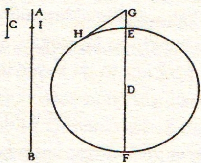
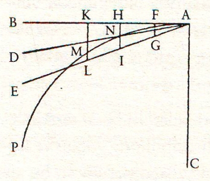
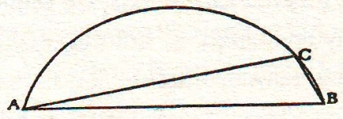
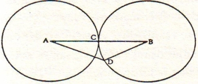
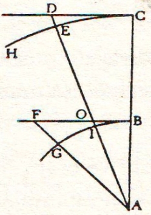
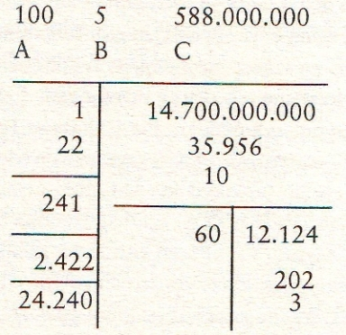
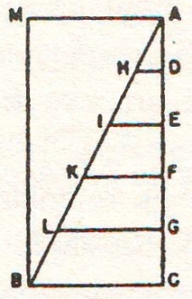
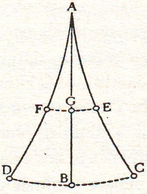

Salviati – Sizin bu konuda diğer konulara kıyasla zorlanmanız bence, kuşların canlı varlıklar oluşundan ve bu nedenle de yeryüzünde bulunan şeylerin silinmez mühür gibi kendilerinde var olan birincil harekete karşı kendi keyiflerince güç kullanabiliyor olmalarından ileri geliyor. Nitekim buna hepimiz tanık olmaktayız: Birer canlı olmaları itibariyle yukarıya doğru da çıkabiliyorlar. Ölü oldukları takdirde tıpkı bir cisim gibi aşağı doğru düşmekten başka çareleri kalmaz; bu nedenle düşünceniz şu ki canlı oldukları takdirde, az önce sözünü ettiğimiz mermi atışlarıyla ilgili gerekçeler kuşlar için geçerli değildir. Bu düşünceniz elbet doğrudur Bay Sagredo ve doğru olduğu için de fırlatılan mermiler kuşların yaptıklarını başaramazlar. Çünkü eğer siz kulenin tepesinden bir ölü bir de canlı kuş salıverecek olursanız, ölü olanın akıbeti bir taşınki gibi olacak yani önce Yerküre’nin genel dönüş hareketini izleyecek ve sonra da herhangi bir ağır cisim gibi aşağı düşüş hareketini sürdürecektir; fakat kuş canlı ise Yerküre’nin günlük dönme hareketinin, silinmeyen bir mühür misali, onda silinmez bir hareket olarak etkisini sürdürdüğünü göz önünde tutmamız şartıyla, onun kanat çırparak istediği yönde, ufukta hoşlanacağı herhangi bir yere doğru uçmasını kim engeller ki? Ve biz onun bu hareketini, onun kendine ait ve bizim katılmadığımız bir hareket olarak duyularımıza hitap etmesinden fark ederiz ve o uçuşuyla batıya doğru gitmişse onun yine o miktar kanat çırpışıyla kulenin tepesine dönmesine kim engel olabilir? Çünkü, netice itibariyle, batıya doğru uçuşa geçtiği takdirde kuş, Yerküre’nin dönme hızının, ki bu hızı 10 derece gücünde bir hız kabul edelim, ancak 1 derecelik bölümünü eksiltmiş oluyor ve böylece Yerküre’nin dönme hızından kuşa, batıya uçtuğu sırada 9 derecelik hız kalmış oluyor ve sonra ayakları Yer’e değdiğinde yine olağan 10 derece hıza sahip oluyor. Bu 10 derece gücündeki hıza, eğer doğuya doğru uçarsa kendi 1 derece hızını ekleyebilir ve 11 hız derecesiyle kuleye dönüş yapabilirdi: Özet olarak kuşların uçuşunu daha iyi inceleyecek ve etkilerini ince eleyip sık dokuyacak olursak Yerküre’nin herhangi bir yönüne doğru fırlatılan mermilerden farksız olduklarını anlarız, mermilerin ancak bir dış güç tarafından harekete geçirilmeleri, oysa kuşların içsel, kendilerine ait bir güçle harekete geçmeleri durumu vardır.
Bu noktaya gelince, söz konusu ettiğimiz tüm deneyleri bir kenara bırakarak tümünü birden kolaylıkla sınamanın yolunu göstermemiz gerekir. Büyük bir geminin[103] güvertesi altında olan bir kamaraya çekiliniz bir arkadaşınızla beraber ve bu kamarada sinek, kelebek ve benzeri uçan hayvancıklar bulunsun; burada bir de akvaryum olsun, içinde birkaç küçük balık dolaşan; yüksek bir yere bir küçük kova asın ve bu kovadan onun altındaki dar ağızlı bir kaba damlaya damlaya su aksın. Gemi duruyor vaziyetteyken uçan hayvancıkların eşit hızla kamaranın her yanına doğru uçtuklarını dikkatle izleyiniz; balıkların hiç kimseye aldırmadan her yöne doğru koşuştuklarını göreceksiniz. Su damlalarının hepsinin alttaki kabın ağzından girdiklerini göreceksiniz ve siz arkadaşınıza bir eşya atmayı denediğinizde, uzaklıklar eşit olmak şartıyla, daha büyük bir zahmet harcamadan bir yöne ya da öbür yöne atmak arasında fark olmadığını da göreceksiniz ve alışılmış deyimle, bacaklarınızı birleştirerek atlarsanız, her yöne doğru eşit mesafe aldığınızı göreceksiniz. Sıraladığım tüm bu olguların aynen gerçekleştiğini titizlikle gözledikten ve gemi duruyor olduğunda da bu olguların aynen gerçekleştiğinden iyice emin olduktan sonra, gemiyi istediğiniz hıza ulaştırın (yeter ki geminin hızı hep aynı, tekdüze olsun ve tekneyi sağa sola iten dalga da olmasın) belirttiğim etkilerle aynen karşılaşacaksınız ve hiç fark olmayacak, gemi duruyor mu hareket halinde mi hiç fark etmeyeceksiniz. Sıçradığınızda döşemede daha önce kat ettiğiniz aynı mesafeleri kat edeceksiniz ve gemi çok hızlı gidiyor diye pupa (kıç) ya da pruaya sıçrayışınız daha büyük gayret gerektirmeyecek, altınızdaki döşeme, sizin havada geçirdiğiniz sürede, sizin sıçrayışınıza ters yönde gidiyor olsa da ve arkadaşınıza bir şey atarken onun pruada sizin de pupa tarafında bulunmanız, attığınız eşyayı arkadaşınıza ulaştırmada daha fazla güç uygulamanızı gerektirmeyecektir.
Su damlaları da gemi dururken olduğu gibi hareket halindeyken de aynen alttaki kabın ağzından içeri girecektir. Kovadan inen su damlası havadayken, gemi birkaç karış ilerlemiş bulunsa da su damlaları aynen alttaki kaba girecektir. Balıklar akvaryumun ön bölümüne doğru giderken arka bölümüne doğru yüzmek için harcadıkları güçten daha fazlasını harcamayacaklardır ve cam kenarının herhangi bir yerine konan yemlere aynı çeviklikle geleceklerdir ve nihayet kelebekler ve sinekler uçuşlarını her yöne doğru, hiç fark gözetmeden sürdüreceklerdir; ne de onları uzun süredir havada kalmaktan, geminin hızlı gidişine ayak uydurmaktan yorgun düşmüşçesine geminin pupa kısmına çekilip üşüşmüş bulursunuz. Ve birkaç damla gözyaşı pahasına tütsü yakıp azıcık duman oluşturduğunuzda kamarada, yukarıya doğru çıkan dumanın bir bulut gibi oracıkta kalakaldığını ve o tarafta, bu taraftan fazla olmamak kaydıyla hiçbir fark gözetmeden sarktığını görürsünz. Tüm bu etkilerin birbiriyle uyuşmasının nedeni, geminin hareketinin gemideki her şeyle ve üstelik havayla da ortak paylaşım içinde bulunmasıdır. Zaten güverte altı bir kamarada kalınması gereğini bu nedenle öne sürmüştüm; çünkü güverte üstünde ve açık havada kalınıyor olsa geminin seyrine karışan etkiler yüzünden yukarıda belirttiğimiz etkilerden bazılarında az çok farklar görülür: Hiç şüphe yok ki duman geride kalırdı havanın kalacağı kadar. Sinekler de geride kalırdı kelebekler de çünkü hava tarafından engellenirlerdi. Gemiyle aralarında epey bir mesafe söz konusu olunca gemiyi izleyemezlerdi; oysa içi dehliz gibi girift, girintili çıkıntılı imal edilmiş bir cisim olan gemi, yakın çevresindeki havayı da beraberinde taşıdığından gemi içinde bulunmak bu küçücük hayvanlara gemiyi zahmetsizce ve engelsiz izleme imkânı verir ve benzer bir nedenle bazen atlı posta arabaları koştururken münasebetsiz sineklerin, at sineklerinin ve benzeri küçük hayvanların, atları kâh oralarına kâh buralarına konmak üzere, uçuşlarıyla izlediklerini görürüz; oysa sözünü ettiğimiz etki, kovadan şişe ağzına düşen su damlalarında pek az olur ve anlattığımız o sıçrayışlarda ve ağır mermi atışlarında hiç fark edilmeyecek gibidir.
Sagredo – Yolculuk sırasında böylesi gözlemlerde bulunmak aklımdan geçmese de her şeyin anlatılan biçimde olduğuna çok eminim. Yapılmış olan bu gözlemleri teyit amacıyla şunu anlatayım: Yolculuklarım sırasında kamarama çekilmiş otururken, geminin duruyor mu yürüyor mu olduğunu kendime yüzlerce defa sormuşluğum vardır ve bazen üzerime rehavet çöktüğünde gemiyi şu yöne doğru ilerliyor sanırken geminin aksi istikamette gittiğini fark etmiştim. Bu arada şunu söyleyeyim ki Yerküre’nin dönüyor olması lehindeki fikirlerden çok aleyhindeki fikirleri kanıtlamak için ortaya konan tüm deneylerin değerinin hiç mesabesinde olduğunu anlamaktan şu ana kadar memnun kalmış bulunuyorum. Şimdi de hızla dönen bir makinenin, kendi üzerinde bulunan maddeleri, üzerinden nasıl fırlatıp atma becerisine sahip olduğunu deneyle görme temeline dayanan fikri işlemek kalıyor. Çünkü çoğu kimse ve Batlamyus da öyle sanıyordu ki eğer Yerküre’nin kendisi bu kadar büyük bir hızla dönüyor olsa yeryüzündeki taşın toprağın, hayvanların yıldızlara doğru fırlaması gerekirdi ve binalar da benzer bir felakete uğramayacak gibi temelleri sağlam, mıcır harcıyla sabitleştirilmiş olamazlardı.
Salviati – Böyle bir düşüncenin çözümlenmesi sorununa gelmeden önce binlerce kez gözlediğim ve kendi kendime gülmeden de edemediğim bir şeyi söylemeden geçemeyeceğim: Hemen hemen bütün insanlar öylesine Yerküre’nin sabit ve hareketsiz olduğuna inanmışlar ki bu hareketsizlikten, tüm diğer insanların da onlarla birlikte Yerküre’nin hareketsiz yaratıldığını ve gelmiş geçmiş yüzyıllardan beri böyle süregeldiğini benimsediklerine kesin kanaat getirmiş bulunduklarından, birinden Yerküre dönüyor sözünü duyar duymaz onların aklına neler geldiğine ilişkin binlerce gözlemim olduğunu söylemeden geçemeyeceğim. Bunlar böyle bir kavrama takılıp kaldıklarından, birinin çıkıp da Yerküre’ye dönme hareketi tanıması karşısında şaşırıyorlar: Yerküre’nin dönmediği fikrine sarılıp da döndüğünü ilk ortaya atan Pythagoras ya da biz başkasını, Yerküre dönmeye sanki ancak o zaman başlamış gibi daha önce böyle bir şey olmadığına aptalca inanan biri sanıyorlar. Böyle budalaca bir fikrin (Yerküre’nin dönme hareketini kabullenenlerin, yaratılıştan Pythagoras zamanına kadar Yerküre’yi hareketsiz kabul edip yalnızca Pythagoras’ın onu hareketli ilan etmesinden sonra bu duruma inanma halinden söz ediyorum) kaba saba düşünceli ve düşünmeyi hafife alanların zihnine sızacak bir yol bulması beni şaşırtmıyor; fakat Aristotelesçi’lerin ve Batlamyusçular’ın böyle çocukça davranmalarını garipsiyorum ve affedilmez, hoyratça düşünce olarak niteliyorum.
Sagredo – Demek siz, Bay Salviati, Batlamyus’un tartışmalarda Yerküre’nin Pythagoras dönemine kadar hareketsiz olduğunu kabul edip ancak Pythagoras döneminde hareketli kılındığını ifade edenlere karşı mı Yerküre’nin hareketsizliğini savunmak zorunda kaldığına inanıyorsunuz?
Salviati – Batlamyus’un, onların sözlerini reddetmek için cevaplayış tarzına iyice bakacak olursak başka türlü olduğuna inanmak zor; Batlamyus’un reddettiği şey, yapıların yıkılması, taşların, hayvanların ve bizzat insanların gökyüzüne fırlamaları noktasında toplanıyor; böyle bir harabenin ve fırlayıp uçma felaketinin oluşması için daha önceden yeryüzünde binalar ve hayvanlar gibi şeylerin mevcut olması gerekir ki ardından söz konusu harabe ve felaket gelsin ve Yerküre sabit durmadan yeryüzünde insan var olamayacağından ve bina inşa edilmiş bulunamayacağından, Batlamyus bu gerekçeye dayanarak yeryüzünde bir süre için yani hayvanların, taşların ve bina yapacak yapı ustalarının barınabilmesine imkân verecek bir süreyi Yerküre’ye hareketsizlik süresi olarak tanıdıktan sonra, birdenbire hareketlenen bir Yerküre’de yapıların harabeye dönüşmesine, hayvanların yok olmasına yol açacak durumu kabullenenlere itiraz ediyor. İtirazın bu yönde olduğu açıkça anlaşılıyor. Çünkü Batlamyus, Yerküre’ye dönme hareketini yaratılıştan itibaren tanıyanlara itiraza kalkışsaydı, itirazını Yerküre eğer ta başlangıcından beri dönüyor olsaydı, yeryüzünde hiçbir zaman panayırlar, insanlar, taşlar bulunmazdı ve elbet binalar inşa edilemez, şehirler kurulamazdı şeklinde cevaplayarak dile getirirdi.
Simplicio – Uyumsuz bulduğunuz Aristotelesçi ve Batlamyusçu şu iddiayı pek kavrayamadım.
Salviati – Batlamyus Yerküre’yi ya başlangıcından beri dönüyor kabul edenlere karşı çıkıyor ya da bir süre için hareketsiz durup sonradan harekete geçmiş kabul edenlere itiraz ediyor. Eğer birinci gruba itiraz ediyorsa şöyle fikir yürütmeliydi: “Yerküre ta başlangıcından beri hareket sahibi değildi, öyle olsaydı yeryüzünde hiçbir zaman ne insan olurdu ne hayvan ne de bina kalırdı, çünkü Yerküre’nin dönmesi bunlara barınma olanağı tanımazdı.” Fakat Batlamyus, tartışmalarında, “Yerküre hareketsiz durmaktadır, çünkü dönüyor olsaydı yeryüzünde mevcut panayır yerleri, insanlar, binalar fırlar giderdi.” diye fikir yürütmekle Yerküre’nin bir zamanlar panayırlara, insanlara barınma, binalara da yerli yerinde durma imkânı verecek bir halde olduğu varsayımından hareket ediyor. Bundan çıkan sonuç da Yerküre’nin bir zamanlar hareketsiz durduğu yani hayvanların barınmasına, binaların inşa edilmesine müsait bir durum arz ettiğidir. Benim anlatmak istediğimi şimdi algılamış oldunuz mu?
Simplicio – Algıladım da diyebilirim algılamadım da... Fakat bunun asıl konuya etkisi pek fazla olamaz ve ne de Batlamyus’un minicik bir hatası, dikkatsizlikten ileri gelen küçük bir yanlışlığı Yerküre’yi yerinden oynatmaya yeterli olmaz, Yerküre hareketsiz durduğuna göre. Ama şaka bir yana, konunun bam teline gelelim, çözümlenebileceğini sanmadığım düğümüne.
Salviati – Ben, Bay Simplicio, bu konunun bam teline bir düğüm daha atmak istiyorum ki sonunda düğümleri çözmenin önemi anlaşılsın. Bu sonuca, sağduyuya hitap ederek, ağırlık sahibi cisimlerin istikrarlı bir merkez etrafında hızla döndürülünce o merkezden uzaklaşmaya yönelik hareket kazanırken, aynı zamanda o merkeze, doğaları gereği gitme eğilimine sahip bulunduklarını göstermek suretiyle varmak istiyorum. Bir ipin ucuna kova bağlayalım, içine su koyalım, ipin diğer ucunu sağlam tutup ipi ve kolumuzu bir dairenin yarıçapı kabul ederek ve omuz başımızı merkez belleyerek kovayı merkez etrafında hızla döndürmeye başlayalım. Böylece kova bir daire çiziyor olsun havada. Daire çevresi ya ufka paralel ya ufka dikey ya da istediğiniz gibi eğimli olsun. Tüm bu hallerde suyun kovadan dışarı fırlamayacağını göreceksiniz. Hatta kovayı hızla çeviren kişi ipin hep çekerek omuzdan uzaklaşma çabası içinde olduğunu fark edecektir ve eğer kovanın dibinde bir delik olsa sudan ne göğe doğru ne yana doğru ve ne de yere doğru zırnık damla akmadığına tanık olacaksınız. Eğer su yerine kovaya ufak tefek taşlar konsa ve aynı şekilde kova döndürülse yine çeken ipe karşı güç kullanma gereğini hissedeceksiniz. Nihayet küçük çocukların bir kamışın ucuna mandalladıkları taşı, hızla döndürdükleri kamışın mandalından fırlatmaları oyunundan söz etmeye geldi sıra: Tüm bunlar, sonucun gerçekliğinin yani dönme hızının cisme, dairenin çevresine doğru uzaklaşma gücü kazandırdığı gerçeğinin örnekleridir; bu nedenle de şayet Yerküre kendi etrafında dönüyorsa yüzeyinden ve özellikle en büyük çember çevresi yüzeyinden, yukarıda örnek olarak verilen daire çevrelerinden kıyaslanmayacak derecede büyük hızla dönen bir daire çevresi yüzeyinden, her çeşit eşyayı göğe doğru fırlatması gerekir.
Simplicio – Sorun pek güzel sunuldu sanırım ve düğüm de belirginleşti; düğümü çözmenin çok zor olacağı kanaatindeyim.
Salviati – O düğümün çözülmesi bazı bilgilere dayanıyor ve bu bilgiler hem sizin hem de benim tarafımdan bilinmektedir ve bu bilgilere inanılmaktadır; ne var ki bunlar aklınıza gelmediğinden bu nedenle sorunun nasıl çözüleceğini göremiyorsunuz. Demek ki benim size öğretmeme gerek kalmadan, çünkü sizin zaten bildiğiniz şeyler bunlar, sadece hatırlatacaklarımla sorunu siz kendiniz çözmüş olacaksınız.
Simplicio – Ben sizin fikir yürütme tarzınızı anlamaya birçok kez çaba harcadım. Bu düşüncelerim bende, sizin
Platon’un “Bilmek anımsamaktan başka bir şey değildir” fikrine yatkın olduğunuz kanaatini uyandırdı: Ne olur, bu konudaki düşüncenizi açıklayın da bu şüpheden kurtulmamı sağlayın.
Salviati – Platon hakkındaki kanaatimi size sözle de olgularla da anlatabilirim. Zaten şuraya kadar yürütülen fikirlere birkaç defa olgular da ekledim: Şimdi ele aldığımız konuda da aynı tarzı uygulayacağım. Böylece bilim nasıl elde edilir sorusunun cevabı da daha kolay anlaşılır. Fakat bunu başka bir güne bırakalım ki Bay Sagredo’nun, yine fikir silsilesinden ayrıldık diye canı sıkılmasın.
Sagredo – Bilakis, çok memnun kalırım, çünkü hatırlıyorum, mantık dersleri okurken Aristoteles’in o çok ünlü başlıca ispat yöntemini kavrayamamıştım.
Salviati – Öyleyse devam edelim: Bay Simplicio bana söylesin bakalım, o çocuk kamışın mandalına sıkı sıkıya geçirilmiş küçücük taşı fırlatmak için harekete geçtiğinde çocuğun yaptığı nasıl bir harekettir?
Simplicio – Taşın hareketi, taş henüz mandaldayken daireseldir yani istikrarlı merkezi omuz başı olan, yarıçapı da kamışın ve artı kolun uzunluğu olan bir daire yayı çizmektedir.
Salviati – Peki, taş kamıştan kurtulunca yaptığı hareket nasıl bir harekettir? Taş, önceki dairesel hareketi mi devam ettirmektedir yoksa başka bir hat boyunca mı ilerlemektedir?
Simplicio – Dönme hareketini artık sürdürmez, çünkü sürdürse fırlatıcının omuzundan uzaklaşmazdı; oysa biz taşın uzaklara gittiğine tanık oluyoruz.
Salviati – Peki taş nasıl bir hareket izlemiş oluyor?
Simplicio – Bırakın da biraz düşüneyim, çünkü üzerinde fazla kafa yormadım.
Salviati – Bay Sagredo, duyuyorsunuz değil mi? Bilmek anımsatmaktır diye buna derler işte: Ama siz çokça düşünüyorsunuz bay Simplicio!
Simplicio – Bence mandaldan kurtulurken taşın edindiği hareket doğrusal hattan başkası olamaz; hatta bu hareket mecburen bir doğru boyunca olacaktır, eğer taşın önceki hareketini izleyen yeni başlamış olan hareketi kastediyorsanız. Taşın bir yay çizdiğini görmek beni biraz rahatsız ediyordu ama yay sürekli aşağıya doğru eğim kazandığından ve bu eğim başka tarafa doğru olmadığından, bu eğimli gidişin, taşın ağırlığından ileri geldiğini anlıyorum: Ağırlık, doğal olarak onu aşağıya doğru çekiyor. Böylece taşa aktarılmış olan hız şiddetinin ona doğrusal hattan başka bir hat benimsetmeyeceğini söyleyebilirim.
Salviati – Fakat doğrusal hatlardan hangisini? Çünkü kamışın mandalından ve taşın kamıştan ayrılış noktasından her yöne doğru düz hat çıkışı olabilir.
Simplicio – Taş, kamışın ağzından çıkarken edinmiş bulunduğu doğrultudaki hat boyunca hareket edecektir.
Salviati – Taş, kamışın mandalındayken, söylediğiniz gibi hareket daireseldi; şimdiyse dairesel hata baş kaldırıyor ve dairesel hat, düz hat diye bir şey içermediğinden, kamışın ağzından aldığı doğrultu bir doğru boyunca hareketi gerektiriyor.
Simplicio – Ben, cismin kurtuluş hareketinde depar çıkışının dairesel hattın tamamına bağlı bulunduğunu kabul etmiyorum ancak dairesel harekete son verilen noktadan itibaren doğrusal hat kulvarına girdiğini biliyorum. Ben içimde bunu hissediyorum, anlıyorum fakat iyi ifade edemiyorum.
Salviati – Ben de farkındayım, siz soruna aşinasınız fakat onu anlatacak sözlere ve terimlere sahip değilsiniz: İşte bunları ben size öğretebilirim; öğretebileceklerim ancak kelimelerdir, gerçekleri öğretemem, kelimeleri ve şeyleri öğretebilirim. Konuyu bildiğinize fakat anlatmaya yeterli terimleri bilmediğinize sizi tam anlamıyla ikna edebilmem için söyler misiniz bana, siz bir namludan bir mermi fırlattığınızda mermi hangi yöne doğru hızla yol alma şiddeti kazanır?
Simplicio – Namlu doğrultusunu izleyen doğrusal hat boyunca gitme şiddeti edinir, yani ne sağa, ne sola, ne yukarıya, ne de aşağıya gitme eğilimi göstermez.
Salviati – Kısacası, namlunun sağladığı doğrusal hareket çizgisiyle hiçbir açı oluşturmaz demeye getiriyorsunuz.
Simplicio – Evet, bunu demek istedim.
Salviati – Öyleyse, fırlatılmış cismin hareket hattı, cisim tarafından çizilen dairesel hat üzerinde açı yapmadan devam edecekse ve bu dairesel hareketten doğrusal harekete geçmesi icap ediyorsa bu doğrusal hangi doğrusal hat olacaktır?
Simplicio – Daireye, ondan ayrıldığı noktada değen doğrudan başkası olamaz. Çünkü, bundan başka tüm diğer doğrular daire çevresini keser ve bu nedenle de daire çevresiyle şu ya da bu kadarlık bir açı oluştururlar.
Salviati – Güzel, düşünceli bir konuşma yaptınız ve neredeyse bir geometri uzmanı gibi ifadeler kullandınız. Söylediklerinize ait kavramın tam olarak şu sözlerle ifade edilebileceğini belleğinize işleyiniz: Fırlatılan cisim, fırlatıcının hareketi tarafından çizilen daireden ayrılış noktasından itibaren teğet boyunca hareket gücü kazanır.
Simplicio – Tamamen anlamış bulunuyorum ve benim de söylemek istediğim buydu.
Salviati – Daireye değen bir doğrunun tüm noktalarından hangisi o dairenin merkezine en yakın olanıdır?
Simplicio – Temas noktasıdır şüphesiz; çünkü diğer noktaların hepsi dışarıda kalır ve biliyoruz ki daire çevresinin tüm noktaları merkezden eşit uzaklıktadırlar.
Salviati – Demek oluyor ki hareketli bir cisim temas noktasından ayrılıp teğet doğrusu boyunca gitmeyi sürdürmekle, temas noktasından sürekli uzaklaşırken dairenin merkezinden de uzaklaşır.
Simplicio – Elbet öyle.
Salviati – Şimdi siz, bana ifade ettiğiniz önermeleri aklınızda tuttuysanız hepsini toparlayın ve bundan çıkacak olanları bir araya getirin lütfen.
Simplicio – Söylediklerimi hatırlamayacak kadar zayıf değil belleğim, söylenmiş olan şeylerden anlaşıldığına göre fırlatıcı tarafından daire boyunca hızla hareket ettirilen cisim, fırlatıcıdan aynlırken ayrılma noktasından itibaren doğrusal boyunca hareketini devam ettirme gücü kazanıyor; bu hareket nedeniyle de fırlatılmış cisim, fırlatıcının hareketi tarafından çizilen dairenin merkezinden sürekli uzaklaşır.
Salviati – Demek siz, artık, hızla hareket ettirilen bir tekerin yüzeyine abanmış ağır cisimlerin dışa fırlatılmalarının nedenini biliyorsunuz; dışa fırlatılanlar derken, dairenin çevresi ötesine fırlatılmalarını kastediyorum, sürekli merkezden uzağa.
Simplicio – Bunu iyice anlamış bulunuyorum ama bu yeni bilgiler, Yerküre’nin bu denli büyük hızla dönerken taşları, hayvanları vb. fırlatmadan edemeyeceğine dair inancımı azaltmış değil, bilakis, daha da güçlendirdi.
Salviati – Şu ana dek nasıl her şeyi kendi kendinize bilmeyi başardınızsa bundan sonrasını da bilmeyi südüreceksiniz, hatta biliyorsunuz sayılır ve bunlar üzerinde düşünmeyi sürdürdükçe kendiliğinizden dahasını da anımsayacaksınız. Fakat vakit harcamayalım diye hatırlamanıza ben yardımcı olacağım. Şu ana dek siz, fırlatıcının dairesel hareketinin, fırlatılan cisme, hareket dairesine teğet çizgide hareketini devam ettirici hız gücünü (ayrılma gerçekleştiği takdirde) sağladığını kendiliğinizden bildiniz ve bu hat boyunca hareketini sürdürerek cismin fırlatıcıdan sürekli uzaklaştığını da ifade ettiniz. Dediniz ki fırlatılan cisim bu hat boyunca hareketini sürdürürdü, eğer cismin kendi ağırlığı nedeniyle yere doğru inmesi eğilimi rol oynamamış olsa ki bu eğilimden ötürü hareket çizgisi kavis halini alır. Öyle sanıyorum ki siz kendi kendinize şunu da bildiniz: Kavisli kıvrılma hep Yerküre’nin merkezine doğru bir eğim gösteriyor, çünkü ağırlık sahibi cisimlerin hepsi oraya doğru meylediyorlar. Şimdi bir nebze daha ileri gidiyorum ve hareketli cisim, ayrılıştan sonraki doğrusal hareketini sürdürürken o dairenin merkezinden ya da dairenin çevresinden diyelim, hep eşit miktarda mı uzaklaşır diye soruyorum. Bunu şöyle de sorabiliriz: Hareketli bir cisim, teğet noktasından itibaren hareketle ve bu teğet boyunca yol almak suretiyle, gerek temas noktasından gerek dairenin çevresinden eşit miktarda mı uzaklaşır?
Simplicio – Elbette hayır, çünkü teğet, daireyle temas noktası yakınındayken dairenin çevresinden pek az uzaklaşır, bu nedenle de teğetin daire çevresiyle oluşturduğu açı çok dardır; fakat uzaklaştıkça ve giderek daha da uzaklaştıkça, uzaklaşma hep daha büyük oranda artar: Öyle ki örneğin 10 arşın çapındaki bir dairede temastan iki avuç uzakta bulunan teğetin bir noktası, yalnızca bir avuç uzakta bulunan noktasına kıyasla dairenin çevresinden üç-dört misli uzaklaşmış olur; sadece yarım avuç uzakta bulunan noktaya kıyasla da ikincinin ancak çeyrek mesafesi kadar uzaklaşmış olur. Öyle ki temasa bir ya da iki parmak yakınlıkta olduğunda, teğetin daire çevresinden uzaklaştığı bile zor fark edilir.
Salviati – Bu durumda dairesel hareketin hemen sonrasında fırlatılan cismin daire çevresinden uzaklaşması başlangıçta pek azdır.
Simplicio – Neredeyse fark edilmeyecek gibi.
Salviati – Söyler misin, fırlatıcı tekerin hareketinden teğet doğrusu boyunca gitmek üzere hareket gücü kazanan ve eğer kendi ağırlığı aşağı doğru çekmese yoluna devam edecek olan cisim, ayrılış noktasını terk ettikten ne kadar sonra aşağı doğru inişe başlar?
Simplicio – Sanırım hemen başlar çünkü cisme alttan destek olan bir şey yok: Bu nedenle cismin kendi ağırlığının kendini hissettirmemesi imkânsızdır.
Salviati – Öyleyse büyük bir hızla döndürülen o tekerleğin fırlattığı taş, tekerleğin merkezine doğru, tıpkı Yerküre’nin merkezine gidiş gibi doğal eğilime sahip bulunsa o taş için yine tekerleğe geri dönüş yapması, başka bir deyişle tekerlekten ayrılmaması kolaylaşırdı; çünkü ayrılışın ilk başlangıcında, temas noktasındaki açının müthiş darlığı nedeniyle uzaklaşma o denli az ve asgaridir ki tekerleğin merkezine doğru cismi çeken asgari her eğim, onu dairenin çevresi üstünde alıkoymaya yeterli olurdu.
Simplicio – Olmayan ve olmayacak bir şey için bir varsayımda bulunarak yani ağır cisimlerin eğiliminin o tekerleğin merkezine gitmek olduğu varsayımına dayanarak cevap vermemi istiyorsanız söyleyeyim: O takdirde ağır cisimler dışarıya atılmazlardı, fırlamazlardı.
Salviati – Olmayan bir şeyin varsayımına ben de taraftar değilim, ne de böyle bir şeye ihtiyaç duyuyorum, çünkü taşların fırlatıldıklarını inkâr etmek istemiyorum. Fakat, mesela türünden bir fikir yürütelim ve siz de geri kalan kısmını tamamlarsınız. Şimdi, Yerküre’yi böylesi büyük bir hızla döndürülen teker farz edin ve taşları fırlatsın. Zaten siz bana pek güzel ifade ederek fırlama hareketinin, Yerküre’ye ayrılma noktasından itibaren değen o doğru boyunca olması icap eder dediniz: Peki bu teğet, Yerküre’nin yüzeyinden fark edilebilecek miktarda olmak üzere Yerküre’nin yüzeyinden ne kadar uzaklaşır?
Simplicio – 1.000 arşınlık yol gittiğinde yüzeyden bir parmak kadar bile uzaklaşmaz.
Salviati – Ve fırlatılan cisim için siz, kendi ağırlığı tarafından aşağı doğru çekilmesinden ötürü, teğet gidişte Yerküre’nin merkezine doğru eğim yapar demediniz mi?
Simplicio – Evet, söyledim ve eksik kalan tarafları da söyleyeyim: Açıkça diyorum ki taş Yerküre’den ayrılmayacaktır çünkü başlangıçtaki uzaklaşma o denli ve o denli asgaridir ki taşın Yerküre merkezine yöneliş eğilimi bin kez fazladır; bizim bahsimizde bu merkez tekerin de merkezidir. Gerçekten kabul etmeliyim ki hayvanların ve diğer ağır cisimlerin fırlamaları mümkün değil: Fakat bu defa da çok hafif cisimlerin durumu zihnimi kurcalıyor. Bunların merkeze iniş eğilimi pek az olduğundan, bu hafif cisimler için dışarıya fırlatılmamaları diye bir şey olamaz. Deyimi bilirsiniz: “Tümü alaşağı etmek için bir noktada haklılık yeterlidir.”
Salviati – Bu konuda da sizi tatmin edeceğiz Bay
Simplicio. Fakat önce bana hafif cisimlerden neyi kastettiğinizi söyleyin; yani gerçekten yukarıya doğru çıkacak kadar hafif olanları mı kastediyorsunuz yoksa mutlak hafiflikte olmayanları yani pek az ağırlığa sahip bulundukları için aşağı doğru inenleri mi? Ki bunlar hafif oldukları için yavaş inerler. Çünkü mutlak hafiflikte olanları kastediyorsanız bunlardan istediğiniz kadarının fırlatılmalarına izin verebiliriz.
Simplicio – Ben bu ikinci gurubu kastediyorum, örneğin kuştüyü, yün, bez fiyonk ve benzerleri. Bunları yerlerinden kaldırmak için en ufak bir güç kullanımı yeterli olduğu halde yere çökmüş rahat rahat duruyorlar.
Salviati – Bu kuştüyü yeryüzeyine inme doğal eğilimine asgari derecede bile sahip olsa yine de bu eğilim onun havalanmasını engellemeye yeterlidir; bu sizin de meçhulünüz değildir: Bir de söyler misiniz, kuştüyü Yerküre’nin dönme hızı nedeniyle fırlatılsa hangi hat boyunca hareket ederdi?
Simplicio – Teğetin daire çevresinden ayrılma noktasından.
Salviati – Ve yeryüzüyle yeniden birleşmek için geri gelecek olsa hangi hat boyunca hareket ederdi?
Simplicio – Yerküre’nin merkezine kuştüyünden itibaren giden hat.
Salviati – Demek, burada iki hareket göz önünde tutulmalıdır: Biri cismin fırlatılmasına ait olup temas noktasından başlamak suretiyle teğet boyunca sürgit eden; diğeri de aşağı doru eğilim olup fırlatılan cisimden başlayıp merkeze doğru sekant boyunca inen hat. Fırlatılmışlık devam etsin isteniyorsa teğetteki hızın gücü sekanttaki eğime üstün gelmelidir, öyle değil mi?
Simplicio – Öyle olmalı.
Salviati – Sizce yere doğru olan eğim gücüne üstünlük sağlayabilmesi ve böylece kuştüyünün yeryüzünden fırlayıp gitmesi için fırlatıcı güce ne mene bir güç gereklidir?
Simplicio – Bilmiyorum.
Salviati – Nasıl bilmezsiniz? Söz konusu hareketli cisim aynı cisim: kuştüyü. Aynı hareketli cisim nasıl olur da hareket bakımından kendini aşabilir ve kendini üstün kılabilir?
Simplicio – Hareketli o cismin hareket bakımından kendini aşabilmesi ya da kendinden aşağı kalması, ancak ya daha hızlı ya da daha yavaş hareket etmesiyle mümkündür, başka türlü bir durum düşünemiyorum.
Salviati – İşte, bakın, yine de biliyordunuz. Demek ki eğer kuştüyünün fırlaması devam edecekse ve teğetteki hareket sekanttaki harekete üstün gelecekse bunların hızları ne olmalı?
Simplicio – Teğetteki hareketin sekanttaki diğer hareketten hızlı olması gerekir. Eyvah! Ne budalayım ben! Yalnızca kuştüyünün iniş hareketinden yüz bin kez daha büyük olmakla kalmayıp taşın iniş hızından da fazla değil mi teğetin hızı? Gerçekten saf biriyim: Yerküre’nin dönmesinden ötürü taşların yeryüzünden fırlamayacaklarına az önce ikna edildim. Şimdi o söylediklerimi yeniden ele alıyorum ve diyorum ki Yerküre’nin dönüyor olması halinde taşlar, filler, kuleler ve kentler mecburen gökyüzüne fırlar, uçarlardı ve böyle bir durumla karşılaşmadığımıza göre diyorum ki Yerküre dönmüyor.
Salviati – Fakat siz, Bay Simplicio, öyle çabuk hop oturup hop kalkıyorsunuz ki kuştüyünün durumundan çok sizin durumunuzdan endişe etmeye başlayacağım. Sakinleşin biraz ve kulak verin lütfen. Eğer taşı ya da kuştüyünü Yerküre yüzeyine bitişik alıkoymak için onun aşağı doğru iniş hızının teğetteki hareketin hızı kadar olmasına ya da ondan fazlasına ihtiyaç olsaydı, cismin aşağı doğru iniş sekantındaki hızı, teğetteki Yerküre’nin doğuya doğru dönüş hızı kadar ya da daha fazla olmalıdır, demeye hakkınız olurdu. Ama siz değil miydiniz, az önce, teğet çizgisindeki temas noktasından itibaren 1.000 arşınlık yol kat edildiğinde dairenin çevresinden ancak bir parmak uzaklaşıldığını söyleyen? Demek, teğetteki hareketin, ki bu hareket Yerküre’nin dönme hızıdır, sekanttaki aşağı doğru hareketten sadece daha hızlı olması yeterli değildir ve fakat gerekli olan şudur: Teğetteki hız o denli fazla olmalı ki kuştüyünü teğet doğrultusunda, örneğin 1.000 arşın götürmeye yeterli süre, kuştüyünün sekantta aşağıya doğru bir parmakçık inmesine imkân tanımayacak kadar kısa olmalıdır. Böyle bir şey, size söyleyeyim, hiç gerçekleşmez; teğetteki hızı istediğiniz kadar artırsanız da sekanttakini istediğiniz kadar yavaşlatsanız da öyle bir durum gerçekleşmez.
Simplicio – Peki ama teğetteki hareket, kuştüyüne Yerküre yüzeyine ulaşmasına yeterli süre tanımayacak kadar bir hıza neden sahip olmasın?
Salviati – Bu dediğinizi sayılara vurarak sorunu kanıtlamaya çalışınız ve ben de cevabını vereyim. Söyleyin bakalım, teğetteki hareketin hızını sekanttakinden ne kadar daha fazla hesaplamak yeterli olur sizce?
Simplicio – Söyleyeyim: Örneğin teğetteki hız sekanttakinden bir milyon kez fazla olsa, kuştüyü ve taş da dışarıya fırlayıp giderlerdi.
Salviati – Siz böyle konuşuyorsunuz ama yanılıyorsunuz. Mantık ya da fizik veya metafizik hatasından ötürü değil, fakat geometri bilgisi eksikliğinden.

Şekil 10- Çevresi 40.000 km olan Yerküre’nin 24 saatte kendi etrafında dönmesi saatte 1.700 km gibi bir hızla yol alması demek olduğuna göre, “Nasıl oluyor da yeryüzündeki cisimler savrulup gitmiyor?” diyor Simplicio. Bu şekil HG teğeti boyunca savrulup gitmesi gereken cisimlerin GE sekantı tarafından Yerküre’nin merkezine doğru çekim gücü sayesinde alıkonulduğuna ilişkin bir çizimdir. Bu olgunun nedeni, bir sayfa sonra, geometriye dayanan verilerle açıklığa kavuşuyor.
Çünkü geometrinin yalnızca başlangıç elementlerini bilseniz, bilirdiniz ki dairenin merkezinden bir teğete kavuşturulacak gibi bir sekant çizilebilir: Öyle ki teğetin daireye temas noktasıyla sekanta kavuştuğu nokta arasındaki parça, teğetle dairenin çevresi arasında kalan sekant parçasından bir, iki, üç milyon kez büyük olabilir ve sekant temas noktasına daha yakın oldukça bu oran, sonsuz miktarda büyür; bu nedenle Yerküre’nin dönme hızı ne kadar fazla olursa olsun ve kuştüyünün ya da başka bir hafif cismin aşağı iniş hızı ne denli yavaş olursa olsun, cismin yeryüzünden kalkıp gitmesine ihtimal verilemez, çünkü aşağı doğru gidiş eğilimi fırlama hızından hep üstündür.
Sagredo – Ben bu izahattan tamamen tatmin olmadım. Dava neymiş anlayamadım.
Salviati – Ben size herkesçe malum bir kanıtlama göstereyim; hem de çok kolay. Elimizde veri olarak BA’nın C’ye oranı var ve BA istenildiği kadar C’den büyük ele alınabilir; dairenin D merkezinden bir sekant çizmek gerekiyor ve teğetin bu sekanta oranı BA’nın C’ye olan oranı kadardır. Bu ikisinden üçüncü oranı bulmak üzere AI mesafesini saptayalım ve BI’nın IA’ya oranı neyse FE çapının EG’ye oranı da aynı olsun. G noktasından da GH teğetini çizelim: İstenenin bu olduğunu söylüyorum ve BA’nın C’ye oranı neyse HG’nin GE’ye oranı aynı olsun. BI’nın IA’ya oranı FE’nin EG’ye oranı gibi olduğundan, birleşik bir değerlendirmeyle BA’nın AI’yla olan durumu neyse FG’nin GE’ye durumu da aynı olacaktır ve C çizgisi BA, AI’nın ortalama oranı olduğundan ve GH de FG ile GE’nin aynen ortalaması olduğundan bundan ötürü de BA’nın C’ye oran durumu ne ise FG’nin GH’ye durumu aynıdır, yani HG’nin GE’ye durumu gibi: Zaten yapılması gereken şey buydu.
Sagredo – Bu kanıtlamayı çok iyi anladım fakat tereddütlerimin hepsi giderilmiş değil. Bilakis, zihnimde yoğun ve karartılı sis gibi dolanan bir karışıklık hissediyorum ve bu sis matematik sorunlarının çözümlenmesinin getirdiği berraklığı vermediğinden, problemi tam olarak görmeyi engelliyor. Benim aklımı karıştıran şu: Evet, doğru söylüyorsunuz, teğetle daire çevresi arasındaki mesafeler, temas noktasına doğru yaklaşıldıkça sonsuza dek azalıyor, küçülüyor. Fakat buna karşılık şu da doğru: Hareketli cismin aşağıya iniş eğilimi, inişinin ilk terminaline yani istirahat haline ne kadar yakınsa o kadar azalıyor. Zaten bunu siz açıklamış ve demiştiniz ki ağırlığı olan bir cisim, harekete istirahat halinden başlar ve istirahat haliyle herhangi bir hız arasında durağanlıktan itibaren aradaki tüm yavaşlık derecelerini geçerek hız kazanır. Bu yavaşlık derecelerinin küçük ve daha küçük, sonsuz bir küçüklükten geçtiğini söylemiştiniz.
Bu duruma şunu da eklemek gerekir: O hız ve hareket eğilimi, bir başka nedenle de sonsuza dek azalıyor; şöyle ki bu azalma, hareket halindeki cismin kendi ağırlığının da hafiflik denecek derecede az oluşu ve hafif cismin hafifliğinin sonsuza dek azaltılması nedeniyle de fazlalaşabilir. Durum öyle ki cismin aşağıya doğru iniş eğilimini azaltan ve bunun sonucu olarak fırlamaya yardım eden nedenler ikidir: Yani biri hareketli cismin hafifliği ve biri de hareketli cismin durağanlık noktasına yakın olmasıdır ve her ikisi de sonsuza doğru artırılabilir. Fırlatma lehindeki bu iki nedene karşı koyan tek bir neden olduğu halde anlamıyorum, sonsuz derecede artırılabilen bu iki nedene o tek neden nasıl yenik düşmüyor?

Şekil 11- AB teğeti, başlangıcındaki A noktasında Yerküre’yle çok dar açı oluşturması nedeniyle cisimlerin savrulup gitmesini zorlaştırmaktadır. AB çizgisi üzerindeki AF, AH, AK, belirli süreleri ifade ediyor; FG, HI, KL, sözünü ettiğimiz sürelerde cismin, ivme dolayısıyla, kazandığı hızı anlatıyor. Yerküre kavisini temsil eden AP çizgisini çekince bu çizginin FG, HI, KL sonlarına ulaşmadan önce kaviste M, N, O noktalarında kesildiğini görüyorsunuz. Yani aynı sürelerde cisim yeryüzüne daha çabuk kavuşabilecek bir hıza sahip olarak yeryüzünden ayrılmaya yeltenemiyor.
Salviati – Bay Sagredo’ya yaraşan bir kuşku; madem ki siz bu işin kafanızı karıştırdığını söylüyorsunuz, sorunu berraklaştırmak ve daha iyi anlaşılmasını sağlamak için şekil çizerek inceleyelim; belki böylece daha kolay çözümleriz. Şimdi, merkeze doğru dikey bir çizgi çekelim ve bu AC çizgisi olsun. AC çizgisiyle dikaçı oluşturan yatay AB çizgisini çizelim. Bu çizgi fırlayan cismin hareket çizgisidir ve cismin ağırlığı onu aşağı çekmese o düz çizgide hareketini düzgün hızla sürdürürdü.
Şimdi de AB ile istenen miktarda bir açı derecesine sahip AE çizgisini A noktasından çekelim ve AB çizgisinde birbirine eşit AF, FH, HK mesafelerini belirleyelim. Bu noktalardan dikey çizgiler olarak FG, HI, KL’leri AE’ye değinceye dek indirelim. Ve başka bir vesileyle ifade edildiği üzere, ağırlık sahibi cisim aşağıya doğru inerken anbean ve giderek artan hız kazandığından AF, FH, HK mesafelerini eşit süreler olarak gözümüzün önüne getirebiliriz ve dikey çizgiler olan FG, HI, KL’leri de az önce değindiğimiz süre dilimlerinde kazandıkları hız dereceleri olarak algılayacağız; öyle ki tüm AK süresinde kazanılan hız derecesi KL çizgisi kadardır. Bununla kıyaslamak üzere HI hız derecesi AH süresinde sağlanmıştır ve FG hız derecesi de AF süresinde sağlanmıştır. Bu KL, HI, FG hız dereceleri (belli olduğu üzere) KA, HA, FA süreleriyle aynı orantı içindedirler ve eğer FA çizgisinde istenildiği gibi başkaca dikey çizgiler çekecek olsak, giderek daha az hız dereceleriyle rastlaşırız ve bu hız derecesi azalışı sonsuza dek sürdürülebilir A noktasına doğru gidildikçe, A noktası, sürenin ilk anıdır ve istirahat halinin ilk durağıdır; A’ya doğru çekilme cismin aşağı doğru gidiş hareketinin ilk eylemini ifade ediyor olup bu eğilimin sonsuz isteksizliğe indirgenmiş durumudur. Çünkü cisim istirahat halinin ilk noktasına yaklaşmıştır ve bu yaklaşma sonsuz denecek raddelere indirgenebilir.
Hız azalış nedeninin birincisine değindikten sonra şimdi sıra ikincisine geldi. Bu hız azalışı da cismin ağırlığının hafifliği nedeniyle olandır ve bu hafiflik de sonuza dek bir hafifleme olabilir. Bunu da şekilde gösterebilmek üzere BAE açısından daha dar açı içeren bir çizgiyi yine A noktasından itibaren AD olarak çizelim. Bu AD çizgisi KL, HI, FG paralel çizgileri M, N, O noktalarında keserek FO, HN, KM çizgileriyle gösterilen hız edinim derecelerini ifade etmektedir. Bu hız dereceleri de AF, AH, AK zaman dilimlerinde kazanılmıştır. Az önce belirttiğimiz FO, HN, KM hız dereceleri aynı sürede yani AF, AH, AK zaman dilimlerinde kazanılmış daha önceki FG, HI, KL hız derecelerinden küçüktür. Gösterdiğimiz bu hız dereceleri elbet daha ağır bir cisme ait olup FO, HN, KM hız dereceleri daha hafif bir cisme aittir.
Açıkça bellidir ki EA çizgisini AB’ye doğru çektikçe EAB açısını da daralttıkça, ki bu sonsuza dek yapılabilir, tıpkı cismin ağırlığının da sonsuza dek hafifletilebileceği gibi, düşen cismin hızı da sonsuza doğru azaltılabilir; dolayısıyla da düşen cismin düşme hızının azalışı fırlamayı engelleyen nedenin kısıtlamaya uğraması demektir. Böylece fırlamaya engel bu iki birleşmiş unsurun sonsuza doğru azaltılmasıyla fırlamaya engel olunamayacak gibi bir kanaat doğuyor.
Konuyu özetlemek gerekirse şöyle diyeceğiz: EAB açısını daraltmakla LK, IH, GF hız dereceleri küçültülüyor; bundan başka KL, HI, FG paralellerini A açısına doğru çekmekle yine aynı dereceler azaltılıyor ve her iki azaltma sonsuza dek sürgit edebilir. Demek ki aşağı iniş hareketinin hızı o kadar ve o kadar çok azaltılabilir ki (sonsuza dek çift taraflı azaltarak) hareketli cismi tekerin çevresine iade etmeye yetmez ve bunun sonucu olarak fırlama engellenemez. Öte yandan, fırlamanın olmaması için tekerle buluşmak üzere inmek zorunluluğundaki cismin kat etmesi gereken mesafeler öylesine kısa ve dar olmalıdır ki cismin aşağı inişi ne denli yavaş hatta sonsuza doğru azalmış olsa da hız yine de tekerin çevresine cismi iadeye yetmelidir ve bundan ötürü mesafelerin azalışı sadece sonsuza doğru bir azalış olmakla kalmamalı, cismin aşağı doğru inişine ait çifte hız azalışının üstesinden gelebilecek kadar bir sonsuz kısalıkta olmalı. İyi de bir büyüklük diğer bir büyüklükten nasıl daha az kılınabilir, her iki büyüklük de birlikte küçülmekteyse sonsuza doğru? Şimdi Bay Simplicio görsün bakalım, geometri bilmeden doğa konusunda ne derece konuşulabilir? Gerek hareketli cismin ağırlığının azlığı, gerekse harekete başlayacağı noktanın istirahat hali düzeyinde olması nedenleriyle sonsuz denecek kadar azalmış hız dereceleri hep belirlidirler ve BAE ya da BAD açısı gibi ya da sonsuz miktarda dar bir açıdaki iki doğrunun içerdiği paralellere orantı içinde cevap oluştururlar; fakat hareketli cismin tekerin çevresine avdet için kat etmek zorunda olduğu mesafelerin azalması bir başka çeşit azalmaya daha orantılıdır; bu azalmayı içeren doğru, herhangi bir dar açıdaki doğrulardan çok ama çok daha sonsuz darlıktaki bir açı içindedir; şimdi bunu göstereceğim.
AC dikey çizgisinde C noktasını istediğiniz bir yer olarak saptayınız ve C noktasını merkez yaparak CA mesafeli bir AMP yayı çiziniz. Bu kavis, hız derecelerini belirleyen paralelleri kesiyor: Hız derecelerini belirleyen bu paraleller minicik olsalar da ve doğrunun belirlediği dar mı dar açı içinde bulunsalar da. Bu paralellerin kavis ve teğet arasında kalan kısımları tekere geri dönüş yapma mesafelerini ifade etmektedirler. Sinesinde bir parça olarak yer aldıkları paralellerden, dikkat ettinizse hep daha küçüktürler ve temas noktasına yaklaştıkça daha da küçülürler. Küçüktürler ve daha da küçülürler derken o mesafeler için, sinelerine dahil oldukları paralellerden daha küçükler demek istiyorum. Düz çizgileri kesen paraleller, dar açıya sığıştıkça hep aynı oranda küçülüyorlar, tıpkı, örneğin AH’nin, ortasından F noktasında bölününce HI paralelinin FG’nin iki misli olması gibi ve FA’yı ortadan bölünce bölünen noktadan itibaren indirilen paralelin FG’nin yarısı olacağı gibi. Bölme işlemi sürdürüldükçe sonsuza doğru, bir sonraki paralel hep bir öncekinin yarısı olacaktır. Oysa teğetle dairenin çevresi arasında kalan paralel çizgilerin kesildiği noktalarda aynı şey olmuyor; şöyle ki FA’da aynı bölme işlemi yapıldığında ve örneğin H noktasından indirilmiş paralel F noktasından indirilmiş paralelin iki misli kabul edildiğinde, bu defaki, kendisinden sonrakinin iki mislinden fazla olacak ve giderek A temas noktasına doğru ulaştığımızda daha önceki çizgilere daha sonraki çizgilerin üç, dört, on, yüz, bin, yüz bin ve yüz milyon ve sonsuz defa sığabileceğini göreceğiz. Demek ki bu çizgilerin kısalığı öyle bir ufalmaya yönelir ki Yerküre’den fırlayacak olan cismin, yeryüzüne avdet ettirilmesi için olan ihtiyacı katbekat karşılar ve bu cisim ne denli hafif olursa olsun yine aynı şey söz konusudur. Hatta şunu ekleyelim ki cismin geri dönüş yapması lafı yanlış olup, doğru ifadesiyse cismin daire yüzeyine tutunmuş durumunu bozmamasıdır, diye özetlenmelidir.
Sagredo – Yürüttüğünüz fikirlerin tümünü anlamayı çok iyi başardığım gibi insanı kabule ikna eden gücün de farkındayım: Bununla beraber konuyu biraz daha deşmek isteyen biri, şunları söyleyerek sorunu yokuşa sürebilir. Diyebilir ki hareketli cismin aşağı inişini geciktiren, daha da geciktiren ve sonsuza doğru geciktirmeye yönelebilecek olan iki nedenden, cismin inişe başlangıç noktasının yakınlığından kaynaklanıyor olanı, hep aynı oranda artmaktadır; paralellerin de kendi aralarında aynı oranı korumaları gibi vb. Fakat aynı hızın azalışının, hareketli cismin ağırlığının az oluşuna bağlı olanı da (ki bu ikinci nedendi) aynı oranda bir artış göstermektedir demek pek o kadar kolay ve belirgin değildir. Kim bizi temin eder ki bu hız azalışı, teğetle dairenin kavisi arasındaki çizgilerin oranına uygun olarak ve hatta daha fazla bir oranda gerçekleşmiyordur?
Salviati – Doğa cisimlerinin, aşağı inişlerinde, sahip oldukları ağırlıkları oranında hızlarının arttığını Bay Simplicio’nun ve Aristoteles’in apaçık bir gerçekmiş gibi ilan etmeleri karşısında, onları fazla kırmama uğruna gerçekmiş gibi ele aldım. Ama, bakıyorum, şimdi siz de onlara bir iyilik olsun diye bu noktayı şüpheye boğuyorsunuz ve hızın, cisimlerin ağırlıklarından daha büyük oranda, sonsuza dek daha fazla oranda artabileceği önermesini getiriyorsunuz: Böylece şu ana dek anlattıklarımız da boşa gidebilir. Bu durumda bana düşen, hızların oranının, ağırlıkların oranından çok daha düşük olduğunu söylemektir ki bu da şimdiye dek desteklediğimiz görüşü güçlendirir, boşa çıkarmaz.
Bu söylediğime kanıt olarak deneyleri sunuyorum. Nitekim deneyler gösteriyor ki bir kurşun bilye, sünger bir topa kıyasla otuz-kırk kez daha ağır olduğu halde yere inişte bir misli bile fazla hız kazanmıyor. Şimdi şöyle düşünüyorum: Düşen bir cismin hızı, ağırlığının oranına göre azaldığında bile cisim teğetten fırlamıyorsa, hızı ağırlığının azlığından ötürü fazla eksilmeye uğramayan cisimlerin teğetten fırlamayacakları haydi haydi kabul gören bir görüş olmalıdır. Ama diyelim ki hız, ağırlığın eksilmesi oranından çok daha büyük bir oranda azalıyor ve bu azalma teğetle daire çevresi arasındaki paralellerin küçülmesi oranlarına uygun oluyor; ben çok hafif maddelerin, ne kadar hafif olurlarsa olsunlar, fırlayıp gideceklerine dair ikna olmamı gerektiren bir durum göremiyorum. Hatta fırlatılma olmaz diye iddia ediyorum. Elbet, kastettiğim tam anlamıyla çok hafif maddeler içindir, yani her tür ağırlıktan yoksun ve doğaları gereği yukarılara çıkıp fakat çok yavaş inen ve pek az bir ağırlığa sahip olanlar içindir. Buna inanmamı sağlayan şey, teğetle dairenin çevresi arasına sığışan paralellerin oranı uyarınca ağırlık azalışındaki nihai terminalin, ağırlıktan soyutlanması sonucu olarak ağırlıksızlığa yönelmesidir: O paralellerin küçülüşünün nihai terminal noktasının, aynı temas noktasına ulaşması ve bu noktanın artık bölünemez bir nokta olması gibi. Ne var ki ağırlık hiçbir zaman nihai terminal noktasına kadar varmaz, aksi halde hareketli cisme ağırlık sahibi cisim adı verilemez artık. Ama fırlayan cismin daire çevresine avdet etme mesafesi azami küçüklüğe ulaşıyor; bu da cismin, daire çevresi üzerinde oturup kaldığı aynı temas noktasıdır: Öyle ki avdet etmek için herhangi bir mesafeye ihtiyacı yoktur ve bu nedenle aşağı doğru hareket eğilimi ne kadar az olursa olsun, asgari de olsa bu eğilim cismi yeniden daire çevresine avdet ettirmeye yeter de artar bile. Cismin daire çevresinden uzaklığıysa asgari mesafededir yani mesafe diye bir durum yoktur.
Sagredo – Doğrusu çok ince düşüncelerin ürünü bir konuşmaydı yaptığınız. İncelikli olduğu kadar hükme bağlayıcı nitelikteydi; şunu itiraf etmek gerekir ki doğa felsefesine ilişkin sorunları geometrisiz ele almak, yapılması imkânsız bir şeyi yapmaya kalkışmaktır.
Salviati – Fakat Bay Simplicio böyle demeyecektir; her ne kadar kendisi öğrencilerini matematik okumaktan caydıran, retorik ve edebiyattan mahrum ederek temaşa sanatından alıkoyan peripatetikçilerden değilse de böyle bir şey demez.
Simplicio – Ben Platon’a bu haksızlığı yapmam[104] fakat Aristoteles ile birlik olarak Platon’un şu[105] geometriye fazlaca daldığını ve fazlaca oyalandığını söylerim; çünkü Bay Salviati, matematiğin bu incelikleri soyut olarak doğrudurlar fakat gözle görülür elle tutulur maddeye ve fiziksel dünyaya uygulandığında sorunlara cevap vermiyorlar: Evet, matematikçiler kendilerine özgü ilkeleriyle, örneğin “sphaera tangit planum in puncto”[106] önermesini kanıtlayabilirler; ama iş madde dünyasına gelince durum başka yöne doğru gidiyor: Demek istediğim, şu temas açıları, şu oranlar, bütün bunlar var ya; maddesel, gözle görülür elle tutulur dünya işlerine gelince tüm bunlar buharlaşıp yok oluyor.
Salviati – Peki siz, teğetin Yerküre yüzeyine tek bir noktadan temas ettiğine kesinlikle inanmıyor musunuz?
Simplicio – Yalnızca bir noktada değdiğine değil, düz bir çizginin çok, pek çok sayıda ve belki yüzlerce arşın boyunca yüzeye değdiğine ve suya da değdiğine inanıyorum. Değil ki Yer’e değmeyecek: Elbet değecek, o düz çizgi Yer’den ayrılmadan önce.
Salviati – Eğer ben sizin bu dediklerinizi kabul edecek olursam, farkında değil misiniz, sizin davanız için daha kötü olacak? Çünkü eğer teğet, tek bir noktanın dışında Yerküre’den ayrılıyorsa rastlayıp değdiği yüzeydeki açının müthiş darlığı nedeniyle (eğer buna açı demek gerekiyorsa) fırlaması gerekir dediğimiz cismin yerden ayrılmadığı ispatlanmış olur. Bu şekilde fırlama eyleminin Yer’in aynı yüzeyi üzerinde olacağını görmüyor musunuz? Bu da cismin fırlaması diye bir olgu olmaz demekle eş anlam taşır. Bu durumda görüyorsunuz gerçeğin gücünü, siz onu yerden yere çarpmaya çalışırken, sizin kendi saldırılarınız onu yerden göğe yüceltiyorlar ve değerini artırıyorlar.
Sizi bu yanlıştan kurtardığıma göre yeni bir yanlışın içine atmak istemem: Hani maddesel bir kürenin bir düzleme tek bir noktada değmediği görüşünüz vardı ya, onunla ilgili olarak. İsterdim ki henüz birkaç saat önce geometri konusunda bilgili kişilerle yaptığınız konuşmalar sizi geometriden hiç anlamayanlardan kurtarıp biraz daha akıllı göstermeyi sağlamış olsun. Şimdi şöyle söyleyeyim: Bir kürenin, örneğin tunçtan yapılmış bir kürenin, diyelim çelikten yapılmış bir düzleme tek bir noktadan değmez diyenlerin yanlışlığını size anlatmak için, bir kürenin gerçekte küre olmadığını sürekli tekrarlayan bir insan hakkında ne gibi bir kanaat beslemiş olurdunuz diye sormam yerinde bir soru olur.
Simplicio – Kafasının hiç çalışmadığını kabul ederdim.
Salviati – Maddeden yapılmış küre yine maddeden yapılmış bir düzleme tek bir noktada dokunmaz diyen kişi de sözünü ettiğimiz kişiden farksızdır. Çünkü bu söz de küre bir küre değildir demekle aynı kapıya çıkar. Bunu doğrulamak için siz söyleyin bakalım, kürenin aslını, esasını siz hangi unsurda buluyorsunuz? Başka bir deyişle, küreyi başka katı cisimlerden ayıran fark nedir?
Simplicio – Dairenin merkezinden dairenin çevresine doğru çekilen tüm doğruların birbirine eşit olması küreyi küre yapan unsurdur.
Salviati – Demek, sözünü ettiğiniz bu düz çizgiler eşit değillerse o katı madde bir küre değildir artık.
Simplicio – Elbette değildir.
Salviati – Şimdi şunu söyleyin: İki nokta arasında çizilebilecek birçok çizgiden, tek bir doğrudan başka doğru çıkacağına inanıyor musunuz?
Simplicio – Hayır, inanmıyorum.
Salviati – Peki siz, yalnızca bu doğrunun, diğer çizgilere kıyasla mecburen en kısası olduğunu da kavrıyor musunuz?
Simplicio – Evet kavrıyorum ve büyük bir peripatetikçi filozofun açık seçik bir ispatlaması da var ve eğer iyi hatırlıyorsam bu filozof Arşimet’in bilgisine dayanarak bunu ispalamış bulunuyor.
Salviati – Bu büyük bir matematikçi olmalı, çünkü Arşimet’in ne bildiği ne de ispatladığı bir şeyi ispatlamış ve eğer hatırınızdaysa bu kanıtlamayı memnuniyetle dinlemek isterim. Çünkü ben çok iyi hatırlıyorum ki Arşimet küreye ve silindire ilişkin kitaplarında bu önermeyi ispat bekleyen konular arasında sıralıyor ve kanıtlayamadığından eminim.
Simplicio – Hatırlayacağımı sanıyorum çünkü çok kolay ve kısa.

Şekil 12- Yerküre’nin günlük dönüşünün yeryüzündeki cisimleri savurması gerekirdi diyen Simplicio, Arşimet’in ispat ettiğini söylediği bir önermeyi peripatetikçilerden birinin ağzından aktarmaya kalkışıyor, ama Arşimet’in geometrideki bu önermeyi ispatlamadığı, sadece ispatlanmamış bir kuram olarak ortaya attığı anlaşılıyor. Burada Simplicio’nun “meçhulü meçhulle ispata” kalktığı anlaşılıyor.
Salviati – Bu durumda Arşimet’in ayıbı, bu filozofun da başarısı büyük olacak.
Simplicio – Ben onun çizdiği şekli çizeceğim. AB noktaları arasında AB doğrusuyla ACB yayını çiziyor. Onun kanıtlamak istediği en kısa çizginin bir doğru olduğudur. Kanıtlaması şöyle: Yay üzerinde bir nokta alıyor, C noktası ve AC, CB diye iki doğru daha çekiyor. Bu ikisi, yalnız başına AB’den daha uzundur ki bunu Euklid böyle kanıtlıyor; fakat ACB yayı AC, CB doğrularından büyüktür, ister istemez ACB yayı AB doğrusundan çok daha büyük oluyor. Kanıtlanmak istenen de buydu.
Salviati – Yanlışlıklar arasında en büyük yanlışlık için örnek aransa dünyada bundan daha mantıksız bir örnek bulunamazdı. Yanlışı daha yanlış bir şeyle kanıtlama girişimi, “ignotum per ignotius.”[107]
Simplicio – Ne gibi?
Salviati – Ne demek ne gibi? Bilinmeyen olduğu için sizin kanıtlamak istediğiniz sonuç, ACB yayının AB doğrusundan daha uzun olduğu değil mi? Sizin malum diye aldığınız ara unsur ACB yayının, iki doğru olan AC ve CB’den daha büyük olduğu değil mi? Ve bu ikisinin de AB’den büyük olduğu biliniyor. Sizce yayın tek başına AB’den büyük olduğu meçhulse yay AC, CB diye gösterilen iki doğrudan daha meçhul duruma düşmez mi? Ve AC, CB doğrularının tek başına AB’den büyük olduğu da bilindiği halde? Ve siz bunu malum diye kabul ediyorsunuz.
Simplicio – Ben yanlışlığın nerede olduğunu hâlâ anlamış değilim.
Salviati – İki doğru AB’den büyük olduğuna göre (Euklid için bilinen bir şeydi bu) yay da AC, CB doğrularından büyük olduğundan, yay tek başına olan AB’den daha büyük olmaz mı?
Simplicio – Evet, olur.
Salviati – ACB yayı AB doğrusundan daha büyüktür, bir sonuç olup ikincil unsurdan daha fazla bilinendir; ikincil unsur, aynı yayın AC, CB doğrularından büyük olduğudur. Şimdi şöyle bir durum ortaya çıkıyor: İkincil unsur, sonuçtan daha az bilinense demek ki “bilinmeyen bir şey bilinmeyen bir şeyle” kanıtlanmak isteniyor. Şimdi davamıza dönelim: Doğruyu, iki nokta arasında çekilebilecek tüm çizgilerden en kısasıdır diye algılamanız yeterlidir. Birincil sonuç konusunda siz maddeden yapılmış bir kürenin düzleme tek bir noktadan değmediğini mi söylüyorsunuz? Öyleyse temas noktası hangisidir?
Simplicio – Yüzeyin bir bölümü olmalıdır.
Salviati – Bu ilk kürenin aynısının bir ikinci küreyle teması da yine onun yüzeyinin bir bölümüyle mi olacak?
Simplicio – Öyle olmaması için bir neden yoktur.
Salviati – Demek, bu iki küre birbirine dokunduklarında, kendi iki benzer yüzeyleriyle birbirlerine değecekler, çünkü her biri aynı düzleme uyduğundan kürelerin de birbirine mecburen uyması gerekir. Şimdi siz, iki küreyi gözünüzün önüne getirin; birinin merkezi A ile gösterilsin, diğerininki de B ile. Birbirine değen bu iki kürenin merkezlerini AB doğrusuyla birleştirdim. Bu doğru, iki kürenin birbirine değdiği C noktasından geçecek. Şimdi de yine değen yeri olduğu için D noktasını alalım. AD, BD doğrularını birleştirip ADB üçgenini kurunca bu üçgenin iki kenarı olan AD, DB diğer tek başına kalan ACB kenarına eşit olmalıdır, çünkü her ikisi de birer yarıçaptır ve kürenin tanımlamasına göre birbirine eşittirler: Böylece AB doğrusu A, B merkezlerini birleştiren bir doğru olarak en kısası olmayacaktır, çünkü AD, DB ona eşittirler. Bu durum da sizin kabul ettiğiniz ödünler sayesinde saçma ve abestir.

Şekil 13- Dairenin bir düzleme yalnızca bir tek noktada değerek teğet çizdiği kuramsal olarak doğru olsa da, demir ve kurşun gibi bir malzemeden yapılmış küreler için, uygulamada işlerin böyle gitmediğini savunuyor Simplicio ve “Somut işlerde teğet bir yüzeye tek bir noktada değil, uzunca bir alan boyunca değer” görüşünü ortaya koyuyor. Şekil, en kısa yolun, iki kürenin merkezi arasına çekilen doğruyla oluşmayacağını, kürelerin eşit yarıçaplara sahip olmaları nedeniyle en kısa yola sahip olduklarını gösteriyor.
Simplicio – Sizin bu kanıtlamalarınız soyut iki küre için olup, maddesel iki küre için değildir.
Salviati – Madem ki maddeden yapılmış iki küreye değil de soyut iki küreye ait hüküm veriyor benim kanıtlamalarım, öyleyse benim fikir silsilemin yanlışlığının hangi noktada olduğunu belirleyiniz.
Simplicio – Maddeden yapılmış küreler, maddesel olmayan kürelerin başına gelmeyen birçok olguyu göğüslemektedir. Metal bir küre bir düzlem üzerine oturtulunca kürenin ağırlığı, düzlemin bel vermesi sonucu, düzlemi oyamaz mı ya da aynı küre temas sonucunda deforme olamaz mı? Hem sonra, o düzlemin kusursuz olabilmesi de zordur, çünkü bırakın diğer nedenleri, en azından gözeneklidir madde. Merkezden yüzeye giden tüm hatlardan birebir eşit olacak kadar kusursuz bir küre edinmek de daha az zor değildir.
Salviati – Tüm bu söylediklerinizi kolayca kabul ediyorum, fakat hepsi de konu dışı şeyler; çünkü siz maddesel bir kürenin diğer maddesel küreye bir tek noktada değmediğini kanıtlamak isterken, küre olmayan bir küreden ve düzlem olmayan bir düzlemden yararlanmak istiyorsunuz; nitekim, sizin deyiminizle ya böylesi şeyler dünyada mevcut değildir ya da mevcutsalar sonuç elde etmek için uygulamaya sokulmadan bozuluyorlar. Neyse ki siz sonucu şarta bağlı olarak kabul etmiştiniz: Eğer maddeden yapılmış ve korunmuş kusursuz bir küre ve düzlemse yalnızca tek bir noktada birbirlerine dokunurlar demiş bulunuyorsunuz, ama bunun böyle olması ihtimalini reddetmiştiniz.
Simplicio – Öyle sanırım ki filozofların önerileri bu yöndedir ve böyle anlaşılmalıdır, çünkü maddenin mükemmelliğe sahip olmayışı hiç şüphesiz somut şeylerin, soyut olarak göz önünde bulundurulan şeylere cevap vermediğini ortaya koyuyor.
Salviati – Nasıl cevap vermiyorlarmış birbirlerine? Bilakis, sizin şu anda söyledikleriniz pundu punduna eşleştiklerini gösteriyor.
Simplicio – Ne şekilde birbirlerine cevap oluşturuyorlar ki?
Salviati – Siz, maddenin mükemmel olmayışı, kusursuz küre olması gereken o cisme ve kusursuz olması gereken o düzleme, somut halleriyle, tasarlanan soyut hallerini kazandırmadıklarını söylemiyor musunuz?
Simplicio – Evet, öyle diyorum.
Salviati – Demek oluyor ki siz, maddesel bir düzleme maddesel bir küre uyguladığınızda, mükemmel olmayan bir küreyi mükemmel olmayan bir düzleme uygulamış oluyorsunuz ve bunların birbirine değmesi bir noktada değildir diyorsunuz. Fakat ben de size diyorum ki soyutta da, maddeden yapılmamış bir küre, eğer mükemmel değilse gayri maddi ve mükemmel olmayan düzlemde değdiği yer yalnızca tek bir nokta değildir ve fakat yüzeyinin bir parçasıyla dokunuyor demektir; böylece şu ana dek somut olarak başa gelenler aynen soyutta da başa gelmektedir ve epey beklenmedik yeni bir durum olurdu eğer soyut olarak yapılan hesaplar cepteki altın, gümüş sikkelere ve depodaki mallara uygun çıkmasaydı. Ama biliyor musunuz Bay Simplicio, aslında durum nedir? Şeker, yün, ipek gibi eşyalarda hesapların tutması için muhasebecinin nasıl sandıkların, paketlerin, bagajın darasını falan çıkarması gerekiyorsa aynı şekilde geometrici filozofun[108] soyutta tasarlananı somutta bulabilmesi için maddenin[109] engellerini ayırt etmesi gerekir. Eğer bunları yapmasını bilirse sizi temin ederim ki her şey aritmetik hesapları gibi pundu punduna birbirine uygun düşer. Demek ki hatalar ne soyutta ne somuttadır, ne geometride ya da ne fiziktedir, yalnızca onları hesaplayan kişidedir. Hesap etmesini bilmeyen kişide. Bu nedenle eğer önünüzde kusursuz bir küre ve mükemmel bir düzlem varsa, bunlar maddeden yapılmış olsalar da hiç şüphe etmeyin ki tek bir noktada birbirlerine değerler. Elde edilmesi gereken buysa ve eğer elde edilmesi imkânsızsa boş laftan başka bir şey değildir “sphaera aenea non tangit in puncto”[110] demiş olmak. Bir şey daha ekleyeyim Bay Simplicio, bir küre şeklini ve düzlemi madde halinde mükemmel olarak elde edemeyeceğimizi kabul etsek, yüzeyinin bazı bölümleri ondüle ve epey kıvrılmış maddesel iki cisim elde edebilir miyiz?
Simplicio – Bu dediğiniz yoktur denemez, bulabileceğinizi sanıyorum.
Salviati – Bunlardan epey varsa bunlar da bir noktada birbirlerine değeceklerdir, çünkü mükemmel kürenin ve mükemmel düzlemin ayrıcalığıdır sanılmasın bir noktada değmek. Bilakis, bu sorunu titizlikle inceleyen biri, yüzeylerinin bir bölümüyle birbirleriyle temas edenine, yalnızca bir noktada temas edenini bulmaktan daha az rastlar. Çünkü iki yüzeyin birbirleriyle öpüşür gibi temas etmeleri için ya her ikisinin de tamamen dümdüz olması gerekir ya da biri çıkıntılıysa diğerinin içbükey hem de öyle içerlek olması gerekir ki diğerinin yükseltisini tam içine alacak gibi olsun. İşte bu koşullar rastlanılması çok daha zor koşullardır, çünkü çok dar hatta daracık alanların birbiriyle kesinkes örtüşmesi gerekir. Oysa diğerlerine rastlama olasılığı sonsuz denecek kadar fazladır.
Simplicio – Yani siz, iki taşın ya da iki demirin rastgele alınıp yaklaştırıldıklarında, çoğu zaman, birbirlerine tek bir noktada temas ettiklerine mi inanıyorsunuz?
Salviati – Rastgele yaklaştırmalarda olmaz; üzerlerindeki pislikler, çerçöp zemini çökertebilir; vurma, sarsma olmadan uygulamalar pek de rastlanır şeyler değildir. Her vurma, sarsma diğerinin yüzeyinde azıcık da olsa içeri doğru girinti yapması için yeterlidir: Bu da karşılıklı olarak bu cisimlerin şekil almasında, en azından bazı küçük bölümlerinde az buçuk iz bırakır. Fakat yüzeyleri sinekkaydı denecek derecede pürüzsüz ve kaygan olursa ve her ikisi de birbirine sürtünüp zarar vermeyecek gibi bir masa üstüne konsa, birbirlerine doğru yavaşça yanaştırılsalar, hiç şüphem yok ki tek bir noktada temasta buluşabilirler.
Sagredo – Bay Simplicio maddeden yapılmış kusursuz küre şekilli katı cisim bulmanın imkânsızlığından dem vururken, Bay Salviati’nin de ona karşı çıkmayarak kendisine bir çeşit hak vermesinden kaynaklanan bir noktayla ilgili olarak, izninizle bir teklifte bulunmak istiyorum. Şunu öğrenmek isterdim, acaba başka şekilli bir katı cisim yapıldığında da aynı zorluk var mıdır: Daha iyi anlatabilmek için sormak istediğim, bir mermer parçasını kusursuz küre şekline sokmak, kusursuz bir piramit şekline sokmaktan daha mı zordur? Ya da kusursuz bir at ya da kusursuz bir çekirge.
Salviati – İlk cevabı ben vereyim; her şeyden önce Bay Simplicio’ya hak vermiş gibi bir durum yaratmış olmaktan ötürü özür dilerim. Bir an için başka bir konuya girmek üzereyken boş bulundum; yoksa içimden, herhalde aynen sizin gibi ya da sizin düşüncenize yakın bir şeyler geçiyordu. Ve şimdi sizin ilk sorunuza cevap veriyorum. Eğer bir katı maddeye şekil vermek söz konusu olursa küre şekli vermek en kolayıdır diğerlerine kıyasla; tıpkı yüzeysel şekiller arasında daire çizmenin kolay oluşu gibi. Nitekim dairenin tanımı, matematikçiler tarafından, tüm diğer şekillerin tanımına ilişkin bozulmaz kaideler arasına alınmaya layık görülmüştür ve küre şekli yapmak o denli kolaydır ki sert metalden düz bir kuruluşta yuvarlak bir boşluk yapılsa ve içinde kabaca yuvarlanmış herhangi bir katı cisim döndürülse kendiliğinden ve başka bir çabaya ihtiyaç duyulmadan küre şeklini alır ve bu mümkün olduğunca kusursuz bir şekil olur, yeter ki sözünü ettiğimiz katı madde o daireden geçebilecek küreden daha küçük olmasın; kayda değer bir şey de o aynı kovuğun içinde değişik büyüklüklerde kürelere şekil verilebileceğidir. Bir at şekli vermek için ya da (sizin dediğiniz gibi) çekirge şekli için bunun değerlendirmesini size bırakıyorum; biliyorsunuz dünyada bunu yapabilecek yetenekte az heykeltıraş vardır. Sanırım bu son söylediğim hakkında Bay Simplicio benden değişik düşünmüyordur.
Simplicio – Sizin fikrinizden tam olarak ayrılıp ayrılmadığımı bilemem. Benim kanaatim, sözünü ettiğiniz şekillerden hiçbirinin kusursuz olarak yapılamayacağıdır, ne var ki mükemmellik derecesine en çok yaklaşabilmek için katı cisme küre şekli vermenin at ya da çekirge şekli vermekten müthiş daha kolay olacağıdır.
Sagredo – Peki, bu büyük zorluğun nereden ileri geldiği kanısındasınız?
Simplicio – Küre şekli yapmanın büyük kolaylığı nasıl ki onun sadeliğinden ve düzgünlüğünden ileri geliyorsa, diğer şekilleri yapmanın zorluğu da onların düzgün ve düzenli olmayışından ileri geliyor.
Sagredo – Demek ki düzensizlik zorluk nedeni oluyorsa, bir çekiçle rastgele kırılmış taş parçasının şeklini yapmak da at şeklinden daha çok düzensizlikler sergilemesi yüzünden zorlularından biridir.
Simplicio – Öyle olması gerekir.
Sagredo – Fakat söylesenize, o taşın sahip olduğu şekil, her ne olursa olsun mükemmel midir değil midir?
Simplicio – Taşın sahip olduğu şekil o kadar mükemmel ki başka hiçbir şekil ona tam oturmaz.
Sagredo – Öyleyse, eğer düzensiz ve bundan ötürü yapılması zor şekillerden kusursuz bir durumda ve çok sayıda bulunabiliyorsa hangi nedenle en sade ve bu nedenle de en kolayının bulunması zor olsun.
Salviati – Baylar biraz sakin olalım, biz keçiden yün elde edilir mi gibi anlamsız bir konudan daha önemli olmayan bir tartışmaya daldık. Ciddi ve önemli konulara akıl yormamız gerekirken, biz vaktimizi hafif ve önemsiz şeylerle harcıyoruz. Ne olursunuz, anımsayalım, Evren’in yapısını araştırmak doğadaki sorunların en önemlisi ve en soylusudur. Hem sonra, öylesine önemlidir ki diğer sorunun çözümlenmesine bizi yöneltecektir: Sözünü ettiğim sorun, denizlerin gelgit olgusu olup nedeni bugüne dek, gelmiş geçmiş tüm büyük insanlar tarafından araştırılmış, fakat hiçbiri tarafından bulunamamıştır. Eğer Yerküre’nin kendi merkezi etrafında dönmediği fikrine karşı sunduğumuz dönüyor olması fikrinin çözümlenmesi için başka bir gerekçe bulamazsak, o zaman Yerküre’nin yıllık hareketi lehinde ve aleyhindeki şeylerin incelenmesine geçeriz.
Sagredo – Bizim aklımızı sizinkiyle ölçmeye kalkmayın lütfen, bunu yapmayın Bay Salviati. Siz her zaman çok önemli konuları incelemek üzere gözlemlere hazır durumda olduğunuzdan, bizim aklımızın kestiği konuları hafif ve aşağı düzeyde buluyorsunuz; fakat bu arada merakımızı gidermek üzere bizim düzeyimize inmeye tenezzül ediyorsunuz. Son olarak ele aldığımız ve Yerküre’nin 24 saatte günlük bir tur tamamlayışı nedeniyle yeryüzündeki öteberiyi fırlatması konusuydu ve beni tatmin için ortaya döktüğünüzden çok daha az bilgi bile yeterliydi. Bununla beraber bol bol verdiğiniz bilgiler öylesine çok merakımı çekti ki fantezi dünyamı yalnızca yormaktan kurtarmakla kalmadılar, sundukları yeniliklerle beni mest ettiklerinden daha fazlası da olmasa yeterli sayılır artık... Fakat sizin eklemek istediğiniz başka bir durum varsa lütfen ortaya koyun, çünkü ben memnuniyetle dinlemeye hazırım.
Salviati – Ben keşfettiğim şeylerden her zaman büyük zevk aldım, fakat zevkin tadına vardıktan sonra bunları anlayan ve tadına vardığını belli eden bir iki dosta aktarmaktan da büyük memnuniyet duyuyorum. Şimdi siz bu kişilerden biri olduğunuzdan ve ihtirasımı birazcık kıvılcımladığınızdan, keskin görüşlü başka herhangi bir ünlüden daha önemli keşifler yapmaktan gizli bir memnuniyet duyan biri olarak, geçmiş konuşmalarımızın doyurucu bir ölçüsü olan Batlamyus’un ve Aristoteles’in daha önce incelediğimiz konuda düştüğü bir hatayı daha ortaya koyacağım.
Sagredo – Büyük bir açlıkla dinlemeye hazırlıyorum kendimi.
Salviati – Biz buraya kadar bir kulağımızı Batlamyus’un öğretilerine karşı tıkayarak, hiç şüphe duyulmadan kabul edilen bir gerçekmiş gibi taşı tekerin hızı fırlatıyor diye, kendi merkezi etrafında dönen tekerin dönme hızı arttıkça taşın da fırlatılma hızının o denli arttığı görüşünü kabullenme uysallığını gösterdik; bu kabullenme uysallığının doğurduğu algılayış, bizim kendi becerilerimizle döndürebileceğimiz herhangi bir makineye kıyasla, Yerküre’nin dönme hızının çok daha fazla olması dolayısıyla taşların, hayvanların vb. fırlayışlarının müthiş şiddetli olması gerekir şeklindeydi. Şimdi, ben diyorum ki başka şeyleri hesaba katmadan yalnızca hızları kendi aralarında mutlak bir mukayeseye tabi tutarak bakarsak düşüncemizde büyük bir yanlışlığa düşeriz. Eğer ben aynı tekerin ya da ikisi birbirinin aynı olan iki tekerin hızları arasında mukayese yapsam, daha hızlı dönenin, taşları daha şiddetle fırlattığını ve hız arttıkça fırlatma nedeninin de aynı oranda artacağını söyleyebilirim. Ne var ki eğer hız artışını, aynı tekerde hızı artırmakla değil de –ki bu eşit sürelerde tekere çok daha fazla sayıda dönüş tanımaktır– tekerin çapını büyütmekle yani tekeri büyük yapmakla sağlıyor ve böylece gerek küçük gerek büyük tekerin bir kez dönme süresinin aynen korunarak büyük tekerdeki hız artışını yalnızca tekeri büyütmüş olmamız doğuruyor dersek aldanırız; kimse sanmasın ki taşın fırlama hızı, küçük tekerin çevre hızına kıyasla büyük tekerde çevre hızının yani çevre uzunluğunun, artması oranında artmıştır. Böyle bir düşünce çok yanlış olurdu. Şimdi vereceğimiz şöyle kabaca işlenmiş bir örnek zaten bunu ortaya koyacaktır: Biz falanca taşı 1 arşın uzunluğundaki bir kamışla, 6 arşın uzunluğundaki bir kamışla yapamayacağımız kadar fırlatabiliriz; hem de uzun kamışın ucu ve dolayısıyla uca yerleştirilmiş taşın hareket hızı, kısa kamışın ucundakinin hareket hızından iki misli fazla olsa bile: Bununla anlatılan, büyük kamışın bir dönüş yaptığı süre içinde küçük kamışın üç dönüş yaptığıdır.
Sagredo – Sizin bu söylediklerinizi, Bay Salviati, anlıyorum ve muhakkak böyle olması gerektiğini idrak ediyorum; fakat eşit hızların cisim fırlatmada neden eşit işlev görmediklerini zihnimde hemencecik bir gerekçeye bağlayamadım. Küçük tekerin neden büyük tekerden daha fazla fırlatabildiğini lütfen açıklar mısınız? Bu işin raconu[*5] nedir?
Simplicio – Siz, Bay Sagredo, bu defa kendinizden beklenen performansı gösteremediniz. Siz ki bir anda her şeyi kavrardınız, şimdi kamışla taş fırlatma deneyindeki insanı aldatıcı bir inceliği fark edemediniz; oysa ben hemen anladım. Bu fark, fırlatmayı kısa kamışla ya da uzun kamışla yapmamıza göre beliren bir değişik uygulamadan ileri geliyor: Şöyle ki taşı mandaldan salıverip fırlatmak için kamışı döndürme hareketini tekdüze sürdürmemek gerekir; ne zaman ki döndürme hareketi büyük bir hıza kavuşmuştur, işte o an kolunuzu birden geri çekip kamışın dönme hızını keseceksiniz. Bu sayede taş çok hızlı bir hareketin içindeyken, kamıştan kurtulur ve şiddet dolu hareketle uzaklaşır. Buna karşılık büyük kamışta bu ani frenlemeyi yapmak zordur, çünkü kamışın uzunluğu ve esnekliğe yatkınlığı dolayısıyla kolun frenine tam itaat göstermez ve taş fırlarken bir süre daha onu barındırarak ona eşlik etmiş olur. Böylece, taşı sert bir tökezlemeye uğramamışçasına yumuşak bir uğurlamayla fırlatır. Eğer her iki kamış da onları sertçe tökezleterek pat diye durduran bir engelle karşılaşmış olsalar, hareketlerindeki hız aynı olmasına rağmen her ikisinin de aynı hızla fırlayacağına inanıyorum.
Sagredo – Bay Salviati’nin izniyle ben Bay Simplicio’ya bir şeyler söylemek istiyorum, çünkü o bana takıldı konuşurken: Konuşmasında iyi taraflar da var kötü taraflar da. İyi tarafı şu ki söylediklerinin hepsi doğru, kötü tarafı ise bizim yönelmiş bulunduğumuz amaca uygun olarak söylenmiş sözler değil bunlar. Çok doğru olarak diyor ki Bay Simplicio, taşı barındıran şey, büyük bir hızla sabit bir engele takılsa taş şiddetli bir hızla ileri fırlardı, her gün kayık yolculuklarında başımızdan geçen olaylar gibi... Tekne suda hızla ilerliyorken karaya oturduğunda ya da bir engele tosladığında teknenin içindekiler boş bulunduklarından, şişeden suyun fırlaması gibi, birden teknenin gittiği yöne doğru yere yapışırlar. Eğer Yerküre’miz, hızına tamamen karşı koyacak ve onu durduracak bir engele toslasa işte o takdirde, inanıyorum ki yalnızca panayır çadırları, binalar, kentler değil ve fakat dağlar, göller ve denizlerin içi dışına çıkardı: Yerküre’nin kendisi parçalanmaktan belki zor kurtulurdu. Fakat bu söylediklerimin bizim araştırdığımız konuyla bir ilgisi yoktur; biz hep aynı hızla kendi etrafında düzgün ve engellenmeden ama büyük bir hızla dönen bir Yerküre’den söz ediyoruz. Kamışın ya da sopanın ucundan taşın fırlatılması konusunda söyledikleriniz de kısmen doğru fakat Bay Salviati tarafından ele alınan konuya tıpatıp uyan bir şekilde ortaya konmadı; yalnızca, hız herhangi bir vesileyle arttıkça fırlamanın da aynı oranda artıp artmadığını daha iyi anlayalım diye zihnimize bir dürtü örneği olarak ortaya atıldı. Örnek vermek gerekirse şöyle diyelim: Çapı 10 arşın olan teker çevresinin bir noktası, 1 dakikada 100 arşın yol kat ediyor olsun ve bu nedenden kaynaklanan fırlatma şiddetine sahip bulunsun. Acaba çapı 1 milyon arşın olan bir tekerin, sözünü ettiğimiz fırlatma şiddeti yüz bin defa artmış olur muydu? Böyle bir şeyi Bay Salviati reddediyor, ben de aynı düşünceye meylediyorum. Fakat nedenini bilmediğimden, ondan anlatmasını rica ediyor ve merakla bekliyorum.
Salviati – İşte, hazırım anlatmaya ve gücüm yettiğince sizi memnun etmeye çalışacağım. Her ne kadar anlatmaya başladığımda amacımız dışında konuşuyormuşum gibi gelirse de size, yürüttüğümüz fikirler yolunda mesafe aldıkça hiç de öyle olmadığını göreceksiniz. Bu nedenle önce Bay Sagredo’nun bana cevap vermesini istiyorum, bir cismin hareket ettirilmeye karşı gösterdiği direnişin neden ibaret olduğuna hangi olgularda rastladığını açıklamasını istiyorum.
Sagredo – Ben hareketli bir cisimde hareket ettirilmeye karşı iç kaynaklı direniş diye bir şey göremiyorum şimdilik; elbet, sözünü edeceğim şu durum haricinde: Aşağı doğru inme eğilimine sahip ağırlıklı cisimlerin, kendilerine ters gelen zıt harekete karşı gösterdikleri doğal direniş yani yukarıya doğru kaldırılmaya gösterdikleri direniş. Ve ben, dikkat ettinizse “iç kaynaklı direniş” lafını kullandım, çünkü sanıyorum, siz bunu kastettiniz: Öyle ya, dış kaynaklı engelleri kastetmiş olamazsınız, çünkü onlar rastlantısaldır ve sayısız denecek kadar çoktur.
Salviati – Ben de aynen sizin dediğiniz gibi bir nitelemede bulunmak istedim ama sizin ince zekânız benim dürtümün önüne geçti. Fakat ben soru yöneltmekte geç kaldımsa, Bay Sagredo’nun verdiği cevapla benim sorumu tamamen karşıladığına emin değilim. Bay Sagredo cisimlerde zıtlığa karşı koyan doğal eğilimden başka, hareket ettirilmeye karşı koyma isteği gibi yine “iç kaynaklı” ve yine “doğal” bir eğilimin varlığına değindi mi acaba? Bu nedenle yeniden cevap verir misiniz lütfen: Sizce ağırlık sahibi cisimlerin aşağıya doğru hareket eğilimi, bu cisimlerin yukarıya doğru itilmeye gösterdikleri direniş eğilimine eşit değil midir?
Sagredo – Tam sizin dediğiniz gibi olduğu kanısındayım ve bu nedenle olacak, terazide birbirine eşit iki ağırlık denge halinde durabiliyorlar: Birinin ağırlığı diğerini aşağı bastırarak karşısındakinin yukarı doğru kaldırma çabasına direniyor
Salviati – Pek güzel; öyle ki birinin diğerini kaldırmasını sağlamak için aşağı bastıranın ağırlığını artırmak ya da diğerinin ağırlığını azaltmak gerekir. Ama eğer yukarı doğru kaldırılmaya karşı gösterilen direnç yalnızca cismin ağırlığında yatıyorsa, nasıl oluyor da kollarının uzunluğu birbirinden farklı bir kantarda, bazen 100 librelik bir ağırlık aşağıya doğru bastırma gücüyle kolun öbür ucunda karşı koyan 4 librelik bir ağırlığı bile yukarıya kaldıramıyor? Peki, bu 4 librelik ağırlık aşağı doğru bastırarak acaba 100 librelik yükü yukarıya kaldırabilir mi? İşte böylesine bir etki sahibidir kantarın topuzu tartmak istediğimiz büyük ağırlık karşısında. Eğer yerinden kımıldatılmaya karşı direniş yalnızca ağırlıkta odaklanıyorsa kantarın kısa kolu sahip olduğu sadece 4 librelik ağırlıkla kolun öbür ucundaki 800 ya da 1.000 librelik ipek, yün balyasının yüküne nasıl karşı koyabiliyor? Hatta sahip olduğu momentum sayesinde o balyaya üstün gelip onu nasıl kaldırabiliyor? Şunu söylemek gerekir Bay Sagredo: Burada iş gören yalnızca alelade ağırlık unsuru değildir, bu alelade ağırlıktan başka bir direnç ve kuvvetle iş görülmektedir.
Sagredo – Herhalde öyledir ama bu ikinci güç neyin nesidir, nereden kaynaklanmaktadır?
Salviati – Kolları birbirine eşit olan terazide mevcut olmayan bir kuvvet söz konusu kantar örneğinde. Düşünün bakalım, topuzlu kantarda ne gibi bir yeni durum var, çünkü bu yeni etkinin nedeni bundan kaynaklanıyor.
Sagredo – Sizin dürtünüz bana bir şeyler hatırlattı. Her iki terazide de ağırlık ve hareket unsurları rol oynuyor: Terazide hareketler eşittir, fakat iki ağırlıktan biri diğerinden fazla olmalıdır berikini oynatabilmesi için. Kantardaysa küçük ağırlığın büyük ağırlığı oynatabilmesi küçüğün daha çok hareket etmesinden, büyüğün az hareket etmesinden kaynaklanıyor. Büyük ağırlık kantarın kısa koluna asılıdır, küçük ağırlıksa uzun kolda gidip gelme hareketine sahiptir, bu takdirde şunu söylemek gerekir ki küçük ağırlık büyük ağırlığın direnişini fazla hareketi sayesinde yenebilmektedir, çünkü büyük ağırlık az hareket etmektedir.
Salviati – Bunu şöyle de ifade edebiliriz: Ağırlığı az olan hareketli cismin hızı, daha ağır fakat az hızlı cismin ağırlığını dengeler.
Sagredo – Peki siz, hızın tam olarak ağırlığı karşıladığı kanaatinde misiniz? Şöyle ki örneğin 4 librelik bir hareketli cismin momenti ve gücü 100 librelik kadar mı olur, eğer 4 libreliğin hız derecesi 100 ve diğerinin hız derecesi 4 olursa?
Salviati – Kesinlikle öyle ve buna ait birçok örnek verebilirim, fakat şimdilik kantar deneyi yalnızca bir onaylama oluştursun size, yeterlidir: Uzun kolda sağa sola kaydırılan ve fazla ağır olmayan karşı-ağırlığın merkezden uzaklığı, çok ağır yük balyasının asılı olduğu kısa kolun merkeze uzaklığından fazladır, yük balyasının mutlak ağırlığını karşılayabilecek kadar. Kocaman balyanın o denli ağırlığıyla çok daha az ağır olan karşı ağırlığı kaldıramayışının nedeni, ikisinin hareketlerindeki eşitsizlikte aranmalıdır. Oysa balyanın o müthiş ağırlığıyla bir parmakçık aşağı bastırmasıyla karşı-ağırlığı yüz parmak havaya kaldırması gerekir (balyayı karşısındaki küçücük ağırlıktan yüz misli kabul edersek ve küçük ağırlığın da kantarın merkezinden uzaklığının, balyanın, sallandırıldığı noktadan kantarın merkezine olan uzaklığının yüz misli fazla olması halinde.) Balyanın bir parmak oynatılmasına karşılık küçük ağırlığın yüz parmaklık mesafe boyunca hareket edebilmesinin anlamı, hızının balyanın hareketinin hızından yüz kat fazla olduğudur. Şimdi zihninizdeki inanılmaz olgular hanesine gerçek ve malum ilke olarak şunu kaydediniz ki hareketin hızından doğan direniş, diğer cismin ağırlığından doğan direnişi dengeler: Bu sonucu bir başka deyişle ifade etmek gerekirse 100 derecelik hızla hareket eden 1 libre ağırlığındaki bir cismin frenlenmeye karşı direnmesi, hız derecesi 1 olan 100 librelik cismin direnmesi kadardır. İki eşit cismin hareket ettirilmeye karşı direnişleri eşit olacaktır, eğer her ikisi de aynı hızla hareketlendiriliyorlarsa; fakat biri diğerinden daha hızlı hareketlendirilirse daha büyük direnç gösterecektir, ona verilmesi istenen hıza göre değişecektir direnç. Bu bilgileri açıkladıktan sonra bizim sorunumuzun açıklamasına geldi sıra; konunun daha iyi anlaşılması için bir şekil çizelim. A merkezi etrafında dönen, birbirinin aynı olmayan iki teker olsun. Küçük tekerin çevresi BG ve büyük tekerinki de CEH olsun ve ABC yarıçapı ufka dik olsun ve B, C noktalarından BF, CD teğet çizgileri çekelim ve BG, CE yaylarında BG, CE diye iki eşit parça alalım ve iki teker kendi merkezleri etrafında eşit hızla dönüyor olsunlar. İki hareketli cisim, örneğin iki taşı B ve C noktalarına yerleştirelim. Bu taşlar BG, CE daire çevreleri boyunca eşit hızla dönüyor olsunlar. Öyle ki B taşı, BG kavisini kat ettiği sürede C taşı CE kavisini kat etmiş bulunsun: Şimdi diyorum ki küçük tekerin dönüş hızının B taşını fırlatma gücü, büyük tekerin dönüş hızının C taşını fırlatma gücünden fazladır. Nitekim fırlama eyleminin daha önce izah edildiği gibi teğet çizgisi boyunca gerçekleşmesi icap ettiğinden B, C taşları tekerlerden ayrılıp B, C noktalarından fırlama eylemine başladıklarında tekerlerin dönüş hızından aldıkları güç tarafından BF, CD teğetleri boyunca fırlatılacaklardır: Demek oluyor ki her iki taş BF, CD teğetleri boyunca fırlamak üzere eşit hız gücüne sahiptirler ve fırlama eylemini aynen sürdürürlerdi, tabii eğer başka bir güç tarafından yolları saptırılmazlarsa... Öyle değil mi Bay Sagredo?
Sagredo – Evet, durum onu gösteriyor.
Salviati – Acaba hangi güç, taşları teğetler boyunca fırlamaktan alıkoyabiliyor, dönme hızının gücü aslında onları teğetlere doğru sevk ettiği halde?
Sagredo – Ya kendi ağırlığıdır yolundan çekip alıkoyan ya da taşları ayrılmaz kılan bir çeşit zamk var tekerlerin üzerinde.
Salviati – Gitmekte olan ve oraya doğru gitme gücüyle donanmış bir cismi yolundan saptırmak için, saptırışın büyüklüğüne ya da küçüklüğüne göre çok ya da az bir güce ihtiyaç yok mudur? Başka bir deyişle, sapma yaptırmak için aynı sürede daha fazla ya da daha az mesafe kat etmesi gereğine göre çok ya da az bir güce ihtiyaç yok mudur?
Sagredo – Evet, çünkü daha önce hükme bağlanmıştı ki bir cisim ne kadar büyük hızla hareket ettirilecekse onu hareket ettirici gücün o kadar fazla olması gerekir.
Salviati – Şimdi düşünün, küçük tekerin taşını, BF teğeti boyunca gerçekleşmesi gereken fırlama hareketinden saptırmak ve taşın tekere yapışık kalması için, onu, kendi ağırlığının FG sekantı boyunca ya da G noktasından BF çizgisine çekilmiş dikey boyunca aşağı çekmesi gerekir diyebiliriz. Oysa büyük tekerde kendine çekme, DE sekantı kadar kısa bir çizgi boyunca olacaktır ya da E noktasından DC teğetine çekilmiş dikey boyunca aşağı çekmesi gerekir diyebiliriz ki bu çizgi FG çizgisinden epey kısadır. Teker büyük ve daha da büyüdükçe sekant daha küçük ve daha da küçülecektir ve bu alıkoyma çekişleri eşit sürelerde olmaları gerektiğinden, yani BG, CE kavisleri kat edilirken B taşına ait kavis yani FG inişi, diğer DE inişine kıyasla daha hızlı olmalıdır. Bu nedenle B taşını küçük tekere yapışık tutmak için gereken güç, C taşını büyük tekere yapışık tutmak için gereken güçten daha fazla olacaktır; bunun anlamı şudur ki büyük tekerleğin cisim fırlatmasını engelleyici pek az güç gerekmektedir. Bundan da anlaşılmaktadır ki teker büyüdükçe fırlama nedeni o kadar azalıyor.

Şekil 14- Galileo aynı hızla dönen, biri küçük iki tekerin teğetlerini kıyaslıyor ve küçük tekerdeki bir cismin savrulup kaçmaması için aşağı çekme gücünün daha büyük olması gerektiğini kanıtlıyor. Böylece, tekerin çapı büyüdükçe ve son tahlilde, Yerküre çapı da olunca, yeryüzündeki cisimlerin Yerküre’nin dönme hareketi nedeniyle savrulup gitmesinin imkânsızlığını kanıtlıyor.
Sagredo – Sizin kılı kırk yararak anlattıklarınız sayesinde zihnimdeki karışıklığı sanırım kısacık bir muhakeme yürüterek yatıştırabileceğim: İki tekerin eşit dönme hızından iki taşa aktarılan ve bunlara teğet yoluyla fırlamak için sağlanan şiddet gücü, büyük tekerde büyük olan çevrenin teğetten pek az ayrılması nedeniyle yumuşacık bir frenle uysallaştırılıyor, taşın fırlayıp gitme iştahını kesiyor; öyle ki ya kendi eğiliminden ya da herhangi bir yapıştırma malzemesinden ötürü taşı, asgari bir alıkoyma etkisiyle dairenin çevresinde tutmaya yetiyor.
Böyle bir etkinin küçük tekerde geçerli olmadığını görüyoruz: Küçük teker, taşın teğet yönündeki gidiş frenini pek az yumuşatabiliyor. Bu nedenle taşı sinesinde alıkoymak için sert ve haşin davranıyor ve taşı sinesinde tutmak için yaptığı fren, kullandığı zamk, tutkal diğer büyük tekerdeki kadar cabbar olmadığından taşın bağı kopuyor ve taş teğet çizgisinden yola devam ediyor. Bu durumda ben tekerin çevresel dönüş hızı arttıkça teker çevresinin teğetten fırlatma nedenini artırdığını düşünmüş olan tüm o zihinleri hatalı bulmakla kalmıyorum ayrıca şunu da düşünüyorum: Teker büyüdükçe fırlatma azaldığına göre, elbet her iki tekerin dönme hızı aynı kalmak şartıyla büyük tekerin küçük teker gibi taşı fırlatması istendiği takdirde, büyük tekerin hızı, çapı büyütüldüğü oranda artırılmalı ve bu, her ikisinin birden, tam turlu dönüşleri aynı sürede tamamlayarak olmalıdır. Bunun özeti şudur ki Yerküre’nin cisim fırlatma gücü, herhangi küçücük bir kürenin 24 saatte bir tur tamamlayacak gibi yavaş dönerek cisim fırlatma gücü kadar cılızdır.
Salviati – Ben şimdilik araştırmamızın o denli ileriye götürülmesini istemiyorum; yeter ki ilk görünüşte çok makul gibi görünen ve nice büyük insan tarafından böyle kabul edilen iddianın boşluğunu ve etkisizliğini yeterince ortaya koymuş (eğer yanılmıyorsam öyledir) bulunalım. Yerküre’nin dönüyor olması bahsinde, zamanı ve sözleri iyi bir şekilde kullanmış sayılırız, eğer Bay Simplicio’nun takdirini kazanabilmişsek... Bilindiği gibi nice ve nice filozof bu fikri gülünç ve aptalca buluyor.
Simplicio – Yerküre’nin günlük dönüş hareketine karşı öne sürülen iddialara şu ana dek getirilen çözümler, bir kulenin tepesinden düşmeye bırakılan ağır cisimler, dikey olarak ya da ister doğuya, ister batıya, ister güneye, ister kuzeye doğru yanlamasına yükseğe fırlatılan mermiler gibi örneklerden kaynaklanan çözümler, bu fikre karşı beslenen ve kökü eskilere dayanan güvensizliği bende azıcık eksiltti. Fakat zihnimde daha büyük zorluklar dolanıyor. Bu zorluklardan benim kendimi mutlak olarak sıyırmayı beceremeyeceğim gibi sizin de kurtulabileceğinizi sanmıyorum. Belki bu zorlukların neler olduğu kulağınıza ulaşmamıştır, çünkü epey yeni fikirler bunlar; meslekten olan iki yazarın Copernicus aleyhine yönelttikleri itirazlardır. İtirazlarından biri doğa sorunlarının sonuca bağlandığı Tezler Kitabı’nda bulunuyor. Diğer itirazlar aynı zamanda matematikçi olan büyük bir filozofun çalışmasına ait. Bu itirazlarını gökyüzünün değişmezliğine ilişkin Aristoteles’in fikrine hürmeten yazdığı bir kitapta ortaya koyuyor. Bu kitapta yalnızca kuyrukluyıldızların değil, fakat aynı zamanda yeni yıldızların (süpernova) yani 1572’deki Koltuk takımyıldızındaki ile 1604’de Yay burcundakinin de gezegen yörüngelerinin üst bölümünde görülmediklerini ve mutlak olarak Ay küresinin alt bölümüne yani göğün elementsel bölgesine isabet ettiğini kanıtlıyor. Bu yazar, Tycho ve Kepler’e ve daha birçok astronoma karşı bu fikirlerini öne sürüyor ve onları kendi silahlarıyla vuruyor yani paralaks ölçümleriyle. Ben, eğer hoşunuza giderse gerek birinin gerekse diğerinin fikirlerini ortaya dökeceğim, çünkü onları dikkatle hem de birkaç kez okudum, böylece siz de bu fikirlerin gücünü tartar, ona göre kanaatinizi bildirirsiniz.
Salviati – Bizim nihai amacımız Batlamyus ve Copernicus’a ait iki sistem lehine ve aleyhine ortaya konmuş fikirler üzerinde kafa yormak ve kanaatlerimizi belirtmektir, bu konuda yazılmış her şeyi ele almadan geçiştirmek iyi olmaz.
Simplicio – Önce Tezler Kitabı’nda öne sürülen fikirleri aktarmakla başlayacağım, sonra da diğerlerine sıra gelecek. Her şeyden önce yazar, ekvator üzerinde bir yüzeydeki noktanın saatte kaç mil yol kat ettiğini büyük bir titizlikle inceledikten sonra diğer enlemlerdeki başka noktalar tarafından da kaç mil yapıldığını hesaplıyor; bu hareketleri saat olarak incelemek yetmiyormuş gibi dakikada kat ettikleri mesafeyi buluyor, dakika da yetmiyormuş gibi saniyede aldıkları yolu hesaplamış, dahası var: Ay kubbesi oyuğunda bir top mermisinin aynı sürelerde kaç mil mesafe kat etmiş olacağını da hesap etmiş, hesap ederken de bu oyuğu Copernicus’un öne sürdüğü kadar kabul etmiş ki rakip tarafa kaçamak noktası kalmasın diye. Bu çok akıllıca ve müthiş hesaplamaları yaptıktan sonra oradan düşen bir cismin Yer’in merkezine ulaşmak için 6 günden fazla bir süreye ihtiyaç duyduğunu ortaya koyuyor: Ağırlık sahibi tüm cisimlerin ulaşma eğilimi gösterdiği yerin, söz konusu merkez olduğunu göz önünde tutarak... Şimdi şöyle bir durum söz konusu: Tanrısal mutlak güç ya da bir melek tarafından epey ağır bir top güllesi oraya, yukarıya mucize eseri olarak kondurulmuş olsa ve bizim dikeyimize isabet eden noktada bulunsa oradan da düşmeye serbest bırakılsa güllenin inerken sürekli dikey hat üzerinden gelmesi, hem benim hem yazarın kanaatince imkânsızdır. İmkânsızlık şuradadır ki merkezi etrafında dönen bir Yerküre’yle birlikte dönerek 6 günde inerken, ekvatorda daire kuşağının en geniş olduğu düzlemde spiral çizerek, diğer enlem kuşaklarında koni etrafında spiraller çizerek ve kutup bölgesinde de diklemesine inerek bir dikey hat tutturamaz. Böyle bir ihtimal olmaz diyor yazar. Copernicus’un taraftarlarının cevaplayamayacakları birçok engelleri, sorular yöneltmek suretiyle belirliyor; eğer yanlış hatırlamıyorsam bu engeller şöyledir...
Salviati – Yavaş olun biraz Bay Simplicio, bu kadar yeni bilgiyle beni bir anda sarıp sarmalamaya girişmeyin lütfen; benim belleğim fazla kuvvetli değil, bu nedenle adım adım ilerleyelim. Böyle bir cisim, Ay kubbesi boşluğundan düşerek Yerküre merkezine ne kadar zamanda ulaşır diye hesap etmek istediğimi hatırladım, ama sanmıyorum ki aşağı iniş bu kadar uzun süre alsın. Acaba bu yazar hangi metodla hesaplamış bu iniş süresini.
Simplicio – Rakip tarafa koz vermemek ve kuvvetli olmak için hesaplamayı, düşen cismin Yerküre merkezine doğru düşey hattan iniş hızını, Ay yörüngesi oyuğunun en geniş dairesi içindeki dairesel dönüş hızına eşit sayarak yapmış olup, sonuçta bu hız Alman mili olarak saatte 12.600 mile gelmektedir ki gerçekten imkânsız bir durum; bununla birlikte tedbirli davranmak ve rakip tarafa hiç koz vermemek amacıyla yazar bu sayıyı doğru kabul ediyor ve netice itibariyle düşüş süresinin 6 günden fazla sürmesi gerektiğini belirtiyor.
Salviati – Bütün yaptığı bu mu? Bu kanıtıyla söz konusu düşüşün 6 günden fazla sürmesi gerektiğini mi ifade ediyor?
Sagredo – Bu yazarın epey insaflı davrandığını söyleyebilirim, çünkü düşen cisme, hız olarak, istediği hızı vermek onun keyfine kalmış bir şey olduğu halde Yer’e indirmek için 6 ay, hatta 6 yıl tanıması mümkünken yalnızca 6 gün vermekle yetinmiştir. Ne olur, Bay Salviati, bir ara bunu hesaplamıştım diye bir laf ettiniz, zevksizliğe battığımız bir sırada sizin nasıl hesapladığınızı söyleyin de biraz ferahlayayım. Çünkü eminim, eğer sorun bir zekâ pırıltısına ihtiyaç duymasaydı siz kafa yormazdınız.
Salviati – Sonucun soylu ve yüce amaçlı olması yetmez Bay Sagredo. Önemli olan sonuca götüren yolda konuyu asilce ele almaktır. Anatomide bir hayvanın uzuvlarını kesip biçerken bilgelik ve bolluk kaynağı doğanın sonsuz mucizelerinin keşfedilebileceğini kim bilmez? Anatomi uzmanı bir teşrih yapıncaya kadar kasap bin tane kesip biçer; şimdi, ben sizin sorunuza tatminkâr bir cevap vermek üzere, bilmem ki sahneye hangi kıyafetle çıkayım? Yine de Bay Simplicio’nun o bilgileri veren yazarının ortaya çıkmasından esinlenerek size benim nasıl hesapladığımı (eğer iyi hatırlayabilirsem) açıklamaktan geri durmayacağım. Fakat ben başka bir şeye değinmeyip hemen şunu söylemeden edemeyeceğim: O topçu güllesinin Ay kubbesi oyuğundan Yer’in merkezine kadar inişi için 6 gün harcamış olduğunu nasıl hesapladığını Bay Simplicio’nun sadakatle aktardığından kuşkuluyum; çünkü eğer o iniş hızının kubbe oyuğundaki hıza eşit olduğunu düşündüyse birincil ve en yalın geometri bilgilerinden bile yoksun ilan edilmesi gerekir. Hatta şaşıyorum, Bay Simplicio’nun kendisi böyle bir varsayımı aktarırken bundaki müthiş abartıyı nasıl oluyor da fark etmiyor diye.
Simplicio – Ben yazarın bilgilerini aktarmakta yanlışlığa düşmüş olabilirim, fakat içinde yanlışlık bulunacağına kesinlikle inanmıyorum.
Salviati – Belki aktardıklarınızı pek iyi anlamadım. Siz o yazarın, güllenin, inişte hız olarak Ay kubbesi oyuğunda yaptığı dönüşlerdeki hıza eşit bir hızla hareket etmesi gerektiğini ve bu hızla indiği takdirde Yer’in merkezine 6 günde ulaşacağını söylediğini aktarmadınız mı?
Simplicio – Bana böyle yazmış gibi geldi.
Salviati – Böylesine büyük bir abartı gözünüzden nasıl kaçıyor? Bilmezlikten geliyorsunuz herhalde: Yarıçapın bir daire çevresinin altıda birinden az olduğunu bilmemenize imkân yok ve bunun getirdiği bir sonuç olarak hareketli bir cismin yarıçapı kat etmesi için gereken süre, aynı hızla tüm çevreyi kat etmesi gereken sürenin altıda biri olmalıdır. Bu nedenle gülle, Ay kubbesi oyuğundaki hareket hızıyla merkeze 4 saatte ulaşır, eğer 24 saatte bir Ay kubbesi oyuğunda bir dolanım tamamlıyorsa. Bu dolanımı zaten peşinen kabul etmiş olmalıdır güllenin sürekli düşey hatta kendini koruyabilmesi için.
Simplicio – Şimdi hatayı çok iyi anladım. Ama ona hata yüklemek istemem haksız yere; kitabı okurken öne sürdüğü fikirleri yanlış anlamış olmalıyım. Başkaca hatalar yüklememek için onun kitabını getirtmek isterim. Gidip getirecek birini bulsak çok sevinirdim.
Sagredo – Bir hizmetkâr bulmakta zorluk çekmeyiz, uçarak gidip alır, bunu vakit kaybetmeden yapmalıyız. Bu arada Bay Salviati yaptığı hesapları bize açıklasın lütfen.
Simplicio – Giderse kitabı benim yazıhanemin üstünde bulacaktır. Diğer kitap da orada. O kitap da Copernicus’un aleyhine yazıyor.
Sagredo – Onu da getirtelim, daha emin olmak için; bu arada Bay Salviati hesaplarını yapar. Gönderdim birini, kitapları alıp getirmesi için.
Salviati – Her şeyden önce, ağırlık sahibi cisimlerin, inişte düzgün hıza sahip olmadığını göz önünde bulundurmak gerekir. İstirahat halinden harekete başlamak suretiyle sürekli olarak hız kazanırlar. Bu etkiyi herkes bilir ve gözlemlemiştir. Bunu herhalde yalnızca malum yazar gözlemleyememiş olmalı ki hız artışından söz etmiyor ve hızın hep aynı, düzgün hız olduğunu sanıyor. Fakat hızın inişte sürekli arttığına ilişkin genel bilgi, söz konusu hız artışının hangi oranda olduğu bilinmediği takdirde hiçbir işe yaramaz. Bu hızın hangi oranda arttığına ilişkin kesin sonuçlu bilgi, bizim zamanımıza dek tüm doğa filozoflarınca meçhul kalmış olup, ilk olarak bizim akademisyen[111] dostumuz tarafından keşfedilmiş ve kanıtlanmış bulunuyor. Dostumuz, henüz yayınlanmayan fakat bana ve birkaç arkadaşına daha bir sır olarak gösterdiği bazı yazılarında, ağırlık sahibi cisimlerin düz hat boyunca inişlerindeki hız artışının tek sayılar dizisine göre gerçekleştiğini söylüyor. Yani birbirine eşit zaman birimlerinden hangisi ve ne kadarı istenirse bunlar işaretlenerek zamanın ilk biriminde cisim istirahat halinden harekete başlayarak öyle bir mesafe kat etmiş olur ki örneğin bir kamış boyu kat etmiştir; zamanın ikinci biriminde üç kamışlık, üçüncü zaman biriminde beş kamışlık, dördüncü zaman biriminde yedi kamışlık mesafe kat emiştir ve ardından gelen tek sayılar uyarınca hız artışı böyle sürer diyor. Bunu şöyle de ifade edebiliriz: İstirahat halinden harekete başlayan cismin kat ettiği mesafeler arasındaki oran bu mesafelerin kat edilmesi için harcanan sürelerin karesine eşittir. Kısaca ifade etmek gerekirse kat edilen mesafeler, kendi aralarında, sürelerin karesi gibidir.
Sagredo – Hayranlık uyandıran şeyler duymaktayım ve bu gerçeğin matematik ispatı da var demek mi istiyorsunuz?
Salviati – Hem de saf, açık seçik bir matematik ispatı var ve yalnızca buna değil, aynı zamanda cisimlerin doğa gereği hareketlerine ve fırlatılan cisimlere ilişkin olarak sahip oldukları başka özgün özelliklerinin de ispatı var. Bunların hepsi bizim dostumuz tarafından bulunmuş ve ispatlanmıştır ve ben onları gördüm, büyük bir zevk ve hayranlıkla inceledim; hakkında yüzlerce cilt kitap yazılmış bulunan bu konu etrafında baştan başa ve tamamen yepyeni bir bilgilenme ve bilinçlenmenin doğduğunu gördüm. Dostumuzun yazılarındaki hayranlık uyandırıcı ve kesin hükme bağlanan sonsuz olgulardan bir teki bile ondan önce hiç kimse tarafından gözlemlenmemiş ve saptanmamış.
Sagredo – Bizim görüşmeye başladığımız konuların bende yarattığı öğrenme isteğinden hiç eser bırakmadınız ve sadece sözünü ettiğiniz ispatlamalardan birkaçını dinlemek istiyorum. Bu nedenle ya hemen anlatın ya da bunları anlatmak için özel bir oturum yapacağınıza söz verin ve Bay Simplicio da hazır bulunur, eğer doğada geçerli birincil etkiye ait tutkuları ve olguları dinleme zevkinden yararlanmak istiyorsa.
Simplicio – Hiç şüphesiz o zevkten yararlanmak isterim ama ufak tefek özelliklere inmek suretiyle, öğrenmek doğa filozofunun bilgi alanına dahil değildir sanıyorum. Doğa filozofunun, hareket nedir, hareketin genel tanımı, cisimlerin doğa gereği hareket edişleri, dıştan bir zorlamayla sağlanan hareketle doğal hareket arasındaki fark, düzgün hız ve hız artışı gibi genel konuları ve benzerlerini bilmesi yeterlidir; eğer bunlar yeterli olmasaydı Aristoteles öğretilmesi gerekli başka konulara yer verir, mevcutlar arasında eksikler bırakmazdı sanıyorum.
Salviati – Belki öyledir. Fakat sizi tatmin etmek için özel olarak yarım günümü harcayacağım bu konuda fazla vakit kaybetmeyelim. Hatta şimdi anımsadığıma göre bu amaçla ilgili olarak size söz vermiştim daha önce, Ay kubbesi oyuğundaki bir ağır cismin Yer’in merkezine iniş için ne kadar zaman harcayacağına ilişkin başladığım hesaplamaya dönelim. Keyfi olarak ve rastgele hareket etmemek fakat sonuca ulaştırıcı metodla ilerlemek üzere, önce, birkaç defa denemiş olmamızdan ötürü emin olduğumuz bir deneyi inceleyelim ve demir bir güllenin 100 arşınlık yüksekten Yer’e ne kadar zamanda indiğine bakalım.
Sagredo – İyi de ele alacağımız gülle belirli bir ağırlıkta olsun ve Ay’dan Yer’in merkezine inişteki örnek için söz konusu edilen güllenin iniş süresini hesaplayalım.
Salviati – Bunun hiç önemi yok, çünkü 1, 10, 100, 1.000 libre ağırlığında gülle olsun, hepsi de 100 arşınlık mesafeyi aynı sürede kat edip inerler.
Simplicio – Buna inanmıyorum; düşen cisimlerin hızları arasında onların ağırlıkları arasındaki oran geçerlidir diyen Aristoteles de inanmıyor.
Salviati – Sizin bu söylediklerinizi gerçek olarak algılamak için aynı maddeden yapılmış iki gülleden biri 100 libre diğeri de 1 libre olsun, aynı anda ikisi de aynen 100 arşın yükseklikten düşmeye bırakılsın; büyük güllenin Yer’e, küçük gülle ancak 1 arşın yol kat ettiğinde ulaşmış olacağını iddia ediyor olmalısınız; şimdi Bay Simplicio, büyük gülle Yer’e vardığında küçük güllenin, kule tepesinden ancak 1 arşın kadar uzaklaşmış bulunmasını hayal etmeye zihninizi, eğer mümkünse alıştırın bakalım.
Sagredo – Bu fikrin çok yanlış olduğundan kesinlikle şüphe etmem; fakat sizinkinin de tamamen doğru olduğuna pek inanamıyorum. Ama yine de inanıyorum çünkü siz kesinlik taşıyan bir ifadeyle konuştunuz; eğer belirli bir deney yapmamış olsanız ya da kesin ispat olmasa elinizde, böyle konuşmayacağınızdan eminim.
Salviati – Hem biri hem de diğerine sahibim ve hareket konusuna ilişkin sorunu ayrıca ele aldığımızda size açıklayacağım: Bu arada konuşmalarımızın çizgisinde yeni bir sapmaya meydan vermeden, 100 librelik bir demir güllenin 100 arşınlık yükseklikten tekrar tekrar yapılan deneylerle kesin 5 saniyede inişiyle ilgili olarak vaat ettiğim hesaplama işlemlerini yapalım. Ve daha önce söylediğim gibi yere düşen cisimlerin kat ettikleri mesafeler bu mesafelerin kat edilmesi için geçen zamanın karesine eşit olarak arttığından, 1 dakikada 12 defa 5 saniye bulunduğundan, biz 100 arşını 12’nin karesiyle yani 144’le çarparsak 14.400 sayısını elde ederiz ki bu 14.400, düşen cismin bir dakikada kat ettiği arşın miktarı demektir. Aynı kuralı izleyerek bir saatte 60 dakika bulunduğundan 14.400 sayısını yani düşen cismin bir dakikada kat ettiği arşın sayısını 60’ın karesiyle çarpalım; elde edeceğimiz sayı 51.840.000. Bu, 1 saatte kat edilmesi gereken arşın sayısıdır ki 17.280 mil yapar ve 4 saatte ne kadar mesafe kat edilir diye öğrenmek istiyorsak 17.280 mil çarpı 16 yaparız (4 sayısının karesidir 16) ve karşımıza 276.480 mil sayısı çıkar. Bu sayı Ay kubbesi oyuğundan Yer’in merkezine kadar olan mesafeden fazladır, çünkü o mesafe 196.000 mildir. Bu sayıya göre Ay kubbesi oyuğunun mesafesi 56 adet yerküre yarıçapındadır, modern yazarın hesapladığı gibi ve Yerküre’nin yarıçapı da 3.500 mildir, her mil 3 bin arşın olup İtalyan mili uzunluğundadır. Demek oluyor ki Bay Simplicio, Ay kubbesi oyuğundan Yer’in merkezine kadar olan ve sizin matematikçi filozofun 6 günden aşağı zamanda ulaşılmaz dediği mesafe, hesaplamalar parmakla değil de deney metoduyla yapılınca, 4 saatten az bir sürede kat edilebilir. Tam hesaplayınca da 3 saat, 22 dakika ve 4 saniyede diyebiliriz.
Sagredo – Değerli Bay Salviati, lütfen beni bu kesin hesaptan yoksun bırakmayın, çünkü çok zevkli bir işlem olmalı.
Salviati – Gerçekten de öyle. Böylece (söylediğim gibi) titizlikle yürütülen deneyle belirli bir cismin 100 arşın yükseklikten düşerken bu mesafeyi 5 saniyede kat ettiği saptanınca hesaplama işlemini şöyle yapıyoruz: Eğer 100 arşın 5 saniyede kat ediliyorsa 588 milyon arşın (çünkü 56 defa Yerküre çapı bu kadar arşın yapar) kaç saniyede kat edilir?

Bu işlem için kural üçüncü sayının, ikinci sayının karesiyle çarpılmasıdır; ortaya çıkan sayı 14.700.000.000’dur. Bu sayı, ilk sayıya yani 100’e bölünmelidir; çıkan sayının karekökü 12.124’tür; bu da aranan sayıdır yani 12.124 saniyedir ki bu da 3 saat 22 dakika ve 4 saniyedir.
Sagredo – Yaptığınız işlemleri gördüm fakat hesaplamanın neden böyle yapıldığına hiç aklım ermedi. Nedenini anlamadım ama şimdi onu sormanın zamanı da değil diye düşünüyorum.
Salviati – Bilakis, size açıklamak istiyorum. Boşuna araştırmayın çünkü çok kolay. Yukarıdaki cetvelde verdiğim üç sayıyı birincisine A, ikincisine B, üçüncüsüne de C diyerek belirleyelim; A, C mesafelerin sayısıdır, B harfiyse süre sayılarıdır. Aranan dördüncü sayı olup bu da süreye ait olacaktır. A mesafesinin C mesafesine oranı B süresinin karesinin, aranan sürenin karesine oranıyla eşit olmalı. Bu nedenle altın kural gereğince C sayısı B sayısının karesiyle çarpılacaktır ve bundan elde edilen sayı A sayısına bölünecektir ve bölünmenin sonucunda çıkan sayı, aranan sayının karesi olacaktır ve bunun da karekökü aranan aynı sayı olacaktır. Görüyorsunuz değil mi ne kadar kolay anlaşıyoruz?
Sagredo – Doğru şeyler hep böyledir, bulunduktan sonra doğrudurlar; asıl önemli olan o doğruyu bulmayı bilmektir, bulabilmektir. Anlattıklarınızı anladığımı söyleyebilirim ve teşekkür ederim; eğer bu konuda böyle merak giderici durumlar varsa lütfen söyleyiniz, çünkü eğer açık konuşmam gerekirse Bay Simplicio’nun izniyle şunu söylemeliyim ki sizin konuşmalarınızdan hep yeni bir şeyler öğrendim, oysa onun filozoflarından şu ana kadar dişe dokunur bir şey öğrendiğim söylenemez.
Salviati – Bölgemize ait yani Yerküre’nin hareketlerine dair söylenmesi gereken şeyler var ama anlaştığımız üzere bu konuya ayrı bir oturum tahsis edeceğiz ve şimdilik Bay Simplicio tarafından tanıtılan yazar hakkında bir şeyler söyleyeceğim: Topçu güllesinin Yerküre merkezine inişte Ay kubbesi oyuğundaki dolanımlarında sahip olduğu hızla düşebileceği şıkkını kabul etmekle Simplicio’nun bize tanıttığı yazarın rakip tarafa avantaj tanıdığı söyleniyor. Şimdi ben ona diyorum ki Ay yörüngesi oyuğundan merkeze kadar düşen o gülle, yörüngedeki günlük dönüşlerinde sahip olduğu hızın iki mislinden fazla bir hızla iner ve ben bunu gerçek önermelere dayanarak göstereceğim, keyfi sayılara dayanarak değil. Şunu bilmelisiniz ki ağırlık sahibi bir cisim, düşerken daha önce belirttiğimiz oranda hız kazanımı sağlar; hareketinin izlediği yolun hangi bölümünde olursa olsun. Ve öyle bir hız derecesine ulaşır ki ki eğer o hızla, başkaca hız artışı edinmeden, tekdüze olarak yoluna devam edecek olsa iniş yaptığı yere kadar geçen süre kadar bir sürede az önceki iniş yolculuğunda kat ettiği mesafenin iki misli yol alır. Böylece, örneğin, Ay yörüngesi kubbesinden merkeze 3 saat 22 dakika ve 4 saniyede inerse diyorum ki merkeze ulaştığında öyle bir hıza sahip olur ki eğer hızını, zinhar hiç artırmadan yoluna devam etse bir o kadarlık sürede daha yani 3 saat, 22 dakika ve 4 saniyede, iki misli yol kat eder ki bu da Ay yörüngesinin tamamının çapıdır. Ay yörüngesi kubbesinden merkeze kadar olan mesafe 196.000 mil olduğundan ve gülle bu mesafeyi 3 saat 22 dakika 4 saniyede kat ettiğinden, söylediklerimizin arkasında durarak, demek oluyor ki gülle Yer merkezine ulaştığındaki hızla yolunu sürdürmüş olsa bir o kadarlık sürede daha yani bir 3 saat, 22 dakika ve 4 saniyede iki misli yol kat ederdi yani 392.000 mil yol yapardı: Fakat bu gülle Ay’ın yörüngesindeyken 1.232.000 millik bu yörüngede günlük harekete katılarak aynı 3 saat, 22 dakika, 4 saniyede 172.880 mil yapardı ki bu sayı 392.000 milin yarısından epey azdır. İşte bu da gösteriyor ki Ay yörüngesi kubbesinde hareket, o modern yazarın dediği gibi değildir; yani güllenin sahiplenemeyeceğini söylediği bir hız değildir.
Sagredo – Bir cismin kazandığı azami hız derecesiyle inişte yoluna düzgün hızla gitmeye devam ettiği takdirde, iniş süresince kat ettiği mesafenin iki mislini, bu iniş mesafesi için harcadığı aynı sürede kat ettiği görüşünün doğruluğuna ikna edilsem, izlediğimiz fikir silsilesi zihnime huzur verirdi: Sizin daha önce gerçek diye sunduğunuz fakat kanıtlanmamış olarak bıraktığınız bir önerme bu.
Salviati – Sizin söylediğiniz durum, bizim akademisyen dostumuz tarafından kanıtlanmış bulunan durumlardan biridir ve yeri geldiğinde anlatacağım. Fakat bu arada bir iki örneklemeyle, size yeni bir şey öğretmek amacıyla değil de sadece ters bir düşünceden alıkoymak niyetiyle, işlerin seyrinin bizim akademisyen dostumuzun dediği gibi olduğunu anlatmaya çalışacağım. Bir odanın tavanından sallandırılan uzun ve ince bir ipin ucuna bir kurşun bilye bağlayalım. Biz, ucu bilyeli ipi, sallandırılan dikey durumdan çekip uzaklaştırınca ve salınmak üzere serbest bırakınca, siz kurşun bilyenin aşağıya doğru gidip dikey durma noktasından öteye kendiliğinden geçtiğine ve ötede de berideki kadar yükseğe tırmandığına tanık olmadınız mı?
Sagredo – Elbet gözlemledim ve gördüm ki bilye (özellikle bilye ağır bir cisimse), iniş için kat ettiği mesafe kadar yol alıyor öbür yanda yükseldiğinde: Tam aynı yükseklik değilse de ondan bir parça daha az yükseliyor. Bazen iniş kavisi kadar çıkış kavisi çizdiğine bile inanır gibi oldum ve bu nedenle sarkaç gidiş-gelişlerinin hiç durmayabileceği kuşkusuna kapıldım. Aslında sürgit edebileceğine de inanırdım, şayet hava sürtünmesi engel olmasa; çünkü hava, yarılmak ve geçit vermek istemiyor ve karşı koyarak sarkacın hareketini birazcık geciktiriyor ve önlüyor: Fakat engelleme pek az olduğu için salınım o denli çok sürgit ediyor ki tamamen durmasından önceki salınımların sayısı inceleme konusu oldu.
Salviati – Havanın engellemesi tamamen yok edilse bile Bay Sagredo, sarkacın gidiş-gelişleri sürekli olmazdı, çünkü harekete engel olan bir başka ve çok daha gizli neden var.
Sagredo – Diğer nedeni de öğrenmek isterdim. Neymiş acaba bu neden?
Salviati – Bunu duymaktan zevk alacaksınız ama daha sonra açıklayacağım; şimdilik devam edelim. Size bu sarkaçtaki olguyu gözlemlemeyi, iniş kavisinde kazanılan ve aslında doğa gereği kazanılmış bulunan hız derecesinin, bilyeyi, iniş mesafesi kadar bir mesafeye yükseltecek şiddette ona zorlayıcı bir güç verdiğini anlayasınız diye önermiştim; evet, durum dediğim gibidir ama dıştan gelebilecek engelleme etkileri hariç tutulmalıdır. Hiç şüphe edilmeyecek şekilde sanırım şu da anlaşılmaktadır ki iniş kavisinde hız dikey çizginin son punduna dek nasıl artıyorsa aynı şekilde o noktadan itibaren yükseliş kavisinde hız, tırmanışın en yüksek noktasına ulaşıncaya dek eksilmektedir. Hız eksilmesi, inişte kazanılan artışın gerçekleştiği aynı oranda olmaktadır; öyle ki en aşağı noktadan eşit uzaklıktaki noktalarda hız dereceleri birbirinin aynıdırlar. Bu söylediklerime dayanarak sanırım (aramızda geçen bilgi iletişiminden yararlanarak) şuna inanmak mümkündür: Eğer Yerküre’nin merkezinde bir delik açsaydık, bu kuyudan inecek olan bir topçu güllesi merkeze ulaşıncaya dek öyle hız kazanırdı ki bu hız gülleyi, indiği mesafe kadar olmak üzere, merkezden ötede yükseğe iterdi. Ve yükseğe iterken güllenin uğradığı hız eksilmeleri, iniş sırasında sağladığı kazanımlar oranında olurdu. Bu yukarıya çıkma hareketinin süresi, inanıyorum ki güllenin iniş süresine eşit olurdu. Şimdi şöyle düşünelim: Takattan yavaş yavaş ve tamamen düşme durumuna dek merkeze varışında sahip bulunduğu azami hız cisme, gelirken harcadığı sürede kat ettiği mesafe kadar mesafeyi aynı sürede kat etmeyi sağlıyorsa, ki bu hız kazanımı hızdan tamamen mahrumiyetten başlayarak o azami dereceye ulaşmayı sağlamıştır, o takdirde mantıken şöyle demeliyiz: Cisim sürekli olarak azami hız derecesiyle hareket etse bu kadar sürede o her iki mesafeyi de kat edebilir; çünkü eğer biz zihnimizde o hızları artan ve eksilen hız derecelerine, örneğin şu sayılar gibi artanlar 10’a kadar, eksilenler de l’e kadar olmak üzere bölsek ve onları inişin, bunları da tırmanışın sayıları kabul etsek, hepsini birleştirince, onların iki taraftan birinin her zaman azami derece ettiklerini görürüz ve bundan ötürü artan ve eksilen tüm hız dereceleriyle kat edilmiş tüm mesafe (ki çapın tamamıdır) azami derecedeki hızlarla geçilmiş mesafeye eşit olmalıdır ki bunlar sayısal olarak artan ve eksilen hız dereceleri toplamının yarısı eder. Ben anlatmak istediğimi pek güzel anlattığım kanısında değilim. Tanrı anlatmamı sağlamış olsun.
Sagredo – Ben çok iyi anladığımı sanıyorum ve özet olarak anlatabileceğime de inanıyorum. Siz demek istediniz ki hareket istirahat halindeyken başladığından ve giderek hız, birbiri ardından gelen sayılar dizisi uyarınca 1’den başlayarak, hatta hareketsizlik anını ifade eden 0’dan başlayarak, asgari hız 0 azami hız 5 olmak üzere, eşit artışlarla büyüdüğünden, cismin hareketi sırasında edinerek kullandığı tüm bu hız dereceleri 15 eder (l artı 2 eder 3; 3 artı 3 eder 6; 6 artı 4 eder 10; 10 artı 5 eder 15). Fakat cisim, burada kaydedildiği kadar sayıda hız dereceleriyle hareket ederse ve her bir derece azami dereceye eşit olursa, ki burada 5’tir, tüm bu hız derecelerinin toplamı diğerlerinin iki misli olur yani 30 eder. Bu nedenle cisim, o kadarlık sürede, fakat eşit hızla hareket ederse, ki bu 5 olan azami hız derecesidir, düzgün ivme kazanarak kat ettiği mesafenin iki misli mesafe kat etmesi gerekir: Elbet, düzgün ivme kazandığı hareketin başlangıç noktası istirahat halidir.
Salviati – Siz hızlı ve ince düşünce sahibi olarak her şeyi açık seçik anlayıverdiniz ve benim aklıma da bir ilavede bulunmayı getirdiniz.

Şekil 15- Galileo döneminden önce de sarkaç vardı, bu nedenle sarkaç Galileo’nun icadıdır dersek söylediğimiz bir çelişki sanılabilir. Oysa Galileo Yerküre’nin merkezinde bir kuyu açılsa, merkezin berisindeki bir yükseklikten bir gülle serbest düşüşe bırakılsa, güllenin inerken kazandığı hızı merkezin öbür yanına çıkarken inişte kazandığı hızın her derecesini çıkışta aynı derecede ve aynı sürede kaybeder diyerek “dönen bir Dünya”nın sarkacını icat etmiş oluyordu. Bilimsel açıklaması ona ait olan bu sarkaçtan öncekiler, nedeni bilinmeden sağa sola sallanan sarkaçlardı. Dikey çubuktan genlik mesafeleri aynı olan noktaların hızı inişte ve çıkışta birbirine eşittir.
Şöyle ki düzgün ivmeli hızda, hız artışının sürekliliği nedeniyle, belirli sayıda olmak üzere sürekli artan hızın derecelerini bölümleştiremezsiniz. Anbean değişen hız dereceleri sonsuzdur: Fakat ne demek istediğimizi çizeceğimiz bir ABC üçgeniyle daha iyi anlatabiliriz. Bu üçgenin AC kenarını istediğimiz kadar eşit sayıda kısımlara bölerek birbirine eşit AD, DE, EF, FG diye işaretleyelim. Ve D, E, F, G noktalarından üçgenin BC tabanına paralel düz çizgiler çekelim. AC kenarındaki birbirine eşit bölümler eşit süreleri ifade ediyor olsun ve D, E, F, G noktalarından çekilen paraleller de eşit sürelerdeki hızın artış derecelerini ifade etsin. A noktası da cismin istirahat halini ifade ediyor olsun. A noktasından hareket ederek cisim, örneğin AD süresinde DH hız derecesini edinmiş olsun; bu hız derecesini bir süre sonra DH’den EI derecesine artırmış olsun ve daha sonraki zaman dilimlerinde hız derecelerini FK, GL derecelerine artırmış olsun vb. Hız artışı anbean sürekli gerçekleştiğinden ve zaman kuvantumundan (miktarından) zaman kuvantumuna (miktarına) kesintili olarak gerçekleşmediğinden, A hızın asgari başlangıç noktası olarak kabul edildiğinden, yani istirahat hali olup daha sonra gelen AD süresinin ilk anı kabul edildiğinden açıkça bellidir ki DH hız derecesi kazanımından önce DA zamanı içinde mevcut sonsuz sayıdaki anlarda kazanılmış daha küçük ve daha küçük bir o kadar sonsuz sayıdaki hız derecelerinden geçilmiştir ve bunlar DA çizgisinde mevcut sonsuz noktalara tekabül etmektedir. Bu nedenle DH hız derecesinden önce gelen hız derecelerinin sonsuzluğunu şeklimizde anlatabilmek için DA çizgisindeki sonsuz sayıdaki noktalardan DH’ye paralel olarak çizilmiş küçük ve daha küçük çizgileri göz önüne getirmek gerekir: Bu sonsuz sayıdaki paraleller, sonuçta AHD üçgeninin yüzeyini ifade etmektedir. Böylece hareketsizlik noktasını ifade eden A noktasından harekete başlayan bir cismin düzgün ivme kazanarak kat edeceği herhangi bir mesafeyi gözümüzün önünde canlandırabiliriz. Bu mesafeyi kat ederken A noktasından başlayarak HD çizgisine çekilmiş paralellere uygun olarak artış halindeki sonsuz sayıda hız derecelerinden yararlanmış ve bu hız derecelerini afiyetle sindirmiş bir cisim görmekteyiz karşımızda. Elbet aynı şey IE, KF, LG çizgileri için de söz konusudur ve nihayet BC çizgisi vardır ama cismin hareketi istenildiği kadar sürdürülebilir.
Şimdi AMBC dikdörtgenini tamamlayalım ve BM kenarına üçgende çizilmiş paralelleri uzattıktan sonra AC kenarının tamamında görmemiz gerektiğini söylediğimiz sonsuz sayıdaki paralelleri de BM’ye uzatmış olalım zihnimizde. Nasıl ki BC, üçgendeki sonsuz paralellerin en büyüğü olarak hareketli cisim tarafından düzgün ivmeli düşüş sırasında edindiği en büyük hız derecesini ifade ediyorsa ve bu üçgenin tüm alanı, cismin AC süresinde kat ettiği mesafenin toplamını gösteriyorsa dikdörtgen de bir o kadar hız dereceleri yığını ve birleşmesi oluyor ama her bir hız derecesi BC’ye yani azami hız derecesine eşittir. Bu hız yığınağı, üçgenin hız artışları yığınının iki mislidir; dikdörtgenin, üçgenin iki misli olması gibi. Böylece eğer hareketli cisim, inişi sırasında düzgün ivmeli hız derecelerinden ABC üçgenine uygun olarak yararlanarak o kadar zamanda bu kadar mesafe kat ettiyse mantıken varılan ihtimal şudur ki dikdörtgene tekabül eden düzgün hızlardan yararlanarak aynı sürede eşit hareketle, düzgün ivmeli hareketle kat edilmiş olan mesafenin iki mislini kat eder.
Sagredo – Yaptığınız açıklama beni tam anlamıyla tatmin etti ve eğer siz buna muhtemel bir sonuç diyorsanız kesinkes kanıtlamalar bilmem artık nasıl olmalı? Tanrıdan dilerim, doğa felsefesine ilişkin konularda da sonucu bu kadar açık kanıtlamalara ulaşılabilsin! nularda da sonucu bu kadar açık kanıtlamalara ulaşılabilsin!
Simplicio – Doğa bilimlerinde tam bir matematik kanıt beklenmemelidir.
Sagredo – Fakat harekete ilişkin bu kanıtlama bir doğa sorunu değil mi? Buna rağmen Aristoteles’in doğa felsefesi olgularına ait tek bir olguyu kanıtladığına rastlamadım. Neyse artık, fikir silsilesinden daha fazla sapmayalım ve siz Bay Salviati, lütfen, sarkacın sürgit hareketlerini havanın direncinden başka, varlığından söz ettiğiniz engelleyici unsuru açıklamayı unutmayınız.
Salviati – Söylesenize lütfen, ağırlığı daha uzun ipe bağlı sarkaç, ağırlığı kısa ipe bağlı olandan daha yavaş gidiş geliş hareketine sahip değil midir?
Sagredo – Evet, eğer dikey hattan eşit uzaklıkta kavisler boyunca salınıyorlarsa.
Salviati – Dikey hattan eşit uzaklıkta olup olmamaları hiç fark etmez, çünkü sarkacın indiği mesafe kadar çıkması gibi karşılıklı alışverişleri hep eşit zamanlıdır, gidiş geliş mesafesi kısa da olsa uzun da olsa hep eşit sürelerde yapar. Özet olarak sarkacı dikey durumdan fazla uzaklaştırarak ya da az uzaklaştırarak salıvermeniz fark etmez, iniş çıkış süresi hep aynıdır. Hani tamamen eşit değillerse bile deneyin gösterdiği üzere fark, fark edilemeyecek kadar küçüktür; fakat iyice farklı harekete sahip olsalar bizim hedefimize ters düşmez, bilakis, daha uygun olurlar. Nitekim AB dikey hattını işaretleyelim ve AC ipinin A noktasından bir C ağırlığı sallandırılsın ve yine aynı ipte daha yukarıya E ağırlığı konsun; AC ipi dikey hattan uzaklaştırılıp sonra serbest bırakılıp salıverilsin.

Şekil 16- Ucunda bir ağırlığın sallandığı sarkaçın gidiş geliş hareketini havanın sürtünme gücü zamanla azaltır mı sorusuna karşılık Galileo, hareketi durdurucu gücü şöyle anlatıyor: Ucunda ağırlık olan ip uzunsa frekansı (gidiş geliş sayısı) azdır, dedikten sonra ipi halka taneli zincir olarak düşünüyor ve E’deki halkalar daha çabuk gidip gelme durumunda olduklarından E’deki gidiş gelişler dikey AB çizgisinden E’ye kıyasla daha uzakta olan C’yi yavaşlatır, gidiş gelişlerini kısıtlar diyor. Havanın sürtünme gücü bu fiziksel gücün yanında çok zayıf kalır.
C, E ağırlıkları CBD, EGF kavisleri boyunca salınacaklardır. E ağırlığı A noktasına daha kısa mesafede olduğundan ve aynı zamanda (sizin dediğiniz gibi) dikey çizgiden daha az uzak olarak, geri dönüşünü çabucak yapmak istiyor ve C ağırlığına kıyasla gidiş-gelişlerini sıklaştırmak istiyor ve bu nedenle D noktasına doğru gidişinin serbestliğini engellemiş olacaktır. Her gidiş-gelişine engel olacağından sonunda AC ipini durduracak, hareketsizliğe ya da istirahat haline mahkûm edecektir. Düşünürsek ipin kendisi (aradaki ağırlıkları çıkardığınızda) ağırlığa sahip birçok sarkaçtan ibarettir; öyle bir sarkaç ki ipin her bir parçası A noktasına daha yakın ve daha yakın bir sarkaç durumundadır: Bu nedenle de gidiş gelişleri daha sık ve daha sık yapmaya hazır durumdadırlar ve sonuç olarak C ağırlığına sürekli bir engel oluşturma yeteneğindedirler. Bunun belirtisi de şudur: Eğer biz AC ipini gözlemleyecek olursak onun dümdüz gerilmiş olmadığını fakat kavis yaptığını görürüz. İp yerine bir zincir alsak bu etkiyi daha açık olarak görebiliriz ve özellikle de C ağırlığını AB dikeyinden epey uzaklaştırınca daha iyi fark ederiz. Bunun nedeni, zincirin, birbiriyle düğümsüz birçok parçacıktan meydana gelmiş olması ve her bir parçanın ağırlık sahibi parça olmasıdır: Bundan ötürü de AEC, AFD kavisleri belirgin bir şekilde kıvrılmış görünür. Demek oluyor ki zincirin parçacıkları A noktasına yakın bulunuşları oranında gidiş-geliş hareketlerini çabuklaştırmak istiyorlar, daha aşağı kısımlardaki parçaların serbest olmaları halinde doğa gereği yapabilecekleri hareketi yapmalarını engelliyorlar, C ağırlığının gidiş-geliş seferlerini sürekli olarak alıkoyarak sonunda durduruyorlar ve bunu havanın engel oluşturması giderildiğinde bile yapabiliyorlar.
Sagredo – İşte geldi kitaplar, buyurun Bay Simplicio ve üzerinde kuşku duyulan konuların sayfalarını bulun.
Simplicio – İşte şu sayfa. Yerküre’nin yıllık hareket iddiasını reddettikten sonra günlük hareketine de karşı çıkılan yazının başlangıcı: “Yerküre’nin yıllık hareketi Copernicusçuları onun günlük dönüşe de sahip olduğu fikrini kabule zorluyor; aksi takdirde Yerküre’nin hep aynı yarısı Güneş’e dönük olurdu, diğer yarısı da hep gölgede kalırdı.”
Salviati – Daha başlangıçta, bana öyle geliyor ki bu yazar Copernicus’un iddiasını tam olarak anlayamamış; çünkü anlamış olsaydı, Copernicus Yerküre eksenini hep ve sürekli olarak kendine paralel durumda varsaydığından, Yerküre’nin yarısı Güneş’i hiçbir zaman görmez demezdi, fakat yılın tek bir doğal günden ibaret olacağını söylerdi yani 6 ay gündüz 6 ay gece olurdu derdi, şimdi kutuplarda yaşayanların karşılaştıkları durum misali. Hadi bunu affedelim ve yazının diğer bölümlerine geçelim.
Simplicio – Kitapta yazı şöyle devam ediyor: “Fakat Yerküre’nin dönüyor olmasının imkânsızlığını şöyle gösterelim...” Kitapta çizilmiş şekillere ait altyazı niteliğindeki bu yazının yanı sıra cisimlerin aşağı doğru düşüşleri, hafif cisimlerin yukarıya doğru yükselişleri ve kendilerini havada tutabilen kuşlar görülüyor.
Sagredo – Ne olur, gösterin şu resmi: Ne güzel şekiller var, ne kuşlar, ne güzel gülleler, ne cici şeyler var bu resimde böyle.
Simplicio – Bunlar Ay kubbesi oyuğundan gelen gülleler.
Sagredo – Ya bu neyin nesi?
Simplicio – Bu da bir sümüklüböcek, biz burada Venedik’te onlara şey deriz: Buovuli. Bu da Ay yörüngesi oyuğundan geliyor.
Sagredo – Evet evet, bu da Ay’ın, üzerlerinde büyük etki yaptığı kabuklu deniz ürünleri ki biz buralarda onlara zırhlı balıklar deriz.
Simplicio – Bunlar da size sözünü ettiğim Yerküre’nin doğal bir günde, bir saatte, bir dakikada ve bir saniyede ekvator kuşağında kat ettiği mesafenin hesaplarıdır. Hatta bizim bulunduğumuz bu 48 derecelik paraleldeki mesafeleri geçiş sürelerini de hesaplamış bulunuyor. Şimdi benim size aktarırken yanlışlık yaptığımı sanmadığım bölüm geliyor; ama yine de okuyalım: “Bu ilkeleri böylece göz önünde bulundurarak eğer Yerküre dairesel olarak hareket ediyor olsa havanın kendisi yüzünden her şeyin vb. olması gerekir. Ağırlık, büyüklük, merkeze düşüş gücü bakımından tüm bu küresel cisimlerin birbirine eşit olduğunu varsayalım ve Ay kubbesi oyuğundan aşağıya serbest düşüşe bırakalım, aşağı doğru iniş hızıyla dairesel hareket hızını eş tutarsak (aslında bunlar ayrı ayrı şeyler çünkü küre vb.) düşmeleri en azından (rakiplere avantaj olsun diye ödün veriyoruz burada) 6 gün sürer: Bu süre içinde Yerküre etrafında altı defa...” vb.
Salviati – Siz bu kişinin görüşlerini ne yazık ki büyük bir sadakatle aktarmışsınız bize. Bundan da şu sonucu çıkarmalısınız Bay Simplicio: İnsanların, kendileri inanmadıkları şeylere başkalarının inanmaları amacıyla bilgi aktarırken ne denli tedbirli davranmaları gerektiğini. Çünkü, bana öyle geliyor ki matematikçilere göre daire çevresinin ancak üçte biri olan çapı, bu yazarın farkında olmadan 12 misli büyük hesaplaması bana imkânsız gibi görünüyor. Bu yanlışlık 1 sayısını, hatta 1’den bile az olan sayıyı 36 olarak hesaplayan bir yanlışlıktır.
Sagredo – Kim bilir, soyut alanda doğru olan bu matematik oranlar, olabilir ki fiziksel ve elementlerden imal edilmiş dairelerle birebir uyuşmaz: Eğer yanılmıyorsam, fıçı imalatçıları, fıçı kapağının yarıçapını bulmak için matematikçilerin soyut alanda uyguladıkları formüllerden yararlanıyorlar. Ama Bay Simplicio bu yazar hakkında nasıl bir bahane bulacak, konuşsun da görelim bakalım: Acaba fizik böylesine farkı olabilir mi matematikten, söylesin lütfen.
Simplicio – Aradaki fark epey büyük olduğundan sadece geri adım atmak yeterli olmaz. Bu durumda ne diyebilirim ki? Ama diyelim ki Bay Salviati’nin hesabı daha doğru olsun ve güllenin inişi üç saatten fazla olmasın. Ne olursa olsun bu denli uzak mesafedeki Ay oyuğundan, güllenin, doğal bir yeti sayesinde hareketinden önce üzerinde durduğu noktanın aynı hizasında kalabilmesi ve bunca uzun mesafede geri kalmaması ne kadar hayret uyandırıcı bir şey.
Salviati – Etkisi hayret uyandırıcı olabilir, hayret uyandırıcı olmayabilir fakat daha önce konuştuklarımıza dayanarak, sonucun doğa gereği ve olağan bir şey olduğunu bilmek zorundayız. Şöyle ki eğr gülle (yazarın öne sürdüğü varsayımlar uyarınca) Ay yörüngesi oyuğundayken 24 saatlik dairesel dönüş hareketine Yerküre’yle birlikte ve oyuğun içinde ne varsa onunla birlikte sahiptiyse gülleye inişten önceki turlarını attıran aynı güç, güllenin iniş sırasında da kendini hissettirecektir. Bu nedenle güllenin, Yerküre’nin hareketine ayak uydurması yerine geride kalması düşünülemez; olsa olsa daha hızlı giderek önüne geçmiş olur,[112] çünkü gülle Yerküre’ye yakınlaştıkça sürekli olarak daha küçük daireler çizmek zorundadır: Nitekim güllenin, Ay yörüngesi oyuğundayken sahip olduğu dönme hızına aynen sahip olarak, dediğim gibi, Yerküre’nin dönme hızının önüne geçmesi gerekir. Fakat gülle Ay oyuğundayken şayet dönme hareketine sahip değildiyse Yerküre’ye inişinde, inişin başlangıcındaki hedef hizasında kalarak o noktaya doğru dikey yolculuk yapmak zorunda değildir; böyle bir şeyi ne Copernicus söyler ne de onun görüşünü paylaşanlar.
Simplicio – Fakat yazar, gördüğünüz gibi ağır cisimlerin ve hafif cisimlerin bu dairesel hareketinin hangi ilkeden yani bir dış etkiden mi, yoksa iç etkenden mi kaynaklandığı sorununa eğilmektedir.
Salviati – Ele aldığımız şu konu çerçevesinde diyorum ki gülleyi Ay yörüngesi oyuğundayken dairesel olarak hareket ettiren ilke neyse aynı ilke, gülleye inişte de dönme hareketini sürdürmeyi sağlayacak olandır: Bu ilke artık dıştan gelen bir etkinin sonucu muymuş yoksa iç etkenden mi kaynaklanıyormuş, buna yazarın kendisi istediği gibi karar versin.
Simplicio – Yazar bunun ne dıştan gelen etki sonucu olduğunu ne de iç etkenden kaynaklandığını kabul etmeyecektir.
Salviati – Ben de bu durumda, gülle Ay yörüngesi oyuğundayken hareketsizdi diye cevap vererek, inerken nasıl oluyor da hep aşağıdaki aynı noktaya endekslenmiş gibi dikey olarak indiği sorusundan kurtulmuş olurum. Aynı noktaya nişan almış gibi inmeyeceğini de biliyorum.
Simplicio – Peki, öyleyse madem ki ağır cisimler ve hafif cisimler dairesel olarak harekete ne dıştan etkiyle ayak uydururlar ne de iç etkene sahiptirler, bu durumda ben de derim ki ne de Yerküre dairesel hareketle dönmektedir; böylece denge kurmuş oluruz.
Salviati – Dairesel hareket için Yerküre’nin ne dış kaynaklı ne de iç kaynaklı bir ilkeye sahip bulunmaktan yoksun olduğunu söylemedim ben, fakat ikisinden hangisine sahip olduğunu bilmediğimi söylüyorum ve benim bilmeyişim onu böyle bir şeyden yoksun kılmaz. Ne var ki eğer bu yazar Evren’deki diğer cisimlerin dairesel volta atma hareketini sağlayan ilkenin ne olduğunu biliyorsa, ki bu cisimlerin hareket ettikleri kesindir, diyorum ki Yerküre’yi döndüren şey de Mars’ı, Jüpiter’i döndüren ve yazarın dönüyor kabul ettiği yıldızlı küreyi döndüren aynı şeydir; eğer o yazar bu hareketli cisimleri hareket ettirenin kim olduğuna beni ikna edebilirse ben ona cevap vermek için Yerküre’yi kimin döndürdüğünü bilmek gibi bir zorunlukla karşı karşıya kalırım. Üstelik eğer o yazar bana Yerküre’nin kısımlarını aşağıya doğru hareket ettirenin kim olduğunu öğretebilirse ben de ona Yerküre’yi döndürenin kim olduğunu söylemek zorunluluğunda hissederim kendimi. Ayrıca Yerküre kısımlarını aşağı doğru kimin inmeye yönlendirdiğini öğretirse yine aynen ben de varım öğretmeye.
Simplicio – Bu etkinin nedeni malum, hatta çok malum ve herkes bilmektedir ki bunun nedeni cisimlerin, ağırlığa sahip olmaları nedeniyle aşağıya, Yer’in merkezine yönelişidir.
Salviati – Yanılıyorsunuz Bay Simplicio; siz buna herkesin ağırlık adını verdiğini söylemeliydiniz. Fakat ben size bunun ismini sormuyorum ki bunun nedenini, bu nedenin hangi esasa[113] dayandığını soruyorum: Siz bunun aslını esasını gökyüzünde yıldızları hareket ettirenin aslını esasını bilmeyişiniz gibi bilmiyorsunuz. Siz yalnızca buna verilen ismi, günde binlerce kez tanık olduğumuz üzere sık sık kullanıldığından ve artık günlük hayatın ayrılmaz ve alışılmış bir parçası haline getirildiğinden biliyorsunuz; ama gerçekte taşı yere doğru hareket ettiren gücün ne olduğunu bilmediğimiz gibi fırlatıcıdan ayrıldıktan sonra cismi yukarıya doğru ulaştıran ya da Ay’a tur attıran iliyoruz, ona isim vermiş bulunuyoruz, özellikle ağırlık diyoruz. Oysa genel deyim olarak yere çeken güç diyoruz; diğerine uygulanan güç diyoruz ve sonuncusuna da zihin gücü, zihni destekleyeci bilgilendirme. Daha birçok hareket var ki onlara da doğa gücü diyoruz.
Simplicio – Bana öyle geliyor ki bu yazar, vermek istemediğiniz cevaptan pek daha azını talep ediyor sizden; çünkü o ağır cisimlere ve hafif cisimlere dairesel hareketi sağlayan ilke nedir diye sorgulamıyor, her ne ise ne demek istiyor. Fakat sizce bu güç dıştan gelme etki mi yoksa iç etkenden mi kaynaklanıyor diye kanaatinizi soruyor sadece; örneklerinden, cisimleri yere çeken gücün ne menem bir şey olduğunu bilmesem bile içsel bir ilkeye dayandığını biliyorum, çünkü önüne engel çıkmadıkça, kendiliğinden aşağıya doğru hareket ediyor. Oysa yukarıya doğru hareket ettiren ilkenin dıştan kaynaklandığını biliyorum, her ne kadar fırlatıcı tarafından aktarılan gücün ne olduğunu bilmesem de.
Salviati – Nice sorulara dağılmamız ve yayılmamız gerekecek, eğer birbiri peşine eklenen tüm bu zorlukları bir çözüme bağlamaya kalkacak olursak. Siz, mermiyi ya da fırlatılan bir başka cismi yukarıya doğru hareket ettiren güç için de dıştan aktarılan güç diyorsunuz ve doğadışı ve zorlama güç de diyeceksiniz belki; fakat o güç cismi aşağı doğru hareket ettirenden daha az içsel ve daha az doğal değildir belki de. Cisim henüz fırlatıcıya bağlıyken bu güce dış kaynaklı ve zorlama güç diyebiliriz belki; fakat fırlatıcıdan ayrıldıktan sonra okta ya da güllede hareket ettirici şey olarak dıştan kaynaklı ne kalmış oluyor ki? Cismi yukarıya doğru ulaştıran güç, cismi aşağıya doğru hareket ettirenden daha az içsel kaynaklı olamaz demek gerekir; yukarıya doğru fırlatılan ağırlık sahibi cisimlere aktarılan zorlama gücün verdiği hareket, kanaatimce, ağırlığı aşağı çeken gücün verdiği hareket kadar doğa gereğidir.
Simplicio – Ben bunu asla kabul etmem; çünkü bunda doğa gereği olan ve ebedi olan içsel bir ilke mevcuttur, diğerindeyse aktarılan ve aktarma olduğu için bitimli ve zorlama bir güç söz konusudur.
Salviati – Siz ağırlık sahibi cisimlerin aşağıya ve yukarıya doğru hareketlerindeki ilkenin aynen içsel ve doğa gereği olduğunu kabule yanaşmazsanız ve ben de size bu ikisinin de sayısal olarak aynı olabileceklerini söylesem ne yapardınız?
Simplicio – Artık bunun kararını vermek size ait.
Salviati – Bilakis, siz kendiniz değerlendirin, yargıçlık edin bu işte. Söyler misiniz, aynı doğa cismi, kendine zıt bir içsel ilke barındırabilir mi?
Simplicio – Kanaatimce böyle bir şey olamaz.
Salviati – Taş, toprak, kurşun, altın kısacası ağırlık sahibi maddelerin doğa gereği sinelerinde bulunan eğilimleri nedir, yani onların sinelerindeki içsel ilke onları hangi harekete yöneltiyor?
Simplicio – Ağırlık sahibi cisimleri merkeze doğru harekete yöneltiyor yani Evren’in ve Yerküre’nin merkezine doğru. Bu cisimler engelle karşılaşmazlarsa o merkeze doğru gidiyorlar.
Salviati – Demek oluyor ki Yerküre’nin merkezinden geçen bir kuyu açılsa bu kuyuya düşmek üzere bir gülle bırakılsa gülle, sinesinde doğa gereği bulunan içsel ilke sayesinde Yerküre’nin merkezine ulaşırdı. Tüm bu hareketi gülle kendiliğinden yapardı sinesindeki içsel ilke nedeniyle, öyle değil mi?
Simplicio – Evet, öyle dedim ve diyorum.
Salviati – Peki, merkeze ulaşınca hareketini sürdürüp öteye geçer miydi yoksa oracıkta hareketi sönüp öteye geçmekten geri mi kalırdı?
Simplicio – Sanırım, uzunca bir yol daha hareketini sürdürürdü.
Salviati – Peki, merkezden öteye sürüp giden bu hareket yukarıya doğru bir hareket olmaz mıydı ve sizin ifadenizle doğadışı ve zorlama hareket değil midir? Siz bu hareketi başkaca hangi ilkeden kaynaklanıyor sayabilirsiniz ki? Gülleyi merkeze ulaştıran o aynı hareketten kaynaklanıyor demekten başka bir çareniz kalmıyor ve siz ona güllenin sinesinde mevcut ve doğa gereği ilke demiştiniz. O gülleyi yukarıya doğru itecek bir dış gücün imdada yetişeceğini mi sanıyorsunuz yoksa? Aşağı doğru merkeze ulaştıran gücü biz burada yukarıya doğru da görüyoruz: Nitekim eğimli bir yüzeyden inen ağır bir cismin sinesindeki içsel güç, eğer cisim eğimin bel verdiği yerden yoluna devam ederse onu durdurmadan yukarıya doğru da götürür. Düşey olarak sallandırılan bir ipin ucundaki kurşun bilye, düşey hattan uzaklaştırılıp serbest bırakılınca kendiliğinden aşağı iner ve bu iniş, cismin sinesindeki inme eğiliminden ötürüdür. Sarkaç, hareketine ara vermeden, duraksamadan, en düşük noktaya dek inip orayı aştıktan sonra, hareket ettirici herhangi bir muharrik kuvvet olmadan yukarıya doğru çıkar. Sizin şunu inkâr etmeyeceğinizi biliyorum ki ağır cisimlerin aşağı doğru inmesini sağlayan ilke ne denli doğa kaynaklı ve içsel ise hafif cisimleri yukarıya doğru iten ilke de o denli doğa kaynaklı ve içseldir. Ben şimdi dikkatinize tahtadan bir top sunuyorum. Bu top çok yüksek bir yerden atılmış ve sinesindeki mevcut ilkeyle havada hareket ederek bir su yüzeyine düşmektedir. Suya vurup derine doğru hareketini sürdürür ve dış kaynaklı bir muharrik güç olmadan suyun derinliğine doğru bir miktar iner; oysa suda aşağı doğru iniş hareketinin gücü doğa kaynaklı değildir ve fakat buna rağmen içsel kaynaklıdır, topa dış kaynaktan güç gelmemiştir. İşte, size aynı içsel ilkeyle hareket eden fakat birbirine zıt iki harekete sahip bir cisim.
Simplicio – Ben tüm bu iddiaların cevapları olduğuna inanıyorum ama şimdilik aklıma gelmiyor bunlar. Her neyse, bu bir yana, yazar ağır cisimlerin ve hafif cisimlerin şu dairesel hareketlerinin hangi ilkeye dayandığını ha bire sorguluyor; acaba içten kaynaklı bir ilke mi yoksa dış kaynaklı mı diye ve konuyu sürdürerek ne biri ne de öteki olamaz diyor: “Eğer dıştan geliyorsa acaba Tanrı mı sürekli mucizeyle bu gücü besliyor? Yoksa bir melek mi var? Ya da hava mı? Çoğu kimse de havanın gücüne bağlıyor. Fakat buna karşılık...”
Salviati – İddiaları okuyarak kendinizi yormayın, çünkü ben bu ilkeyi çevrenin havasına bağlayanlardan değilim. Mucize ya da meleklere gelince, benim eğilimim bu tarafa doğrudur; çünkü ilahi mucize ya da meleklerin eylemiyle başlayan bir şeyin, ki bir topçu güllesinin Ay yörüngesi oyuğuna taşınması öyle bir şeydir, işin geri kalan kısmını yapması ihtimali de çok kuvvetlidir. Hava sorununa gelince, hava onunla birlikte hareket eden cisimlerin dairesel hareketini engellemesin, bence o yeterlidir; bunun için de hava, aynı hareketin yolcusu olmalıdır (fazlasına da gerek yok) ve Yerküre’yle birlikte dönüşlerini aynı hızla sürdürsün, başka bir şey gerekmez.
Simplicio – Şimdi o buna da karşı çıkacak havaya dairesel volta attıran kimdir diye sorarak: Doğa mı yoksa zorlama hareket mi? Ve doğa kaynaklı olabileceğini reddediyor bunun gerçeğe, deneye ve Copernicus’un kendisine ters düşeceğini belirterek.
Salviati – Copernicus’a karşı böyle bir şey söyleyemez çünkü o böyle bir şey demiyor ve senin tanıttığın bu yazar onun ağzına böyle bir iddiayı aşırı nezaket göstererek yakıştırıyor. Bilakis, Copernicus’un dediği şu ve kanımca iyi de söylemiş: Yerküre’ye yakın yükseklikteki hava, yeryüzünden havaya karışan buhar ve dumana daha yakın bir bölge olduğundan Yerküre’nin aynı doğasına sahip olabilir ve Yerküre’nin hareketini doğası gereği izleyebilir ya da yeryüzüne bitişik olduğundan Yerküre’yi, tıpkı peripatetikçilerin, havanın yükseklerdeki bölümünün, ateş elementinin Ay yörüngesi oyuğunun hareketini izlediklerini kabul etmeleri gibi, havanın alt kesimleri de izleyebilir diyor Copernicus; madem ki peripatetikçiler havanın yüksek bölümleri için böyle diyorlar, öyleyse bu hareketin doğal mı yoksa dıştan gelme zorlamaya mı dayalı olduğunu söylemek onlara düşer.
Simplicio – Yazar buna vereceği cevapta, Copernicus yalnızca havanın alt bölümünün hareket ettiğini ve üst bölümlerinin böyle bir harekete sahip olmadığını söylüyorsa o sakin hava bölümü, aynı ağır cisimleri beraberinde nasıl sürükleyebilir ve Yerküre’nin dönme hareketine iştiraklerini nasıl sağlayabilir diye sorarak Copernicus’u haksız bulacaktır.
Salviati – Copernicus diyecektir ki elementsel cisimlerin, Yerküre’nin dönme hareketine iştirak edip onu izleme doğal eğilimini uygulama alanı sınırlıdır; söz konusu sınırlı küresel alan dışında bu doğal eğilim geçerli değildir. Ayrıca diyecektir ki söylemiş olduğum gibi, hareketli cisimleri nakleden havanın kendisi değildir ki bu cisimler Yerküre’den ayrı kabul edilerek Yerküre’yi izleyebilsinler. Bu durumda yazarın hava böylesi etkiler yapamaz diye kanıtlamaya yönelik iddiaları fuzuli bir çabadır.
Simplicio – Madem ki böyle bir şey yok ortada, böylesi etkilerin içsel ilkeye dayanması gerekiyor ama bu görüşe karşı da yazarın şu itirazları var: “Çözümlenmesi çok zor, hatta işin içinden çıkılamayacak gibi ikincil sorunlarla karşılaşıyoruz... O içsel kaynaklı ilke ya rastlantısaldır ya da asıldır. Eğer rastlantısal ise hangi niteliktedir? Nitekim şu ana kadar mekâna, onu dairesel harekete bağlı kılan bir özellik tanınmamışa benziyor.”
Salviati – Yazar nasıl böyle bir laf edebilir? Yerküre’yle birlikte onun etrafındaki tüm bu şeylere, tüm bu elementsel maddelere hareket veren nedenler yok mu ki bu yazar böyle laflar edebiliyor? Görüyor musunuz, ispatlanması gereken şeyi gerçekmiş gibi sunuyor insanlara.
Simplicio – Bu yazar öyle bir şey görülmüyor diyor ve böyle demekle bence haklıdır da.
Salviati – Bize görünmüyor, çünkü biz de onlarla birlikte hep beraber dairesel voltaya dahil olarak dönüyoruz.
Simplicio – Yazarın şu diğer iddiasına kulak verin: “Böyle bir özellik olsa bile, birbirine böylesine zıt şeylerde nasıl var olabilir ki? Hem ateşte hem suda, hem havada hem toprakta? Cansız eşya için geçerli olabileceği gibi canlılarda da olacak, öyle mi?”
Salviati – Şimdilik diyelim ki su ve ateş birbirinin zıddıdırlar havayla toprak gibi (ki bu konuda da başka gerekçeler öne sürülebilir ama hadi neyse) bundan en çok çıkarılabilecek sonuç şu olur: Bu cisimler, birbirine zıt olan hareketleri ortaklaşa paylaşamaz; örneğin ateşe özgü yukarıya doğru çıkma hareketi suya uygun bir hareket değildir, ama doğası gereği ateşe zıt olduğundan, ona ateşin hareketine zıt hareket yaraşır ki bu da aşağı doğru iniş hareketidir. Fakat dairesel hareket ne yukarıya ne de aşağıya doğrudur. Bunların zıddı bir hareket olduğundan, hatta Aristoteles’in kendisi kabul ettiği üzere birbiriyle meczedilebileceğinden, neden dairesel hareket hem ağır cisimlere hem de hafif cisimlere uygun bir hareket olmasın? Hem sonra, canlılarla cansız eşyanın ortaklaşa sahip olamayacağı hareketler ruhtan kaynaklanması itibariyle birbirinden ayrıdırlar; oysa bedene bağlı olan şeylerde, beden elementsel olduğundan ve dolayısıyla da elementlere özgü özellikleri paylaştığından, neden canlıya ve kadavraya da aynı hareketler yaraşıyor olmasın? Dairesel hareket elementlere özgü bir hareket olduğu takdirde, meczedilme olgusu nedeniyle bileşik cisimlere de özgü bir hareket olmalıdır.
Sagredo – İnsan ister istemez şöyle düşünüyor: Bu yazar bir ölü kedinin pencereden düşmesi gibi canlı bir kedinin düşebileceğine inanmıyor galiba. Bir cesette canlıya özgü ortak özellikler bulunmasını uygun görmüyor bu yazar.
Salviati – Bu durumda ağır ve hafif cisimlerin dairesel hareketinin içsel kaynaklı bir olgu olduğu iddiasını öne sürenlere karşı yazarın itirazı pek tatmin edici değil; içsel kaynaklı olmadığını ispatta başarılı olabileceğini aklım kesmiyor.
Simplicio – Böyle bir görüşte olanlara birçok itiraz gerekçesiyle karşı çıkıyor ve bunlar arasında en önemlisi şudur: “Eğer ikinci varsayım doğruysa yani bu ilkenin içsel kaynaklı olduğunu söylüyorsan, bu kaynak ya maddedir ya şekildir ya da ikisinin meczedilmişidir; fakat yine de yapısı çok farklı şeyler birbirinin zıddı olarak karşımıza çıkıyor: örneğin kuşlar, salyangozlar, taşlar, oklar, kar, buhar, dolu, balıklar vb. Ki tüm bunlar tür ve cins olarak ayrı şeylerdir ve hepsi de bu ayrılıklara rağmen dairesel hareketle birlikte nasıl döneceklerdir?”
Salviati – Eğer bu saydığı şeyler ayrı doğal yapıdalarsa ve doğal yapıları ayrı şeyler ortak bir harekete sahip olamazlarsa hepsini ayrı ayrı memnun etmek için, yalnızca yukarıya ve aşağıya doğru olan iki hareketten başka hareketler de bulmak gerekir; oklar için ayrı bir hareket, salyangozlar için ayrı bir hareket, taşlar için ayrı bir hareket, balıklar için ayrı bir hareket bulmak gerekecek. Bu arada tırtılları, mantarları, safir taşlarını unutmayalım, çünkü bunlar da kar ve dolu arasındaki farktan daha büyük farklar taşıyorlar kendi aralarında.
Simplicio – Dalga geçiyorsunuz gibi geldi bana.
Salviati – Kesinlikle hayır Bay Simplicio; zaten yukarıda bunlara cevap verilmişti ve eğer aşağı doğru ya da yukarıya doğru bir hareket az önce sıraladığım şeylere uygunsa onlara dairesel hareketin de uygunluğu daha zayıf ihtimal değildir. Siz peripatetik doktrine bağlı kalarak elementsel bir kuyrukluyıldızla göksel bir yıldız arasında, bir kuşla bir balık arasındakinden daha büyük bir fark gözetmez misiniz? Oysa her ikisi de dairesel hareketle dönüyorIar. Şimdi, ikinci bahse geçelim.
Simplicio – Yazar şöyle diyor: “Eğer Yerküre, Tanrı isteğiyle hareketini durdurursa diğer şeyler Yerküre etrafında dönüyor olacaklar mı olmayacaklar mı? Eğer bu sorunun cevabı hayırsa onların doğaları gereği döndükleri görüşü yanlıştır. Eğer sorunun cevabı evetse daha önceki sorular yeniden karşımıza çıkıyor: Martının, isteğine rağmen avlanacağı balığın tam üzerinde, kuşun da yuvası üzerinde ve karganın salyangoz ve kayalıklar üzerinde duramaması hayretle karşılanırdı.”
Salviati – Ben şahsen buna genel bir cevap verirdim: Yerküre, günlük dairesel hareketini Tanrı isteğiyle durdurursa o takdirde o kuşlar aynı Tanrının isteğine uyan her şeyi yapabilirlerdi. Ama eğer bu yazar daha özel bir cevap istiyorsa şunu söylemek isterim: Kuşlar, Yerküre’den ayrılmış olarak havadalarken, Yerküre Tanrı isteğiyle birdenbire ve müthiş bir hızla dönmeye başlasa yapmakta olduklarının tam tersi hareketler yapmak zorunda kalırlardı. Böyle bir durumda acaba ne olurdu? Bu sorunun cevabını vermek o yazara düşüyor sanırım.
Sagredo – Lütfen Bay Salviati, benim talebim üzerine bu yazara Yerküre’nin Tanrı isteğiyle durdurulması için hak tanıyınız: Diğer şeyler kendi doğal hareketleri nedeniyle volta atmayı sürdürseler, söylesin bakalım, ne gibi imkânsız ve tatsız durumlar çıkardı ortaya. Çünkü ben şahsen, yazarın ortaya döktüğü şu düzensizliklerden daha büyük düzensizlik hayal edemiyorum: Yani kuşlar isteseler de yuvaları üzerine isabet eden bir noktada havada duramazlardı, ne kargalar salyangozları gözleyerek kendilerini havada onlar üzerinde tutabilirlerdi ve ne de istedikleri kayalıklarda... Bu durum karşısında kargaların salyangoz avlama iştahı kursaklarında kalırdı ve serçe yavruları anneleri tarafından beslenemeyerek yuvalarında açlıktan ölürlerdi, çünkü anneleri yuvaya dönemezdi, onları sıcak yuvalarında besleyemezlerdi, yazarın dediği gibi olsa durum, ortaya çıkabilecek facialar olarak benim aklıma gelenler bunlar işte. Siz de bir düşünün Bay Simplicio, böyle bir durumda ne gibi facialar çıkardı ortaya.
Simplicio – Ben büyük felaketler olarak aklıma bir şey getiremiyorum ama inanıyorum ki yazar doğada sizin saydıklarınızdan başka düzensizlikler sıralayabilirdi. Saygısızlık etmemek için değinmemiş olabilir. Şimdi üçüncü bölümden okuyorum: “Ayrıca bir de şu durum var: Nasıl olur da birbirinden bunca farklı şey hep beraber batıdan doğuya doğru döner ekvatora paralel olarak? Ve hep dönerler de dönerler hiç de durmamacasına?”
Salviati – Sabit yıldızların, ekvatora paralel olarak doğudan batıya doğru dönmelerine sizin inandığınız gibi bunlar da batıdan doğuya doğru ekvatora paralel dönüyorlar durmamacasına.
Simplicio – “Neden daha yüksektekiler daha hızlı ve daha alçakta olanlar daha yavaş dönüyorlar?”
Salviati – Çünkü kendi merkezi etrafında dönen bir kürede ya da dairede, daha uzaktaki kısımlar daha büyük ve merkeze daha yakın olanlar, aynı süre içinde daha küçük daireler çiziyorlar.
Simplicio – Neden ekvatora yakın olan şeyler daha büyük daireler çizerek dönüyorlar da daha uzakta olanlar küçük daireler çizerek dönüyorlar?
Salviati – Yıldızlı küreyi taklit için: Ekvatora daha yakın olanlar büyük daireler çiziyorlar, uzak olanlarsa daha küçük.
Simplicio – “Neden aynı kürenin ekvator kuşağı, Yer’in merkezi etrafında koskocaman tur atarak ve büyük bir süratle dönüyor da kutuplarda kendi ekseni yakınlarında olanlar hemen hemen dönmüyor gibi yavaş tur atıyor?”
Salviati – Yıldızlı küreyi taklit için; günlük dönme hareketi onlara ait bir devinim olsaydı onlar da aynı şeyi yaparlardı.
Simplicio – “Neden cisim, örneğin bir kurşun küre Yerküre etrafında en büyük daireyi ekvatorda çizerek dönüyor da ekvator dışındaki dolanımlarında ekvatordan uzaklaştıkça daha küçük daireler çiziyor?”
Salviati – Çünkü bazı sabit yıldızlar böyle yaparlardı, hatta Batlamyus doktrininde ifade edildiği gibi yapmışlardır da: Sözünü ettiğim bu birkaç yıldız ekvator hizasında çok geniş daireler çiziyorlarken şimdi ekvatordan uzakta kaldıklarından daha küçük daireler çizmektedirler.[114]
Sagredo – Ah tüm bu güzel şeyleri aklımda tutabilsem, işte o zaman büyük servet sahibi sayardım kendimi. Bay Simplicio, sizin bu kitabı bana ödünç vermeniz gerekiyor, çünkü içinde bana yabancı ve müthiş şeyler var gibi.
Simplicio – Size bir kitap armağan ederim.
Sagredo – Olmaz, hayır olmaz, sizi bu kitaptan mahrum etmek istemem. Sorularınız bitti mi Bay Simplicio?
Simplicio – Bitmedi efendim, şunu da dinleyin: “Eğer dairesel hareket ağır cisimlerin ve hafif cisimlerin doğal hareketiyse doğrusal hat boyunca hareket ne demek oluyor öyleyse? Dairesel hareket gibi doğrusal hareket de doğalsa dairesel olan neden diğerinden farklı? Eğer doğa gereği değil de zorlama hareketse nasıl oluyor da bir havai fişek yukarıya doğru tırmanırken, ışıltılı baş kısmını yukarı doğru dik tutuyor da dairesel dönüşe geçmiyor?”
Salviati – Bin defa söylemiş bulunuyoruz ki dairesel hareket tümün ve kısımların doğa gereği sahip bulundukları harekettir; ama tümün de kısımların da mükemmel ve rahatsız edilmemiş bir düzende bulunmaları şartıyla: Doğrusal hat boyunca hareket ancak ve ancak rahatsız edilmiş, rahatı kaçırılmış kısımların düzene kavuşması için başvurdukları bir harekettir. Şöyle demek daha iyi olur: Düzenli olsunlar, düzensiz olsunlar hiçbir zaman düz hat boyunca hareket etmezler ve fakat dairesel ile düzün meczedilmiş durumuyla hareket ederler demeliyiz ama buna sırf dairesel desek de olur; ne var ki bu meczedilmiş hareketin bizce görülebilen ve gözlemlenebilen yalnızca doğrusal bölümüdür, çünkü dairesel olan diğer bölümü bizce fark edilmiyor: Bunun nedeni dairesel hareketin içinde bizim de bulunmamızdır. Böylece bu dediğimle havai fişekler sorusunun cevabını da vermiş oluyorum, çünkü maytaplar hem yukarıya doğru düz çıkıyorlar hem de dairesel harekete dahil oluyorlar, fakat dairesel hareketi biz fark edemiyoruz çünkü biz de o dairesel hareketin içinde dönüyoruz. Fakat yazarın bu iki hareketin meczedilmesi durumunu hiçbir zaman anlamış olduğuna inanmıyorum, nitekim maytaplar hep yukarıya doğru düz hat boyunca çıkıyorlar ve kesinlikle dairesel harekete ayak uydurmuyorlar diyor.
Simplicio – “Düşen bir kürenin merkezi ekvator üzerinde neden bir spiral çiziyor da diğer enlemlerde koni biçimli spiraller çiziyor? Kutuplara neden ekseni boyunca ve silindir biçiminde dairesel çizgiler çizerek iniyor?”
Salviati – Çünkü kürenin merkezinden çevresine çizilen ve ağırlık sahibi cisimlerin iniş hatları olan çizgilerden ekvatordan geçeni bir daire meydana getirir ve diğer paralellerden geçenlerse koni biçimli yüzeyler oluşturur ve eksen de hiçbir şey oluşturmadan aynen kendi olarak kalır. Ben bu yazara aklımdan geçenleri aktaracak olsam derim ki tüm bu sorular içinde, Yerküre’nin dönme hareketinden onu alıkoyacak bir tek derli toplu cümleye rastlayamadım. Eğer ben bu yazara (Yerküre’mizin dönmüyor olduğu ödününü veriyor olsam) sizin üstünde durduğunuz tüm bu ayrıntılar, Yerküre Copernicus’un istediği biçimde dönüyor olduğu takdirde sorunu nasıl etkilerdi diye sorsam, eminim ki onun şimdi Yerküre’nin dönüyor olması şıkkını ortadan kaldırmak için vurguladığı itirazların tümüyle aynen karşılaşılır derdi. Anlaşılıyor ki bu yazarın zihni, varılması gerekli olan sonuçları, varılmaması gereken abes sonuçlar olarak görüyor. Lütfen, eğer başka sorular varsa biraz acele edelim, çünkü sıkıntıdan patlayacağım artık.
Simplicio – Şimdi bu okuyacaklarımda Copernicus’a ve Copernicus’un taraftarlarına karşı sözler var. Copernicusçular, kısımların tümden ayrılınca tüme kavuşmak için harekete geçtiklerini fakat Yerküre’nin günlük dönüş hareketine uyum içinde, dairesel olarak dönmelerinin doğa gereği olduğunu belirtiyorlar; bunlara karşı yazar, onların fikri esas alındığı takdirde ne gibi bir durum ortaya çıkardı diye şunları yazıyor: “Eğer tüm Yerküre, sular dahil olmak üzere bir hiçe indirgense bulutlardan hiçbir dolu tanesi ya da yağmur damlası düşmezdi ve fakat doğa gereği yalnızca dairesel hareket izleyerek dönerlerdi; ne ateş ya da yanıcı herhangi bir madde yukarıya doğru çıkardı, çünkü onların kabulde zorlanmayacağımız bir fikrince, yukarılarda ateş yoktur.”
Salviati – Bu yazarın olayları hayra yorma yeteneği takdirle ve hayretle karşılanmalı diye düşünüyorum; öyle ki doğa olgularının akışına göre ortaya çıkabilecek olguları düşünmekten memnuniyet duyacağına, hiçbir zaman başımıza kesinlikle gelmeyecek olan olguları zihninde garantilemek istiyor. Bu yüzden ben ince espriler yapmasına meydan vermek üzere kendimi şunu sormaya zorluyorum: Eğer toprak ve su yok olsa, yağmur ve dolu yağmasa, yanıcı maddeler artık havaya yükselmese ve fakat dönüyor olsalar acaba ne olurdu bütün bu olup bitenlerin ardından? Acaba bu dediklerime karşılık ne eklerdi bu filozof?
Simplicio – Bu soruya muhalefeti, diğer fikirlerini hemen izleyen şu sözlerinde yatıyor: “Fakat bunlara deneyim ve düşünce karşı çıkar.”
Salviati – Şimdi benim geri adım atmam gerekiyor, çünkü deney denen o büyük avantaja o sahip bulunuyor, ben deneyden yoksunum. Çünkü ben şimdiye dek Yerküre’nin ve Yerküre’yle birlikte suların yok oluşuna hiç tanık olmadım ki dünyanın sonuna işaret sayılan böyle bir durumda suyla dolunun akıbetini gözlemlemiş olabileyim? Hiç olmazsa bilgi edinelim diye acaba kendisi bize akıbetlerinin ne olduğunu söyleyebilir mi?
Simplicio – Bu konuda başka bir bilgi eklemiyor.
Salviati – Bu yazarla buluşup şunu sormak isterdim ve sorumun karşılığını öğenmek için neler vermezdim: Bu küre yok olup giderken kürenin müşterek ağırlık merkezini de beraberinde götürdü mü? Ben götürmüş olacağına inanıyorum; öyle bir durumda sanırım, dolu tanesi ve su damlası kendilerine ne olacağını bilemeden bulutlar arasında şapşallaşır kalırlardı. Şu da olmuş olabilir ki Yerküre’nin yok olup gidişinin bıraktığı büyük vakumun çekim etkisinde kalan tüm ortam yoğunluğunu kaybedip incelirdi, özellikle de hava gibi kolay yayılan madde ve ortamdaki tüm şeyler büyük bir hızla boşluğu doldurmaya koşarlardı. Belki daha katı cisimler ve maddeler, örneğin kuşlar gibi, mantıken havada epey kuş da vardı herhalde, ortası boşluk olan büyük kürenin daha merkezine doğru çekilirlerdi (daha az hacmin içinde daha çok madde bulunduran cisimler daha içerlek ve dar yerler işgal ederler ve daha az yoğun maddeler de daha geniş yerlere yayılırlar) ve burada nihayet açlıktan ölmüş ve yerde bitkin durumda, bulutlar arasında kalmış o azıcık suyla birlikte yeni bir küçücük küre oluştururlardı. Olabilir ki ışık görmeyen madde benzeri maddeler, Yerküre’nin ayrılıp gidişinden habersiz, körü körüne, her zamanki yere inmeye yönelirler ve Yerküre’yi bulmayı düşünerek mekeze doğru yol alırlardı. Yeni merkez engel olmadığı takdirde o merkeze yine aynen giderlerdi. Ve nihayet bu filozofa fazla belirsiz olmayan bir cevap vermek üzere derim ki Yerküre’nin yok olup gitmesinin ardından neler olacağına ilişkin benim bildiklerim, o filozofun Yerküre’nin yaratılışından önce Yerküre’nin başına neler geleceğini bilebilmesi kadardır: Daha sonra olup bitenler hakkında hiçbir şeyi bilemediğini ve onu yalnızca deneyimlerin bilgin kıldığını söyleyeceğinden eminim. Bu filozof Yerküre yok olduktan sonra olacak şeyler hakkında onun bildiklerini bilmediğim için beni affetsin lütfen, çünkü onun sahip olduğu deneyimlerden ben yoksunum doğrusu; diyeceğiniz başka bir şey varsa devam edelim.
Simplicio – Şöyle bir resim var çizilmiş, Yerküre’yi, merkezi etrafında büyük bir oyuk bulunan bir Yerküre’yi gösteriyor: Kocaman oyuğun içi havayla dolu; ağırlık sahibi cisimler aşağı doğru inişe geçerler diyen Copernicus’un görüşünün tersine inişe geçmezler demek için merkeze gördüğünüz şu taşı yerleştirmiş. Yazar bu taş serbest bırakılsa ne yapar diye soruyor. Oyuğun içine de bir taş daha yerleştirerek ilk taş için şu soruyu yöneltiyor: “Merkeze yerleştirilmiş bir taş ya Yerküre’nin herhangi bir noktasına doğru çıkardı ya da çıkmazdı: Eğer çıkmazsa kısımların bütüne doğru sırf bütünleşmek için yönleneceği görüşünü yanlıştır diye niteleyebiliriz. Eğer dediğimiz noktaya doğru harekete geçerse, her fikir ve her deneye ters düşmüş olur; bu da ağırlık sahibi cisimler ağırlık merkezlerinde durmuş olarak kalmıyorlar demektir. Aynı şekilde eğer boşlukta asılı bir taş serbest kalırsa merkeze doğru düşer, bütünden ayrılır ki bu da Copernicus’un söylediklerinin tersidir. Öylece asılı kalır diye bir şey olamaz, her tür deneye terstir çünkü tam anlamıyla inşa edilmiş kemerler bile çöküyor.
Salviati – Cevap vereceğim, hem de büyük dezavantaj içinde bulunmama rağmen; çünkü böylesi bir mağarada bu taşların ne yaptıklarına denetimle tanık olmuş bilgili biri karşısındayım. Ben böyle bir şey görmüş değilim. Önce şunu söyleyeyim ki ağırlık sahibi cisimleri bir merkez değildir kendine çeken: Önceden var olan bir merkez, o cisimlerin ortaklaşa ağırlık merkezlerinden oluşur. Önceden var edilmiş sanılabilecek merkez diye bir şey etkisiz bir nokta olup cisimleri kendine çekmez ve fakat cisimlerin kendileri doğal olarak birlik oluşturmaya akın ederler, eşit momentli cisimler buluşurlar ve gizli bir akınla ortak bir merkez oluştururlar. Bu nedenle kanaatim odur ki ağır cisimler topluluğunun birleştiği herhangi bir yerde, bütünden ayrılmış tüm parçalar onları takip ederlerdi, önlerine bir engel çıkmadıkça içerilere doğru sızmaları kendilerinden daha hafif bir parçayla karşılaştıkça sürerdi ve kendilerinden daha ağır parçayla rastlaştıklarında artık daha fazla aşağı inmezlerdi. Şu hükme varıyorum ki cisimlerin ağırlığı tarafından oluşturulan katılık, içi havayla dolu olan mağara oyuğuna basınç uygulardı ve katılık ağır cisimler tarafından yenik düşürülemedikçe o hava tabakası üzerinde kendini zor muhafaza edebilirdi. Fakat ayrılmış taşlar, sanırım merkeze inerlerdi ve havada yüzmezlerdi: Böylece parçaların bütüne koşuşmadıkları söylenemez, çünkü önlerine bir engel çıkmadıkça bütünün tüm kısımları oraya doğru koşuştururlar.
Simplicio – Geriye kalan bir şey daha var, o da Copernicus’un taraftarlarından birinin hem günlük hem de yıllık dönüş hareketleri yapıyor kabul ettiği Yerküre’yi, araba tekerleğinin kendi etrafında dönerken aynı zamanda Yerküre’nin Büyük Yörünge dairesinin de üzerinde dönüyor gibi sunmasıdır ki ya Yerküre’yi çok büyük gösteriyor ya da Büyük Yörünge’yi küçük göstermiş oluyor; öyle ya ekvatorun 365 kez dönüşü, Büyük Yörünge çevresi uzunluğundan çok daha az mesafe yapar.
Salviati – Dikkat edin, yanlışlık yapıyorsunuz ve kitapçıkta yazılı olması gerekenden değişik söylüyorsunuz. Şöyle ki o yazar Yerküre’yi çok küçük kabul ediyor ya da yıllık dönme yörüngesini çok büyük gösteriyor olmalı: Yoksa Yerküre’yi çok büyük ve yıllık yörüngeyi çok küçük değil...
Simplicio – Yanlışlık bende değil işte kitapçıktaki sözler: “Ya yıllık yörüngeyi daha küçük ya da Yerküre’nin yörüngesini gerçeğinden çok daha büyük kabul etmesini anlayamıyor.”
Salviati – Yazarın, metnin orijinalinde yanlış yapıp yapmadığını bilemem, çünkü kitabın yazarı adını vermiyor; fakat Copernicus’un o ilk müridi yanlış yapmış olsun ya da olmasın kitapçıktaki yanlışlık açıkça belli ve affedilmez bir şey, çünkü hesaba dayalı bir yanlışlığı fark etmeden geçiyor, bunu belirtmiyor ve düzeltmiyor. Neyse bu hataya ihmal diyelim, ihmal kabul edilip affedilsin. Benim böylesi az yararlı ve hafif konularda uzun uzadıya vakit kaybetmekten bıkmam bir yana, araba tekerleğinden daha büyük olmayan bir çemberin 365 değil de 20’den bile az sayıda dönüş yaparak Büyük Yörünge’nin çevresini dolanmasının imkânsız olmadığını gösterebileceğimden başka bin kez daha geniş bir yörüngeyi bile dolanabileceğinin de imkânsız olmadığını gösterebilirim. Bunu söylememin nedeni, bu yazarın Copernicus’un yanlışını bulduğunu konu etmesinden daha çetrefil inceliklerin var olduğunu anlatmak içindir. Ama ne olur, biraz nefeslenelim lütfen, yine Copernicus’a karşı koyanlardan biri olan şu diğer filozofa geçmeden.
Sagredo – Doğrusu ya, benim de ihtiyacım var şöyle bir soluklanmaya, hem de yalnızca bir dinleyici olarak yalnızca kulaklarımın yorulmasına rağmen; bu diğer yazarda da daha zekice şeyler bulamayacağımı düşündükçe acaba gidip gondolda serinletici bir şeyler mi içsem diye düşünüyorum.
Simplicio – Bu yazardan daha sıkı şeyler işiteceksiniz çünkü dişli biri olup çokça okunan bir filozoftur ve aynı zamanda matematikçidir; kuyrukluyıldızlar ve süpernova konusunda da Tycho’yu mat etti.
Salviati – Bu yazar, Antiticone kitabının yazarı olmasın sakın?[115]
Simplicio – Evet, ta kendisi, fakat süpernovalara karşı cephe alışı Antiticone kitabının konusu değil. Ne var ki adı geçen bu kitapta süpernovaların gökyüzünün değişmezliğine leke düşürücü olmadıklarını ortaya koyuyor, daha önce de size söylediğim gibi: Fakat Antiticone’yi yazdıktan sonra paralaks yöntemiyle yeni yıldızların da (süpernova) elementsel olduklarını ve Ay yörüngesi oyuğunun içine dahil bulunduklarını kanıtlamanın yolunu bularak bu yeni kitabı yazdı: De tribus novis stellis ve bu kitaba Copernicus’a karşı olan düşüncelerini ekledi. Ben size geçen defa süpernovalar konusunda Antiticone kitabında yazdıklarını anlatmıştım. Orada yazar bu yeni yıldızların gökyüzü cisimleri olduğunu reddetmiyordu ama bunların gökyüzünün değişmezliğine gölge düşürmediği fikrini öne sürüyordu. Bunu yaparken de size anlattığım gibi tamamen felsefi açıdan yapıyordu. Söylemeyi unuttum, yazar o yeni yıldızları gökyüzünden çıkarıp atmanın yolunu buldu ve bunu hesaplar ve paralaks yöntemiyle başardı. Ben bu paralaks işinden ve hesaplardan fazla anlamadığımdan pek okumamıştım ve daha ziyade Yerküre’nin hareket ederliği aleyhine ortaya konan gerekçeler üstünde durdum. Bu yöndeki gerekçeler de doğa sorunlarına aitti.
Salviati – Sizi çok iyi anlıyorum ve Copernicus’a yönelik eleştirileri dinledikten sonra onun o süpernovaları hiç olmazsa paralaks yoluyla nasıl da elementsel kıldığını ve birçok ünlü astronomun çok büyük yüksekliklerde diye kabul ettiği o yeni yıldızları nasıl aşağıya, Ay yörüngesi kubbesinin altına çektiğini ve bunları elementsel ilan ettiğini görelim. Bu yazarın adının yıldızlara çıkarılmaya layık olduğunu ya da hiç olmazsa yıldızlar arasında isminin ebedileşmesi gerektiğini söylemeliyiz. Fakat biz şimdi işin bu yanına dönelim ve Copernicus’u eleştiren fikirlerine bakalım. İddialarını lütfen sıralayın.
Simplicio – Bu satırları kelimesi kelimesine okumak şart değil, hatta gereksiz olur; fakat ben, görüyorsunuz, okurken dikkatlice gözden geçirdiğimden kenarına notlar çıkardım ve bu notlar meselenin kilit noktalarıdır. Kanıtlara ilişkin bu notları okumam yeterli olacaktır, ilk eleştiri şöyle: “İlk olarak şunu söyleyelim ki Copernicus’un fikri kabul edilecek olursa doğa felsefesinin ölçütü tamamen tahrip edilmiş olmasa da en azından büyük bir yara alacağa benzer.” Söz konusu ölçüt, tüm düşünce kollarından yetişmiş filozofların kanısınca, felsefe yaparken bize rehberlik edecek şeylerin sağduyumuz, duyularımız ve deneyimlerimiz olmasını gerektiriyor; fakat Copernicus’un ortaya attığı tasarımda duyular büyük çapta aldanmış duruma düşüyorlar; yakın mesafeden göz göre göre düşen ağır cisimlerin dümdüz dikey olarak ve açık seçik ortamlarda düşey hattan bir milim bile şaşmadan indikleri fark edildiği halde; Copernicus gözün böylesine belirgin görmesine rağmen aldandığını ve aşağıya iniş hareketinin kesinlikle düz iniş olmadığını söylüyor; doğrusal hareketle dairesel hareket karışımıdır diyor.
Salviati – Bu dediğiniz Aristoteles ile Batlamyus’un ve onların tüm müritlerinin öne sürdükleri birinci itirazdır: Bu itiraza verilmesi gereken cevaplar yeterince verilmiş olup yürütülen yanlış mantık ortaya konmuştur. Bizlerin diğer hareketli cisimlerle birlikte katıldığımız ortak harekete sanki katılmıyormuşuz gibi bir durum içine girdiğimizi açıkça anlatmıştık. Fakat gerçeklere dayanan kesin sonuçları teyit eden binlerce unsur bir araya getirilebileceğinden bu filozofun hatırı için başka bir şey daha eklemek istiyorum ve siz Bay Simplicio, onun tarafında bulunan biri olarak sorularıma cevap verin. Her şeyden önce şunu söyleyin: Kulenin tepesinden düşen o taş düşerken sizde ne gibi bir etki yapıyor ki siz bu nedenden ötürü o hareketin farkına varıyorsunuz? Çünkü onun düşmesi kulenin tepesinde sakin sakin dururken yaptığı etkiden değişik bir şey, fazladan bir şey yapmasa siz muhakkak ki onun inişinden habersiz kalırdınız, ne de onun sakin duruşuyla harekete geçişi arasında bir fark görebilirdiniz.
Simplicio – Ben o taşın düştüğünü onunla kule arasında kıyaslama yaparak anlıyorum, çünkü şu anda kulenin belirli bir yerinde görüyorsam az sonra daha aşağıda görüyorum ve müteakiben de yeryüzüne ulaşmış görüyorum.
Salviati – Demek ki o taş, uçmakta olan bir kartalın pençesinden düşse ve gözle görülen bir şey olmayan hava boyunca aşağıya iniyor olsa ve dolayısıyla sizin o taşla kıyaslayabileceğiniz fonda bir veri olmasa taşın hareketini anlayamazdınız, değil mi?
Simplicio – Ne münasebet! Yine de fark ederdim çünkü çok yüksekteyken görmek için başımı kaldıracaktım ve taş aşağıya indikçe başımı indirmem gerekirdi; kısacası sürekli olarak ya başımı ya da gözlerimi indirmek suretiyle taşın hareketini izlemiş olurdum.
Salviati – İşte şimdi doğru cevabı vermiş oldunuz. Demek siz, taşın yerinde sakin durduğunu anlayabiliyorsunuz, gözünüzü hiç kıpırdatmadan onu hep önünüzde görüyorsunuz ve gözünüzden kaçmasın diye gözünüzü oynatmaya başladığınızda onun hareket ettiğini anlıyorsunuz, görme organı olan gözünüzle. Böylece siz bir cismi hep aynı şekliyle gözünüzü hiç oynatmadan sürekli görüyorsanız onu hep hareketsiz sayıyorsunuz.
Simplicio – Herhalde öyle olması gerekiyor.
Salviati – Şimdi siz bir gemide olduğunuzu düşünün ve gözünüzü gemi direğinin ucuna dikmiş olun: Gemi çok hızlı hareket ediyor da olsa gemi direğinin ucu gözden kaçmasın ve hareketini izleyeyim diye gözünüzü oynatmaya gerek var mıdır dersiniz?
Simplicio – Hiçbir değişiklik yapmaya gerek duyulmayacağından eminim. Yalnızca gözden kaçması sorunu değil, ben bir tüfekle oraya nişan alsam, hedef oynamasın diye bir kıl payı bile değiştirmek gerekmez nişanı; gemi ne kadar süratli giderse gitsin.
Salviati – Bunun böyle olmasının nedeni geminin direğe sağladığı hareketi hem size hem de gözünüze sağlamasıdır ve böylece direğin tepesine aldığınız nişanı yeniden almak için kımıldatmanıza gerek kalmıyor ve bunun sonucu olarak direk ucu size hareketsiz görünüyor. O kadar ki gözünüzden direk ucuna giden görme ışınının sanki gemideki iki nokta arasına gerilmiş bir ip gibi olmasına benziyor: Böylesi yüzlerce ipin iki nokta arasında bağlanmış gibi durduğunu düşünün, gemi ister hareket halinde ister duruyor olsun. Şimdi bizim yürüttüğümüz bu zihin muhakemesini dönen Yerküre ve kulenin tepesinde duran taşın durumuna uygulayınız; siz hareketi fark edemiyorsunuz çünkü taşı izlemek için gözünüzü oynatmanıza gerek yok: Taş ve siz Yerküre’nin size ortaklaşa paylaşılmak üzere sağladığı bir hareketin sahiplerisiniz. Taşa daha sonra aşağı düşme görevi verilince bu hareket taşın kendine özel bir hareketi olup siz böyle bir özelliğin sahibi olmadığınızdan, taşın aşağı iniş hareketi dairesel hareketle meczedilmiş bulunduğundan, taşın ve gözünüzün ortak bulunduğu kısım sizin farkına varmadığınız taraf oluyor ve sadece düşme hareketini fark ediyorsunuz; çünkü bu hareketi izleyebilmek için gözünüzü eğmek zorunda kalıyorsunuz. Bu filozofu düştüğü hatadan kurtarmak için ona demek isterdim ki tekneyle bir gezintiye çıktığında yanında epey derin bir kova bulundursun suyla dolu olarak ve suyun dibine usulca inen mumdan ya da benzeri bir maddeden yapılmış bir topu yavaşça su yüzeyine bıraksın; mumdan yapılmış top bir dakikada ancak 1 arşın kadar derine iner tekne ne kadar hızlı giderse gitsin, diyelim bir dakikada 100 arşınlık yol alıyor olsun. Kayık bu hızla giderken de mum topu o kovadaki suyun yüzeyine yavaşça kondursun ve aşağı inmek üzere serbest bıraksın ve dikkatle topun hareketini izlesin: Topun, tekne hareketsiz durduğu zamanki gibi dipteki noktaya aynen indiğini görecektir. Bu dibe iniş hareketi, gerek izleyenin gözünde gerekse kovanın duruşuna göre düşey hat izlemiş olacaktır. Oysa söz konusu hareket hem aşağı doğru düşey hem de su elementi etrafında dairesel dönüşe bağlı iki hareketin meczedilmişidir dememek mümkün değildir. Ve eğer bu sonuçlar doğanın doğrudan koynunda olmayan hareketlerde böyle gerçekleşiyorsa ve önce durağan halde sonra da durağanlığın tersi hareketli hallerde ifadesini böyle buluyorsa ve görünürde herhangi bir fark belirmiyorsa ve duyularımızı aldatıyorsa, Yerküre’nin koynundaki hareketlerinde neyi fark edebilmemizi istiyorsunuz? O Yerküre ki var oluşundan bu yana harekete ya da durağanlığa karşı hep aynı yapısını korumuştur. Hareket ve hareketsizlik durumları arasındaki farkı saptamak üzere deneye nasıl girişebiliriz, Yerküre’miz bu iki durumdan yalnızca birini yaşadığına göre ebediyen?
Sagredo – Midemi birazcık bulandıran o balıklar ve salyangozlardan sonra şimdi bu son konuşma iyi geldi; bu konuşmalardan ilki bir hatanın düzeltilmesini hatırlattı bana. Bu hata öylesine doğru gibi görünüyor ki insana, bilmem bin kişi arasından bir kişi çıkar mı bunun böyle olmadığını söyleyebilecek? Suriye’ye gemi yolculuğu yaparken sözünü ettiğim hataya düşmüştüm. O da şöyle oldu: Elime iyi bir dürbün geçmişti; bunu bana bizim müşterek dostumuz birkaç gün önce inceleyip elden geçirdikten sonra vermişti. Gemileri uzaktan fark etmenin yararlı olacağını söyledim bir iki gemiciye ve gemi direğinin tepesinden bakılmasını önerdim. Yararlı olacağını kabul ettiler ama gemi dalgalar nedeniyle sürekli sallandığından kullanmanın zor olacağını ifade ettiler. Sallantının en çok direğin tepesinde hissedildiğini, direğin dibinde bir yerden bakılmasının, sallantının daha az hissedilmesinden ötürü, daha iyi olacağını söylediler. Ben (hatamı gizlemek istemem) onlarla aynı fikirde olduğumu söyledim. Başkaca bir şey söylemeden köşeme çekildim ve hangi nedenle bilmiyorum bu olay üzerinde düşünmeye başladım ve sonuçta kendi saflığımı (affedilebilir bir saflıktı) kabul ettim: Çok yanlış olan bir şeyi doğru diye kabul etmiştim. Yanlış dediğim şu: Direğin tepesindeki fazlaca sallantının, direk dibine kıyasla, dürbünle hedef izlenmesinde daha büyük zorluk çıkaracağını sanmıştım.
Salviati – Ben, işin başlangıcında, gemicilerin fikri kadar sizin ilk andaki fikrinizi de tutardım.
Simplicio – Ben de aynen öyle yapardım, şimdi de aynen öyle yaparım; yüz sene düşünsem başka türlü davranmamı gerektiren bir neden aklıma gelmezdi.
Sagredo – Bu defa, demek her ikinize karşı öğretmen cübbesini ben giyebileceğim. Soru sorma yöntemiyle konuların anlaşılması daha kolaylaştığından ben bu yöntemi kullanacağım; hem karşınızdakini, bilmediklerine hafif şaka yollu ikna ediyorsunuz hem de bilmiyor sandığı şeyleri ağzından söküp alabiliyorsunuz. Önce keşfedeceğiniz gemilerin, gemi ister kürekli ister başka türlü ahşap gemi olsun, 4, 6, 10 ya da 20 mil uzakta olduklarını düşünelim, çünkü daha yakında olanlar için teleskopa ihtiyaç yoktur. Böylece teleskop 4 ya da 6 mil uzaklıktaki gemiyi, geminin tamamını rahatlıkla görebilir, içindeki top ya da başka aygıt büyükçe olmak şartıyla onu da görebilir. Şimdi ben şunu sormak istiyorum: Direğin tepesinde kaç çeşit ve sayı olarak kaç adet hareket yapılır geminin sallanmasından ötürü.
Salviati – Diyelim ki gemi doğuya doğru gidiyor: Deniz çok sakinse ilerleyen geminin doğuya gidişinden başka bir hareket yoktur; fakat dalgaların sallantısını eklerseniz bir hareket daha var demektir, bu hareket bir defa kıçı sallayarak, bir defa pruvayı sallayarak gemi direğinin bir öne bir arkaya inip kalkmasına neden olacaktır. Sağa-sola sallayan dalgalar gemi direğini de sağa-sola sallayacaktır. Başka dalgalar da gemiyi, kıçtaki yelken aracılığıyla yolundan saptıracaktır. Böylece gemi burnunu diktiği doğudan, kuzeydoğudan ya da güneyden sapmış olacak. Başka dalgalar da alttan karinaya vurarak yoldan saptırmasa bile kaldırıp indirecektir. Sonuçta çeşit olarak iki hareket söz konusudur: Biri teleskopun yönünü açısal olarak değişikliğe uğratıyor, diğeri de açı değiştirmeden yani teleskopun borusunu her zaman ve sürekli olarak kendine paralel tutarak düz hat boyunca değişikliğe uğratıyor.
Sagredo – Söyler misiniz lütfen, eğer biz teleskopumuzu önce buradan 6 mil uzaktaki Burano kulesine çevirmiş olsak ve açısını değiştirerek sağa sola eğsek ya da yukarıya aşağıya yalnızca bir tırnak boyu oynatsak, bu hareket kuleye aldığımız nişanda ne kadar fark yaratır?
Salviati – Görüş alanımızdan hemen çıkarıverirdi çünkü bu kadarlık bir ivme burada küçük olsa da orada yüzlerce ve binlerce arşınlık fark yaratır.
Sagredo – Fakat açı değiştirmeden, borusunu hep kendine paralel durumda tuttukça biz teleskopu 10 ya da 12 arşın daha uzağa, sağa-sola, yukarı-aşağı kaydırsak bu değişiklik kuleye alınan nişan bakımından ne kadar fark yaratır?
Salviati – Kesinlikle fark edilmeyecek kadar, çünkü nişan alınan herhangi bir yer gözün paralel ışınları arasında kaldığından yapılan ufak tefek değişikliklerin birbirine eşit olması gerekir ve aygıtın orada içine aldığı mesafe birçok kuleyi içine alacak gibi olduğundan bu nedenle gözümüzden kaçıp gitmez.
Sagredo – Şimdi gemiye dönelim. Şunu kesinlikle söyleyebiliriz ki teleskopu sağa ya da sola, yukarıya ya da aşağıya ve hatta öne ya da geriye doğru 20 ya da 25 arşın kadar kaydırsak, borusunu hep kendine paralel durumda tutmak şartıyla, hedefte izlenmekte olan noktadan görüş ışınlarını söz konusu aynı 25 arşından fazla saptıramaz. Ve 8 ya da 10 mil uzaklıktan aygıtın keşfettiği alan gemiden daha büyük bir alan demek olduğundan nişan alınan hedef, küçük değişikliklerden ötürü gözden kaçmaz. Demek ki hedef alınan nesnenin gözden kaçması açı değiştirmekten başka bir nedenden olmaz ve geminin sallanması yüzünden teleskopun yukarı ya da aşağıya, sağa ya da sola deplasmanı büyük sayıda arşın değişikliği yaratmaz. Şimdi iki teleskoptan birinin direğin dibine, ikincisinin de direğin tepesine hem de direğe dikilmiş demire yerleştirildiğini düşünün; her ikisi de 10 mil uzaktaki gemiye nişan almış olsun: Söyleyin lütfen, gemi ne kadar sallanırsa sallansın ve gemi direğinin eğimi ne olursa olsun teleskopun açısı bakımından en tepedeki teleskop borusunda ya da direk dibindeki teleskopun borusunda büyük bir değişikliğe neden olur mu? Pruvayı havaya kaldıran bir dalga, direğin tepesindeki demiri diptekinden 30 ya da 40 arşın fazla geriye yatıracaktır. Az sonra tepedeki teleskopun borusu aynı mesafe kadar geri gelirken, direk dibindeki dürbün borusu ancak bir karışlık mesafe boyunca inip kalkmış olacak; fakat her iki teleskopta da açı eşit derecede değişmiş olacak: Aynı şekilde yandan vuran bir dalga ile tepedeki dürbün borusu sağa ve sola, direk dibindekinden yüz kez fazla gidip gelmiş olacak. Ne var ki her iki teleskopun da açıları ya birlikte aynen değişmiş oluyor ya da ikisi birden olmak üzere açıları hiç değişmiyor. Sağa ya da sola, öne ya da arkaya doğru, yukarı ya da aşağıya doğru değişiklikler, nişan alınan hedeflerin görülmesine önemli bir engel çıkarmıyor, oysa açı değişikliği büyük fark yaratıyor: Bu durumda itiraf etmek gerekir ki teleskopu direk tepesinde kullanmak, direk dibinde kullanmaktan daha zor değildir, yeter ki açı değişiklikleri her iki yerde de eşit derecede olsun.
Salviati – Bir önermeyi kabul etmek ya da reddetmek için ne kadar dikkatli davranmak gerekiyor! Ben yine diyorum ki gemi direğinin tepesindeki hareketin direk dibindekinden daha fazla olduğu güven dolu bir dille söylendiğinde, yukarıda teleskop kullanımının aşağıdakinden daha zor alduğuna inanılacaktır. Ben aynı şekilde yukarıya fırlatılmış topçu güllesinin yere düşerken düşey bir hat boyunca indiğini ayan beyan gördükleri için bu görüşü benimseyenler karşısında ödün vermeyen ve öyle değil böyle düşüyor diye ısrarla kendilerini kahreden filozofları affetmek isterim. Ama biz onları şimdilik dar bir köşeye sıkışmış olarak bırakalım ve elimizdeki yazarın Copernicus’a karşı olan fikirlerini dinleyelim.
Simplicio – Yazar yine Copernicus’un ortaya koyduğu doktrine göre duyuların nasıl inkâra kadar vardırıldığına değiniyor ve esen rüzgârın en hafifini bile hissedebildiğimiz halde saatte 2.529 milden fazla hızla sürekli olarak esen bir rüzgârın bizi yaralar gibi hissedilmesi gerekirken Copernicus’a bakılırsa fark etmememiz gerekiyor olması en temel duyumuzun inkârıdır; çünkü Yerküre Büyük Yörünge’nin çevresini yıllık hareket gereği dolanırken, Yerküre merkezinin 1 saatte kat ettiği mesafenin bu miktar olduğunu titizlikle hesaplamış yazar. Ayrıca yazar yine Copernicus’un olan şu fikri aktarıyor: “Yerküre’yle birlikte etrafındaki hava da hareket ediyor; onun hareket hızı herhangi hızlı bir rüzgârdan bile daha hızlıysa da biz bunu fark etmeyiz ve bunu fark ettirecek başkaca bir hareket eklemezseniz azami sükûnet durumuna eş sayarsınız.” Eğer bu gerçek bir aldanma değilse aldanma başka türlü nasıl olur?
Salviati – Bu filozof, Copernicus’un döndürdüğü, etrafındaki havayla birlikte Büyük Yörünge’sinde dönüyor dediği Yerküre’nin, bizim üzerinde yaşadığımız Dünya’yla aynı olduğuna inanmıyor herhalde; ondan ayrı bir yer sanıyor, ayrı bir dünya sanıyor çünkü bu bizimki dönerken bizi de beraberinde kendi hızıyla döndürüyor ve hava da birlikte dönüyor aynı hızla. Bu durumda bizi havanın hızı nasıl taciz edip yaralayabilir, eğer biz ve bizi attan düşürmek isteyen rakiple beraber ve aynı hızda koşuyorsak? Bu beyefendi unutuyor: Bizim de Yerküre’den ve Yerküre’yi çevreleyen havadan geri kalan tarafımız yok ve biz de onlarla birlikte turluyoruz, dairesel volta atıyoruz ve sonuçta havanın hep aynı bölümü bize eş düşen tarafından taciz edilmekteyiz ama yara bere almamaktayız havanın o müthiş hızından ötürü.
Simplicio – Sanmıyorum öyle olsun, bilakis, işte yazarın o cümlesinin hemen ardından gelen cümle: “Üstelik Yerküre’nin dönmesi nedeniyle biz de dönüyoruz.”
Salviati – Şimdi artık ona ne yardım edebilirim ne de onu affedebilirim; onu affetmek size düşer sanırım ve ona siz yardımcı olursunuz Bay Simplicio.
Simplicio – Şu anda, birdenbire onu tatmin edici bir savunma nasıl yapabilirim, bilmiyorum.
Salviati – Tamam, bu gece düşünürsünüz ve yarın savunursunuz, bu arada diğer itirazları dinleyelim.
Simplicio – Yazar aynı sorunu sürdürüyor ve Copernicus’un fikrine uyulursa insanın kendi duyularını inkâr etmesi gerektiğini söylüyor. Nitekim bizim Yerküre’yle birlikte döndüğümüze ilişkin şu ilke ya içsel bir şey ya da dıştan kaynaklanıyor, yani Yerküre tarafından yaka paça enselenip döndürülüyoruz. Eğer bu ikinci şık geçerliyse biz bu sürüklenmeyi fark etmiyoruz ve dokunma duyumuz, ona ait olan kendi nesnesini hissetmiyor ve ne de onun üzerimizdeki etkisini algılama sistemimiz fark ediyor demektir. Ama eğer içsel bir ilkeyse o zaman da bizim kendimizden kaynaklanan bir lokal hareketi duymuyoruz demektir ve bu harekete ebediyen bağlantılı bir eğilimin hiçbir zaman farkında olamayız.
Salviati – Öyleyse bu filozofun iddiası şu noktada düğümleniyor: Bizim Yerküre’yle birlikte dönmemize ilişkin o ilke ister dıştan ya da isterse içten kaynaklanıyor olsun, onu muhakkak hissetmemiz gerekir ve hissetmediğimize göre ne biridir ne de ötekidir ve bu nedenle de biz hareket etmiyoruz ve bunun sonucu olarak Yerküre de hareketsiz duruyor. Ben diyorum ki biz hissetmeden de hem o şekilde hem bu şekilde olabilir. Bunun dış kaynaktan geliyor olabileceğine teknede geçirdiğimiz deneyim yeterince çözüm sunuyor, yeterince değil düpedüz çözüm, yeter de artar bile türünden: Yeter de artar bile dememin nedeni, bu kayık deneyini istediğimiz zaman, hem kayık yürürken hem de dururken yapabilmemizdendir. Büyük bir dikkatle gözlem yapmalısınız, acaba dokunma duyumuz tarafından hissedilebilecek herhangi bir farklılıktan kayığın hareket halinde mi yoksa durağan halde mi olduğunu anlayabilir miyiz diye.
Bu konudaki bilginin sırrı şimdiye dek henüz edinilmediğine göre, Yerküre’de yaşıyor olmamıza rağmen biz bir an için olsun hareketsizliğin sakinliğinden yararlanamadan, sürekli olarak, ebediyen Yerküre tarafından hareketine iştirak ettirildiğimiz halde bu olgu bizce meçhul kalmışsa neden şaşırıp kalalım kayıktaki deneyimden habersiz oluşumuza? Siz bile Bay Simplicio, belki bin defa Padova’dan kalkan kayıklara binmişsinizdir. Eğer itiraf etmeniz gerekirse o harekete katılmış olduğunuz halde ancak kayık sahilde kumsala oturunca ya da beklemediğiniz bir engele çarpınca diğer yolcularla birlikte tehlikeli biçimde öne fırlarsınız. Yerküre’nin onu tökezletecek bir engele çarpması gerekir ki işte o zaman anlayacağınızdan eminim üstünüzde başınızda taşımakta olduğunuz şiddetli hızı; bu şiddetli hız tarafından yıldızlara doğru fırlatıldığınızda... Kayığın hareketini başka bir duyunuzla da fark etmiş olursunuz, elbet aynı zamanda düşünceyle de; demek istediğim, kırlar boyunca sıralı ağaçlara ve binalara bakarak da. Kayık dışında kalan tüm bunlar, kayığın içindekilere ters yönde hareket ediyor gibi gözükürler. Fakat böyle bir deneyde Yerküre’nin hareketinin farkına varmak istiyorsanız yıldızlara baksanız iyi olur derim, çünkü onlar ters yönde hareket ediyor görünürler. Sonra, böyle bir ilkeyi, velev ki içten kaynaklı olsun, hissetmiyoruz diye hayrete düşmek, aklın fazla destekleyeceği bir fikir sayılmaz; çünkü biz eğer dış kaynaktan gelen ve sıkça bizden ayrılan benzer bir şeyi hissetmiyorsak sürekli olarak bizde varlığını sürdüren bir ilkenin hangi nedenle farkında olalım? Başka bir soru kaldı mı bu konuda?
Simplicio – Şöyle bir haykırış var: “Ortaya atılan bu fikre göre duyularımızdan şüphe etmek gerekir. Duyularla algılanan şeylerin aldatıcı oldukları yargısına da varmak gerekiyor, duyularımızın ayan beyan algıladıkları şeylerde bile. Böylesine aldatıcı bir yetiden kaynaklanan hangi gerçeğe güvenmeyi umut edebiliriz bu durumda?
Salviati – Doğrusu ya ben duyularımız tarafından bize ilk anda sunulduklarında aldatıcı olabilecek şeylere karşı daha çok teyakkuzla ve daha az güvenle davranmayı öğrenmek suretiyle, daha yararlı ve kesin reçeteler elde etmek isterdim ve istemezdim ki bu yazar ağır cisimlerin yalın düşey hareketle indikleri ve başka türlü inmedikleri olgusunu duyularımızla anlamamızı sağlamak için bunca zahmete girip çırpınsın. Ne böylesine açık seçik ve belli bir şeyi anlamayı zor sayarak haykırmasını isterdim ne de kızmasını; çünkü bu tutumuyla yazar, bu hareket düşey inişli değil, bilakis, dairesel hat çizerek iniyor diyenleri, sanki mantık yoluyla değil de duyularına inanarak o taşın yay çizip de düştüğünü gözleriyle görüyorlarmışçasına karar verdikleri şaibesi altında bırakıyor: Oysa bu doğru değil Bay Simplicio, çünkü ben bu fikirlere karşı tarafsızım ve süregelen fikir sunuşlarında yalnızca Copernicus’un rolünü üstlenmiş olarak davrandığımdan o taşın düşey olarak inmesinden başkacasını ne gördüm ne de bana öyle iner gibi gözüktü. Bu durumda en iyisi, hepimizin buluştuğu bir nokta olan görünüşü bir kenara bırakarak mantıklı düşünce yoluyla görünüşün ya doğruluğunu teyit edelim ya da sahteliğini keşfedelim.
Sagredo – Eğer ben bu filozofla bir defa karşılaşabilsem aynı doktrinin müritleri arasında epey ileri durumda görünen bu filozofa karşı duyduğum sevginin hatırına, onun en azından bin kez gördüğü bir olguyu, ele aldığımız konuya uygun düştüğü için anımsatmak isterdim, çünkü sözünü ettiğim olgu, bize yalnızca görünürlüğe daha doğrusu duyularımızın sunduğu temsile güvenmenin bizi nasıl kolaylıkla aldatabileceğini anlatıyor. Sözünü ettiğim olgu, geceleyin yolda yürüyenlere, kendilerinin adımlarına uygun adımla, tıpkı bir kedi gibi damlara sürtünerek geliyor gördükleri Ay tarafından takip edilmeleri durumudur. Evet, damlardaki kiremitlere sürünerek takip eden bir kedi misali, öyle bir görünürlük ki eğer araya mantıklı düşünce girmese ne yazık ki görme duyumuzun açık seçik aldanmasına yol açar.
Simplicio – Gerçekten de sırf duyularımıza dayandırdığımızdan ötürü düştüğümüz hataları gösteren deneyimler yok değil. Fakat şimdilik bu deneyimleri bir kenara bırakarak adı geçen filozofun ex rerum natura (doğadan alınmış olgular) olduğunu söylediği fikirlerine göz gezdirelim. Bunlardan ilki, Yerküre’nin, aralarında büyük farklar bulunan üç ayrı hareketin sahibi olamayacağıdır; aksi halde ayan beyan belli olan birçok özelliklerini red ve inkâr etmek gerekirdi. Bunlardan ilki, her etkinin bir nedenden kaynaklandığıdır; ikincisi, hiçbir şeyin kendini harekete geçiremeyeceğidir ki bundan çıkan ilke, hareket ettirenle hareket ettirilenin tamamen aynı şeyde toplanamayacağıdır ve bu da yalnızca dıştan sağlanan muharrik güçle hareket eden şeylerde geçerli olmuyor, fakat içsel kaynaklı doğal harekette de oluyor diye önerilen ilkelerde de kendini göstermektedir. Aksi halde, hareket ettiren, hareket ettirmesi itibariyle, bir neden rolünde bulunduğundan ve hareket ettirilen de hareket etmesi itibariyle sonuç-etki durumunda olduğundan, hem hareket ettiren hem de hareket ettirilen tamamen aynı şey olmuş oluyor; demek ki bir cisim, kendini tamamen hareket ettiremez yani her şeyi hareket ettiren olup aynı zamanda kendisini de tamamen hareket eder duruma getiremez. Fakat hareket ettirilen şeyde şu ya da bu şekilde harekete etki yapan ilkeyi bulup ortaya koymak ve sağlanan bu hareketlilikle hareket edenin ne olduğunu belirlemek gerekir. Üçüncü özellik ise duyulara bağlı şeylerde, bir duyu, tek bir duyu olması itibariyle tek bir şey üretir; nitekim hayvandaki ruh birçok duyu eylemi üretir, fakat bunu değişik gereçlerle yani görme, işitme, koku alma ve üreyiş yoluyla gerçekleştirir. Bunları değişik gereçlerle yapıyor ama bu çeşitli eylemler bir tek nedene bağlanıyor. Şimdi, eğer bu özellikler bir araya getirilirse Yerküre gibi yalın bir cismin, doğası itibariyle, birbirinden çok farklı üç hareketle deviniyor olamayacağı açıkça bellidir. Daha önce ortaya koyduğumuz önermeler nedeniyle bir bütün tamamen kendisinden ibaret bir bütünü hareket ettiremez. Bu nedenle Yerküre’de üç hareketin üç ilkesini ayırt etmek gerekir, aksi halde aynı tek ilke, birçok hareketin kaynağı olmuş olur: Ama hareket ettirilen cisim olmasından başka üç ilkeye sahip kılınırsa o takdirde yalın bir cisim denemez Yerküre’ye; eğer Yerküre yalın bir cisimse üç hareketin sahibi olamaz, üç hareketle hareket edemez. Hatta şunu söylemeliyiz ki Yerküre Copernicus’un ona yakıştırdıklarından hiçbiriyle hareket edemez, çünkü yalnızca bir harekete sahip olarak ondan ötürü hareket eder. Aristoteles’in belirttiği malum nedenlerle de Yerküre’nin hareketi merkezine doğrudur ve bu yetisini de zaten kısımlar belli etmektedirler: Nitekim Yerküre’nin kısımları Yerküre’nin küresel yüzeyine dikaçıyla inerler.
Salviati – Öne sürülen bu fikirlerin örüntüsü etrafında söylenecek ve ele alınacak çok şey var ama biz bunu çok az sayıda sözle çözümleyebileceğimize göre şimdi gereksiz yere konuyu dağıtmak istemiyorum; kaldı ki vereceğim cevabı, yazar kendisi bana sağlamış oluyor, hayvanda tek bir ilkeden çeşitli işlemlerin üretildiğini ifade ederek. Böylece ben ona şimdilik Yerküre’deki değişik hareketlerin tek bir ilkeden kaynaklandığı cevabını vermekle yetiniyorum.
Simplicio – Bu cevap karşısında iddia sahibi yazar hiç yatışmayacaktır, hatta karşı çıkışını daha da kuvvetlendirmek için hemen ardından yaptığı ilaveyle sizin cevabınızı tamamen geçersiz kılacak, şimdi göreceğiniz üzere. Dediğim şu ki konumuza bir başka özellik destek veriyor, bu destek de şudur: Doğada, gerekli olan şeylerin eksikliği olmadığı gibi fazlalığı da yoktur. Bu durum, doğa olgularını gözleyenlerin ve en başta da hayvanların malumudur. Hayvanlar, birçok hareketle devinmek zorunda kaldıklarından doğa onları pek çok oynak yerle donatmış ve bu oynak yerlere hareket için gerekli kısımları sıkıca yerleştirmiştir; diz kapaklarında kalçalarda olduğu gibi, hayvanlar yürüyebilsinler ve keyiflerince uzansınlar diye. Öte yandan insan da birçok oynak yere sahiptir; dirsekte ve ellerinde olduğu gibi, rahatça pek çok hareketi yapabilmesi için. Bütün bunlardan Yerküre’nin üçlü hareketi aleyhine sonuç çıkarılıyor: Ya cisim hiçbir oynak yere ve esnek harekete sahip olmayarak tek ve küt bir cisim olduğu halde çeşitli hareketler yapabiliyor ya da oynak yerlere sahip olmadığı için hareketlere girişemiyor. Eğer oynak yeri olmadığı halde hareket yapabiliyorsa demek ki doğa hayvanlarda oynak yerleri boşuna yaratmıştır ki bu da söz konusu özellik karşıtı bir durumdur. Fakat oynak yere sahip olmadığı için hareketler yapamıyorsa öyleyse Yerküre, oynak yerlerden ve buna bağlı esnekliklerden yoksun, yekpare bir bütün olarak, doğası gereği, birçok hareketle deviniyor olamaz. Şimdi gördünüz mü sizin cevabınızın nasıl mat edildiğini sanki önceden tahmin edilmişçesine?
Salviati – Siz ciddi misiniz yoksa kinayeli mi konuşuyorsunuz?
Simplicio – Ben sağduyumu kullanarak söylüyorum bunları.
Salviati – Elinizde çok iyi kâğıt bulunuyor olmalı ki bu filozofu, ona karşı yöneltilebilecek başka bir cevaba karşı bile savunmayı göze alıyorsunuz. Lütfen siz cevap verin o filozofu karşımıza oturtamayacağımıza göre. Siz, her şeyden önce doğanın, uzuvları, oynak yerleri, eklemleri birçok hareketler yapabilsinler diye verdiğini gerçek kabul ediyorsunuz değil mi? Ben de oynak yerleri ve eklemleri hayvan, bir ya da kısımlarından birçoğunu oynatabilsin ve geri kalan kısımlar hareketsiz kalsın diye yaptığını söylüyorum. Hareketlerin türü ve farklılıkları açısından hepsi de tek bir harekete yani dairesel harekete aittirler diyorum ve bu nedenledir ki siz oynak kemik başlarının tümünün oyuk ya da yumuk olduğunu fark edersiniz ve bunlardan bazıları küre şekillidir ki bunlar her yöne doğru hareket etmek zorundadırlar. Omuzdaki eklem yerinden kolun, süvarinin bayrağı taşımasında hareket serbestisine kavuşması durumu gibi ve şahinleri ya da doğanları yuvaya çağırmak için elindeki oyuncak kuşa kanat çırptıran hizmetkârın kolunu oynatması gibi... Dirsek eklemi de el tornasıyla delik açılırken olduğu gibi her yöne doğru dairesel el ve kol hareketi imkânı verir. Bazıları da bir tek yöne doğru dairesel hareketli olup hemen hemen silindir şekillidirler ve bunlar bir tek şekilde bükülen uzuvlardır, parmaklarımızda olduğu gibi birbirinin üstüne bükülebilirler vb. Artık daha fazla ayrıntıya girmeden bir tek genel cümleyle bu gerçek anlatılabilir: Uçlarından birini bir yere dayayıp yer değiştirmeden hareket eden bir katı cisim dairesel harekete sahip demektir ve hayvan uzuvlarından birini hareket ettirirken, bitişiğindeki uzuvdan ayırmadığı için bu hareketin dairesel olması gerekir mecburen.
Simplicio – Ben işi bu yönden değerlendirmiyorum, bilakis, ben hayvanı, dairesel olmayan ve birbirinden farklı yüzlerce harekete girişir durumda görüyorum: Koşuyor, sıçrıyor, tırmanıyor, iniyor, yürüyor ve daha nice hareketler yapıyor.
Salviati – Tamam, fakat bunlar ikincil hareketlerdir, birincillerden kaynaklanmaktadırlar ki bunlar da eklemlidirler, oynaktırlar. Bacağımızı diz kapağımızdan ve kalçalarımızı da yan taraftan büktüğümüzde bunlar parçaların dairesel hareketleridir. Daha sonra sıçrama ve koşma hareketleri geliyor ki bunlar bütün vücudun hareketleridir ve bunlar dairesel olmayabilirler. Şimdi, Yerküre’nin, bir parçasını hareketsiz diğer bir parçası üzerinde oynatması diye bir hareketi olmadığından ve hareketin cismin tümü tarafından icra edilmesi gerektiğinden, bükülen eklemlere ihtiyacı yoktur.
Simplicio – Bu, eğer hareket bir tek hareketten ibaretse olabilir (diyecektir yazar). Fakat üç hareket ve kendi aralarında çok farklı üç hareket, eklemsiz bir cisme uygun düşmez.
Salviati – Filozofun cevabının gerçekten bu olacağına inanıyorum; bu cevaba ben başka bir açıdan karşı çıkıyorum ve soruyorum: Uzuvlar ve eklemler aracılığıyla Yerküre farklı üç dairesel harekete sahip olabilir mi? Cevap vermiyor musunuz? Siz sustuğunuza göre filozofun yerine ben cevap vereceğim. O filozof kesinlikle evet derdi; aksi takdirde hareketli cismin ayrı hareketlerle devinebilmesi amacıyla doğanın eklemler verdiğini söylemek fuzuli ve konu dışı olurdu ve bu nedenle Yerküre eklemlere sahip olmadığından, kendisine yakıştırılan üç hareketin sahibi olamaz; çünkü filozof eklemler aracılığıyla bile böylesi hareketlere uygunluk gösteremeyeceği kanaati beslediğinden Yerküre’nin üç hareketle birden devinemeyeceğini hiç çekinmeden söylerdi. Şimdi durum bu olduğuna göre sizden ricam ve eğer mümkünse sizin aracılığınızla bu konunun sahibi filozoftan ricam, söz konusu üç hareketin rahatça gerçekleştirilebilmesi için eklemlerin nasıl yerleştirilmeleri gerektiğini bana öğretmesi, öğretebilir mi acaba?
Bunun cevabı için size 4 ay, hatta 6 ay tanıyabilirim. Bu arada şunu söyleyeyim, Yerküre’de birçok hareket tek bir ilkeyle sağlanabilir; tıpkı daha önceki cevabımda söylediğim üzere, hayvanda bir tek ilkenin çeşitli unsurlar aracılığıyla birçok ve çeşitli hareketler üretebilmesi gibi. Esnek hareketlereyse gerek yok, çünkü hareketler bütünü kapsıyor, kısımları kapsamıyor ve dairesel olmaları gerektiğinden küre, yalın bir küre şekli, oynaklık için istenebilecek en güzel şekildir.
Simplicio – Size en çok tanınabilecek ödün, olgunun tek bir hareketle gerçekleşmesidir; fakat üç ayrı hareket tanımak, kanaatimce ve filozof yazarın da kanaatine göre mümkün değil. Kendisinin de iddiasını toparlayarak şöyle devam etmesi bunu gösteriyor: Copernicus’un hayal ettiği düşünce, Yerküre’nin kendi yetisiyle ve içsel bir ilkeyle batıdan doğuya doğru ekliptik düzlemde hareket ettiğidir; bundan başka yine içten kaynaklanan ilke uyarınca kendi merkezi etrafında doğudan batıya döndüğünü göz önünde bulunduralım ve üçüncü hareket olarak da kendi eğimi nedeniyle kuzey-güney ve bunun tersi olan güney-kuzey yönünde eğiliyor olsun; Yerküre eklemler ve kaslar bulundurmayan tek ve bütün bir cisim olduğundan, aynı doğal ve karmaşık bir ilkenin yani bir aynı yetinin çeşitli ve hemen hemen birbirinin zıddı hareketlerine ayrışabileceğini aklınız alıyor mu? Ben hiç kimsenin böyle bir şeyi telaffuz edebileceğine inanmıyorum; böyle bir şıkkı haklı ya da haksız olarak desteklemek ancak cepheleşmede yer almış bir kimsenin yapacağı iştir.
Salviati – Birazcık duraklayın da kitaptaki şu sayfayı bulup gösterin bize: “Copernicus’un düşüncesi uyarınca şimdi biz de hayali olarak diyelim ki Yerküre kendine ait bir güç ya da içsel bir ilke sayesinde batıdan doğuya ekliptik düzlemde itiliyor olsun; ayrıca yine içsel bir ilkeyle kendi merkezi etrafında doğudan batıya doğru dönüyor olsun ve üçüncü hareket olarak da kuzey-güney doğrultusunda ve sonra da ters doğrultuda eğilsin.” Doğrusu ya Bay Simplicio, yazarın sözlerini belki yanlış aktarmışsınızdır diye şüphe ediyordum, ne yazık ki yazar kendisi de aldanmış. Üzüntüyle görüyorum ki pek iyi idrak edemediği bir duruma karşı çıkmış; şöyle ki Copernicus’un Yerküre’ye yakıştırdığı bu hareketler değil ki. Filozof nereden çıkarmış Copernicus’un Yerküre’ye ekliptik boyunca yaptırdığı yıllık harekete, diğer hareket olan kendi merkezi etrafındaki dönüş hareketine tamamen ters yön yakıştırdığını? Herhalde Copernicus’un kitabını okumamış bu yazar. Oysa kitabın yüz yerinde ve henüz ilk bölümlerinde her iki hareketin aynı yönde yani batıdan doğuya doğru olduğu yazılı. Bu yazarın, başkalarından duymamış olsa bile anlaması gerekmez miydi ki Yerküre, biri Güneş’ten, diğeri de primum mobile’den devir alınıp Yerküre’ye verilen iki hareketin sahibi kılınmakla, bu hareketlerin mutlaka aynı yönde olmaları gerektiğini?
Simplicio – Dikkat edin de siz yanılmayasınız ve Copernicus da yanılıyor olmasın. Primum mobile kubbesinin günlük hareketi doğudan batıya doğru değil mi? Güneş’in ekliptik boyunca yıllık hareketi, tersine, batıdan doğuya değil mi? Nasıl olur da aynı devinimler Yerküre’ye işlev olarak devredilince bu iki zıt hareket birbirine uygun duruma geliyor?
Sagredo – Filozofun yanlışının kaynağını Bay Simplicio herhalde keşfetti: Bu filozofun da aynı mantığı işletmiş olması gerekir.
Salviati – Elimizde imkân varken hiç olmazsa Bay Simplicio’yu yanlışından kurtaralım. Yıldızların doğu ufku üzerinde doğup yükseldiğini gören Bay Simplicio şunu anlamakta gecikmeyecektir: Eğer hareket eden yıldızlar değilse mecburen, ufkun, tersine hareketle alçalıyor olması gerekir ve bunun anlamı da Yerküre’nin kendi etrafında, yıldızların döndüğünü sandığınız yönün tersine döndüğüdür; yani batıdan doğuya döndüğüdür ki bu da burç işaretlerinin düzenine uygundur. Diğer harekete gelince; Güneş zodyakın ortasında sabit bulunduğundan ve Yerküre de zodyakın çevresi boyunca hareket ettiğinden, Güneş’in zodyakta burç işaretlerinin düzenine göre dönüyor gözükmesi için Yerküre’nin aynı düzene göre ilerlemesi gerekir. Elbette Güneş’in zodyakta her zaman Yerküre’nin bulunduğu mevkiinin derecesine karşıt dereceyi işgal etmiş görünmesi gerekir ve böylece Yerküre, örneğin Koç burcundan geçerken Güneş Terazi’den geçiyor olacak; Yerküre Boğa burcundan geçerken Güneş akrep burcundan geçecek; Yerküre İkizler burcundan geçerken Güneş Yay burcundan geçecek: Bu olgular, her ikisinin de aynı yönde hareket etmesi demek oluyor; Yerküre’nin de kendi etrafında dönme hareketinin yönü gibi.
Simplicio – İyice anlamış oldum ve böyle büyük bir hatayı hafifletmek için öne sürebileceğim bir şey olmadığına eminim.
Salviati – Bir dakika Bay Simplicio, bundan da büyüğü var. O da şu: O filozof Yerküre’yi kendi merkezi etrafındaki günlük devinimde doğudan batıya doğru hareket ettiriyor ve anlamamış ki eğer gerçekten böyle olsa yıldızlı Evren’in 24 saatlik günlük hareketi batıdan doğuya doğru oluyor görünürdü ki bu şimdi bizim tanık olduğumuz durumun tersidir.
Simplicio – Vay canına, ben ki küreye ilişkin ilk elementleri öğrenmiş bulunuyorum, böyle büyük bir hata yapmazdım sanıyorum.
Salviati – Artık varın siz hesap edin Copernicus’un yazdıkları üzerinde nasıl bir incelemeye girişmiş bu muhalif filozof! Aristoteles ve Batlamyus doktrininden Copernicus’un ayrıldığı noktaların tümünün temeli olan bu birincil ve en başta gelen varsayımı ters anladığına göre gerisini siz düşünün artık. Sonra, üçüncü hareket sorunu var: Yazarın, yine Copernicus’un zihninin ürünüymüş gibi o filozof yazarın Yerküre’ye yakıştırdığı ve neyi kastettiğini pek anlayamadığım şu üçüncü hareket. Muhakkak ki Copernicus’un Yerküre’yi sahiplendirdiği iki hareketle, yıllık ve günlük hareketle birlikte yakıştırdığı hareketle ilgili değil o filozof yazarın belirttiği: Yerküre’nin kuzeye ve güneye eğdirilmesini sağlayan bir hareket söz konusu değildir, söz konusu olan Yerküre’nin ekseninin sürekli olarak kendine paralel durumda olmasını sağlayan bir harekettir. Günlük dönüş deviniminin her zaman kendine paralel kalması gereken eksenini kastediyor. Bu durumda Copernicus’un muhalifi bu filozofun ya bu sorunu anlamadığını ya da anladığını gizliyor olduğunu söylemek gerekir. Her ne kadar bu büyük eksiklik bile onun muhalif görüşlerini gözden geçirme zorunluluğundan bizi kurtarmaya yetse de her şeye rağmen, onun görüşlerini diğer boş laf ebesi muhaliflerin binlerce fuzuli görüşünden daha çok takdir ediyorum. Bizim sorunumuza dönerek diyorum ki yıllık ve günlük iki hareket birbirine kesinlikle ters değildir, bilakis, aynı yönde olan doğru hareketlerdir ve bu nedenle de aynı ilkeye bağlı bulunuyor olabilirler. Üçüncü hareket, yıllık hareketin öylesine devamıdır ve kendiliğinden onu izlemesi gereken bir şeydir ki onun için ne içten ne de dıştan kaynaklanan ilke diye bir nitelemeye gerek yok (yeri geldiğinde anlatacağımız üzere) sanki yıllık hareketin bir yan ürünüymüşçesine varlığını korumaktadır.
Sagredo – Ben de doğal bir düşüncenin rehberliğinde bu muhalif filozofa bir şeyler söylemek istiyorum. Bu filozof
Copernicus’u suçlamak istiyor. Eğer ben onun tüm kuşkularını pundu punduna gidermeyi beceremezsem ve onun yaptığı muhalefete cevap veremezsem benim bilgi eksikliğimin zorunlu sonucu olarak neredeyse Copernicus doktrininin geçersizliği ilan edilecek. Fakat eğer yazarları bu şekilde mahkûm etmek onun için hakkaniyete uygun geliyorsa benim de Aristoteles ve Batlamyus’u onaylamayışımı akıl dışı bir davranış olarak algılamasın. Çünkü Aristoteles ve Batlamyus’un doktrinlerine karşı benim yönelttiğim itirazları çözümlemekte o benden başarılı değil. O bana Yerküre’nin zodyaktaki yıllık hareketini ve ekvator kuşağıyla kendi etrafındaki günlük dönme hareketini hangi ilkeler sayesinde yaptığını soruyor. Ben de ona diyorum ki Satürn’e zodyakta 30 yılda turunu tamamlatan ve kendi etrafındaki dönüşünü de kendi ekvator kuşağıyla daha kısa sürede yaptırtan o aynı ilkedir. Biz bu devinimleri iki kürenin[116] kaybolup tekrar ortaya çıkması durumu üzerine algılamaktayız. Yerküre’nin de yıllık hareketini zodyakta ve günlük hareketini ekvator kuşağıyla tamamlaması Satürn’ünkine benzer bir şeydir diyorum. Buna benzer şekilde, kendisinin de itirazsız kabul edeceği üzere, Güneş de ekliptik boyunca bir yılda ve kendi etrafında ekvatoruna paralel olarak bir ayda hareket etmektedir: Güneş’teki lekeler, bu durumu bize duyularımızla fark edeceğimiz şekilde anlatmaktadır. Yine benzer bir olgu olarak Medicei yıldızları Jüpiter gezegeni etrafında çok kısa sürelerle küçücük çemberler çizerek 12 yıllık turu tamamlamaktadırlar.
Simplicio – Bu yazar tüm bu söylediklerinizi teleskop kristallerinin sebebiyet verdiği[117] görüş aldanışları olarak reddedecektir.
Sagredo – Biraz fazlaca ileri gitmiş olur artık. O bir yandan ağır cisimlerin yere inişte doğrusal hat izleyerek düştükleri konusunda çıplak gözün aldanamamış olmasını, bir yandan da anlattığımız hareket karşısında gözün aldanmış olmasını istiyor: Oysa teleskop, görüş gücünü altmış defa artırmış ve mükemmelleştirmiş bulunuyor. Bu durumda o filozofa, Yerküre’nin, sözünü ettiğimiz hareketlerin birden fazla olan çokluk çeşitlerine katıldığını, tıpkı mıknatısın ağırlığa sahip bir cisim olarak aşağı doğru hareketinden başka, meridyen dahilinde de sahip olduğu biri yatay diğeri dikey olmak üzere iki dairesel harekete katıldığını söylemek istiyorum. Başka ne ekleyeyim? Söylesenize Bay Simplicio, bu yazar en büyük farkı doğrusal hareket ile dairesel hareket arasında mı görüyordu yoksa hareket ile istirahat halinin eylemsizliği arasında mı daha büyük fark gözetiyordu?
Simplicio – Elbet hareket ve istirahat hali arasındaki farkı gözetiyordu. Bu zaten açıkça belli; çünkü Aristoteles için dairesel hareket doğrusal harekete zıt değildir, bilakis, bunların ikisinin meczedilebileceğini kabul ediyor; oysa böyle bir şeyi hareket ve hareketsizlik için düşünmek imkânsızdır.
Sagredo – Demek, bir doğa cisminde biri düşey diğeri dairesel hareket olmak üzere ikisi de iç kaynaklı ilkeye rastlamak, yine iç kaynaklı olmak üzere biri harekete diğeri hareketsizliğe özgü ilkeye rastlamaya kıyasla daha olasıdır. Şimdi şöyle bir durum söz konusu: Yerküre’nin kısımlarında, zorlamayla bütünden ayrılmış kısımların bütüne dönmeleri gibi mevcut doğal eğilim her iki duruma uyuyor; uymayan sadece bütünün hareketindedir, çünkü bu Yerküre’nin hareketsiz, sabit olmasını istiyor, diğeriyse Yerküre’ye dairesel hareketi uygun görüyor: Fakat sizin ve bu filozofun kabul ettiğiniz üzere, biri harekete diğeri istirahat haline ait iki ilke bağdaşmaz; bunların etkilerinin de birbiriyle bağdaşmaması gibi. Oysa doğrusal ve dairesel iki hareket bakımından böyle bir durum söz konusu değil, çünkü aralarında zıtlık yoktur.
Salviati – Buna ayrıca şunu ekliyoruz: Çok büyük bir ihtimalle Yerküre’de, bütünden ayrılmış kısmın bütüne dönüşünde de daha önce ifade edildiği üzere, dairesel hareketin geçerli olduğudur. Böylece ele almış olduğumuz konuda her bakımdan hareketlilik, durağanlığa kıyasla daha layık gözüküyor. Şimdi Bay Simplicio, konunun geri kalanını sürdürünüz.
Simplicio – Yazar, bir başka imkânsızlığa işaret ederek iddiasını güçlendiriyor: Bu imkânsızlığı, doğal yapısı birbirinden müthiş farklı cisimlere aynı hareketin reva görülmesinde buluyor; oysa gözlemlerimiz bize, doğal yapısı farklı şeylerin hareketlerinde ve işleyişlerinde birbirlerinden farklılık gösterdiklerini öğretiyor, akıl da bu durumu teyit ediyor. Aksi halde eşyanın tabiatını öğrenmeye ve ayırt etmeye rehberlik edecek anahtardan yoksun kalırız, eğer eşyanın yapısını öğrenmemiz için bize rehberlik eden, eşyanın kendine özgü hareketlerinin ve işleyişlerinin kilit belirtisini üzerlerinde bulundurmazlarsa.
Sagredo – Ben bu yazarın sözlerinde ve muhakeme tarzında birkaç defa şunu gözledim: Bir şeyin muhakkak ve muhakkak şu şekilde olması gerektiğini kanıtlamak için onun ancak ve ancak şöyle bir yoldan öğretilirse aklımızda yer edebileceği söylemine başvuruyor, aksi halde o şeyin başka bir yoldan şu ya da bu özelliğini öğrenmemiz imkânsız olur ya da felsefenin ölçütü kaybolur gibi laflar ediyor. Hani neredeyse doğa sanki önce beyin vermiş ve ardından da o akılların algılayabilmesine uygun şeyler yaratmış oluyor ama benim kanaatimce, doğa önce kendi bildiğince şeyler yaratmış sonra da kendi sırlarından bazılarını anlayabilmelerini (onu da büyük zahmetlerle) mümkün kılacak yetenekte insan zihinlerine meydan vermiştir.
Salviati – Ben de aynı kanaatteyim. Fakat söyler misiniz Bay Simplicio, Copernicus’u gözlemlere ve akla ters düşüyor diye eleştirdiğiniz konuyla ilgili olarak, hangi değişik yapıda maddelerdir ki Copernicus onları benzer hareketler ve işleyişlerle yükümlü kılıyor?
Simplicio – Hemen söyleyeyim: Su ve hava (ki bunlar da topraktan farklı bir doğal yapıya sahiptirler) ve bu elementlerde bulunan tüm şeyler, bunlardan her biri Copernicus’un Yerküre’ye yakıştırdığı o üç hareketle yükümlü kılınıyor. Şimdi Copernicus’un fikir silsilesi çerçevesinde geometri yoluyla kanıtlanmayı bekleyen sorun, havada asılı kalan ve uzun süre yer değiştirmeden tepemizde sanki nöbet tutan bulutun, Yerküre’ye sahipliği tanınan o üç hareketin üçüne de sahip olması mı gerektiği sorunudur. Kanıtı işte burada, siz kendiniz okuyabilirsiniz, çünkü ben ezberden tekrarlayamayacağım.
Salviati – Ben okumaya koyulmayayım, hatta böyle bir şey teklif edilmesini bile fuzuli buluyorum. Çünkü eminim, Yerküre’ye kendi etrafında dönme hareketini tanıyanlardan hiç kimse bulutu o hareketlerden yoksun bırakmayacaktır. Bundan ötürü, ispatta bulunması hakkını mahfuz tutmak koşuluyla iddiasını ele alalım: Bu iddianın, Copernicus’un tutumuna karşı fazla güçlü bir sonuç doğuracağını sanmıyorum, nitekim eşyanın yapısını tanımaya rehberlik eden o hareketlere ve işleyişlere gölge düşürmeyecektir. Lütfen cevap verir misiniz Bay Simplicio, bazı eşyaların o hareketlerde pundu punduna rastlaşması durumu, o hareketlerin bize, o şeylerin değişik doğalarını tanımamızda yardımcı oldukları anlamına gelir mi?
Simplicio – Hayır efendim, bilakis, tersi olur; çünkü olguların ve işleyişlerin aynı oluşundan ancak tek bir eşyanın doğası hakkında fikir edinilebilir.
Salviati – Demek ki suyun, toprağın, havanın ve bu elementlere ait başkaca şeylerin değişik yapılarını, siz tüm bu elementlerin ve onlara bağlı eklentilerin rastlaştıkları işlemlerden algılayamıyorsunuz ama diğer işlemlerden algılıyorsunuz, öyle mi?
Simplicio – Evet, öyle.
Salviati – Demek ki rastlaştıkları olgu ve eylem ortadan kalktığı takdirde de elementlerin doğalarını ayırt etmemize yarayan herhangi bir imkân, o elementlerin yapısını ve doğasını anlamaktan bizi mahrum etmeyecektir, çünkü zaten rastlaşma olgusu onların doğasını anlama fırsatı sunmamaktadır bize.
Simplicio – Sanıyorum, fikir silsilesi iyi yürüyor.
Salviati – İyi de toprağın, suyun ve havanın Yerküre’nin merkezi etrafında aynen hareketsiz duracak gibi doğa tarafından yapılandırılmış oldukları fikri sizin fikriniz, yazarın fikri, Aristoteles’in, Batlamyus’un ve tüm müritlerinin fikri değil mi?
Simplicio – Tek harfi bile değiştirilemeyecek türden bir gerçek olarak algılanmalıdır bu fikir.
Salviati – Demek ki Yerküre’nin merkezi etrafında hareketsiz duruş ortaklığından, bu doğal ortaklıktan bu elementlerin ve elementsel şeylerin farklı doğal yapıları hakkında fikir edinilememektedir: Ancak ortaklaşa sahip olmadıkları özelliklerinden fikir edinilebilecektir. Böylece, bu elementlerden hareketsiz duruş ortaklığı alınıp tüm diğer işlemlerin sahipliği kendilerine verilse bu elementlerin doğal yapısını anlamamızı sağlayacak yol tıkanmamış olur önümüzde. İşte, Copernicus’un yaptığı da ortaklaşa sahip kılındıkları hareketsizliği iptal ederek yerine hareketi koymaktan ibarettir ve ağırlık, hafiflik, yukarıya doğru çıkış hareketi, aşağıya doğru iniş hareketi, daha hızlı, daha yavaş, yoğunluk, gevşeklik, sıcaklık, soğukluk, nemlilik, kuraklılık velhasıl tüm diğer özelliklere dokunmamaktadır. Demek oluyor ki bu yazarın vehmettiği saçmalık Copernicus’un aldığı tavırda kesinlikle söz konusu değil. Eşyanın doğal yapısının değişik olup olmadığını anlama açısından, hareket ortaklığı, hareketsizlik ortaklığı durumundan ne daha fazla ne de daha az önem taşır. Aleyhte daha başka fikirler var mı öne süreceğiniz?
Simplicio – Dördüncü bir itiraz izliyor yazarın daha önceki itirazlarını ve bu, doğa gözlemlerinden kaynaklanmaktadır. Aynı türe dahil cisimlerin hareketlerinin o türe uygun olduklarıdır ya da daha doğrusu istirahat halinde birleştikleridir. Fakat Copernicus’un tutumunda aynı türde birleşen ve kendi aralarında tamamen benzeşen cisimler müthiş bir uyumsuzluk gösteriyorlar, hatta birbirlerine ters düşüyorlar; nitekim kendi aralarında böylesine benzeşen fakat harekette hiç benzeşmeyen duruma düşüyorlar: Nitekim altı gezegen gökyüzünde sürekli dönüyorlar fakat Güneş ve tüm sabit yıldızlar sürekli hareketsiz duruyorlar.
Salviati – Öne sürdüğünüz fikir sunuş bakımından doğru, fakat uygulamanın ya da işin özü bakımından bunun hatalı olduğuna inanıyorum. Yazar bu varsayımında ısrar ederse sonucu muhakkak kendi aleyhine olacak. Konuyu şöyle ortaya koyalım: Evren cisimleri arasında altı tanesi var ki bunlar sürekli hareket halindedirler ve dönüyorlar. Altı gezegenlerdir bunlar. Oysa diğerlerinden yani Yerküre, Güneş ve sabit yıldızlardan hangisinin hareket ettiği, hangisinin hareketsiz durduğu şüpheli; öyle ki Yerküre hareketsiz duruyorsa Güneş ve sabit yıldızlar hareket ediyor olmalılar ve olabilir ki eğer Yerküre dönüyorsa Güneş ve sabit yıldızlar hareketsiz durumdadırlar. Olay şüpheye açık olduğu için hangisine hareket, hangisine durağanlık tahsisi yapılacağı, araştırılması gereken bir konudur. Doğal olarak insanın aklına gelen, türü ve yapısı, hareket ettiklerinden hiç şüphe duyulmayan cisimlerle bağdaşana hareket tahsisi yapılması ve hareketsizliğin de onlarla bağdaşmayana tanınması gereğidir. Ve ebedi bir hareketsizlikle sürekli hareket çok farklı olduklarından, hep hareket eden cismin doğasının sürekli durağan cismin doğasından çok farklı olması gerektiği aşikârdır. Hareketin ve durağanlığın hangilerine ait olduğu ikilemi içinde bulunduğumuzdan, hareket ettiklerinden emin olduğumuz cisimlere Yerküre’yi mi yoksa Güneş’i ve sabit yıldızları mı katmanın daha uygun olacağını araştırmaya koyulalım. İşte, doğa, ihtiyacımıza ve arzumuza uygun iki belirgin işaret veriyor: Hareket ve hareketsizlik kadar birbirinden farklı ve belirgin bu iki işaret ışık ve karanlıktır yani doğadan kaynaklanan pırıl pırıl ışık ve ışıktan yoksunluk demek olan karanlık. Demek ki kendinden kaynaklanan ve ebedi ışıklı cisimler, her tür ışıktan yoksun cisimlerin doğal yapısından esasta farklıdır. Yerküre ışıktan yoksundur. Güneş kendinden ışıklıdır, parıltılıdır; sabit yıldızlar da öyle. Hareket ettiklerinden kuşku duymadığım altı gezegen, tıpkı Yerküre’miz gibi ışıktan tamamen yoksundurlar; demek oluyor ki onların yapısı Yerküre’ninkine uyuyor ve Güneş’ten farklıdır; sabit yıldızlardan da. Demek ki Yerküre hareketlidir, Güneş ve yıldızlı kubbe hareketsiz duruyor.
Simplicio – Fakat yazar altı gezegenin karanlık olduğunu kabul etmeyecektir ve bu red olayına sıkı sıkıya bağlı kalacaktır ya da altı gezegenle Güneş ve sabit yıldızlar arasında doğal yapı uygunluğu olduğu fikrini yürütecektir ve bunlarla Yerküre arasında karanlık ve ışık koşullarından ayrı nedenlerden ötürü uyumsuzluk bulunduğundan söz edecektir; hatta şu anda fark ettim, izleyen beşinci itirazında Yerküre ile gökcisimleri arasındaki müthiş farklılıktan söz ediyor: Burada yazdığına göre Copernicus’un varsayımı, Evren sisteminde ve onun kısımları arasında büyük kargaşa ve fikir bulanıklığı getiriyormuş. Nitekim Aristoteles’e, Tycho’ya ve diğerlerine göre, değişkenlikten ve bozunurluktan uzak gökcisimlerini, böylesi yüce cisimleri, herkesin ayrı ayrı yüce bulduğu ve bizzat Copernicus’un da öyle ifade ettiği, onları düzenli ve müthiş iyi bir dizin içinde kabul ettiği gökcisimlerini, erdem eksikliğinden tenzih ettiği cisimleri demek istiyorum, böylesine temiz ve saf yani Venüs ile Mars’ın arasına bir sintine kirliliğinde, bozunan, çürüyen maddeler yığınağı yani Yerküre’yi, suyu, havayı ve birbirine karışmış tüm maddeyi araya sokup yerleştirmek! Temizle kirliyi, ölümlü olanla ölümsüzü birbirine bulaştırmayacak gibi tutmak, karışmasın diye ayrı tutmak, doğaya ve hatta mimarın kendisi olan Tanrıya sunulabilecek en özgün ayrım olurdu. Bunu diğer ekollerin, düşünce okullarının öğrettikleri gibi... Bu okullar, bu kirli ve bozunmaya mahkûm maddelerin daracık Ay kubbesi altında sıkışıp kaldığını ve bunun üzerinde de kesintisiz bir dizin içinde göksel cisimlerin yükseldiğini öğretiyorlar.
Salviati – Copernicus Sistemi’nin Aristoteles’in Evren’ini allak bullak ettiği doğrudur, fakat bizim ele aldığımız Evren bizim Evren’imizdir, hakiki ve gerçek Evren. Eğer bu yazar Yerküre ile gökcisimleri arasında esasta farklılık bulunduğunu, Aristoteles’in düşünce yolunu izleyerek gökcisimlerinin bozunmazlığına ve Yerküre’nin bozunurluğuna bağlamak istiyorsa ve bu farklılıktan ötürü hareketliliğin Güneş’e ve sabit yıldızlara ve hareketsizliğin Yerküre’ye ait olması gerektiğini söylüyorsa yanlış mantık kullanıyor, çözüm bekleyen düğümü çözümlenmiş farz ederek; çünkü Aristoteles gökcisimlerinin bozunmazlığının hareketten ileri geldiğini kabul ediyor. Oysa hareket o gökcisimlerine mi ait, Yerküre’ye mi ait noktası tartışma konusudur. Boş edebiyat bağlamları kurmanın gereksizliğine değinmiş bulunuyoruz ve ne anlamsız laftır Yerküre’nin ve elementlerin Gökküre’den ayrı tutulması ve Ay yörüngesi sınırları içine tıkılması? Peki, Ay kubbesi göksel kürelerden biri değil midir ve onların mutabık kaldıkları üzere, tüm diğer gökcisimleri arasında bulunmamakta mıdır? Temizlerle kirlileri, hastalıklılarla sağlamları birbirinden ayırmanın yeni şekli bu, hastalık bulaşmış olanlara şehrin göbeğinde yer vermek! Ben karantina binasının epey uzaklarda bulundurulduğunu sanıyordum. Copernicus, Tanrının kendi mabedinin tamamına azami ışık vermesi için büyük lambayı mabedinin merkezine yerleştirdiği ve kıyıya köşeye yerleştirmediği bir Evren yapısı kurduğundan, Evren yapısının kısımlarının yerleştirilişine hayranlık duyuyor. Yeryüzü küresinin Venüs ve Mars arasında olması durumunu kısaca ele alacağız ve siz, bu yazarın hatırına, onun yerini değiştirmeyi deneyeceksinizdir. Aman ne olur, kanıtların kesinliği ile parlak edebiyat flörelerinden bir örgü oluşturmayalım ve bunu güzel konuşmacılara ya da daha doğrusu hatiplerle şairlere bırakalım: O hatipler ve şairler ki şen şakrak sözlerle bayağı şeyleri hatta sinsi tehlikeleri göklere çıkarmayı epey bildiler; eğer konumuzla ilgili konuşacak şeyler kaldıysa daha önce yaptığımız üzere acele edelim.
Simplicio – Altıncı ve sonuncu bir itiraz daha var: Burada yazar, bozunan ve takattan düşen bir cismin sürekli ve düzgün bir harekete sahip olamayacağı görüşüne yer veriyor ve görüşünü de hayvanlardan örnek göstererek destekliyor. Hayvanlar, diyor, kendilerine doğanın verdiği harekete sahip olarak hareket etmekle birlikte yine de yorgun düşebiliyorlar ve yeniden takat edinebilmek için dinlenmeye ihtiyaç duyuyorlar. Hayvanlarınkine göre kıyaslanamayacak cüssede olan Yerküre’nin hareketinin bunların hareketiyle ne ilgisi olabilir? Üstelik Yerküre’yi birbiriyle bağdaşmaz ve birbirini caydırıcı üç harekete sahip kılarak? Böylesi iddiaları, bu iddiaların yeminli savunucularından başka kim öne sürebilir ki? Copernicus’un, bu hareket doğal harekettir, zorlama hareket değildir, bu nedenle zorlama hareketten farklıdır, aralarında birbirleriyle uyumludurlar. Şiddet kullanımına bağlı hareketler zorlama bitince biter ve uzun süre dayanmaz; oysa kaynağı doğadan gelen hareketler sürekliliklerini hep, aynen, pek güzel korurlar, diye öne sürdüğü fikrin de kıymeti yok. Copernicus’un yanıtının değeri yok, çünkü bizim görüşümüz karşısında yenik düşer. Şöyle ki hayvan da doğal bir cisimdir, el yapımı, imalat ürünü değildir ve onun hareketi doğaldır, ruhtan kaynaklanır yani içsel kaynaklı bir gücün sahibidir; ilkesi dıştan kaynaklanan hareket zorlama hareket olup, hareket ettirilen cismin kendisinin hareket olgusuna hiç katkısı yoktur: Elbet, eğer hayvan hareketini uzun süre devam ettirirse yorulur ve inatla hareketini sürdürmeye kalkışırsa ölür bile. Artık görüyorsunuz, Copernicus’un tutumuna, doğada dört bir yandan onunla çelişen bir yığın kanıt birikimi olduğunu ve lehinde bir şey bulunmadığını. İtirazlarını aktardığım bu yazarın tarafını tutmama, ona destek vermeme artık gerek kalmamak üzere, bu yazarın Kepler’e karşı öne sürdüklerini dinleyin şimdi. Bu yazar, Kepler’le tartışma halindedir. Kepler’le tartışmasının nedeni, Copernicus’un yıldızlı kubbeyi engin denecek derecede geniş tutmasını uygun bulmayanlara hatta imkânsız bulanlara Kepler’in karşı çıkmasıdır. Kepler[118] iddiasını şöyle dile getiriyor: “Copernicus sabit yıldızlı kubbeyi büyütüp yıldızların hareket hızını artırmamakla gerçeğe Batlamyus’dan daha uygun davranıyor. Batlamyus sabit yıldızlara muazzam bir hız tanıyor. Konunun modeli dışına çıkarak olguyu anlamak zordur diyor Kepler. Yazar bu iddiayı eritiyor ve Batlamyus konunun modeli dışına çıkarak hareketin hızını artırdı diyen Kepler’e, şaşarak ne kadar aldandığını dile getiriyor. Yazara göre Batlamyus, hareketin hızını ancak modele uygun olarak artırıyor. 24 saatte bir devir yapan bir değirmentaşını örnek göstererek görüşüne destek sağlıyor. 24 saatte bir tur atması elbet yavaş bir harekettir, çok yavaş bir hareket. Değirmentaşının yarçapını Güneş’e kadar uzatılmış düşünüyor, böylece yarıçapın uç kısmı, Güneş’in hızıyla eşitlenecektir. Yarıçap, yıldızlar küresine kadar uzatılırsa yarıçapın ucunun hızı, sabit yıldızların hızına eşit olacaktır. Daire biçiminde olan değirmentaşı çevresinin hızıysa çok yavaştır. Şimdi değirmentaşına ilişkin bu görüşü yıldızlar kubbesine uygulayarak yarıçapta, merkeze yakınlığı değirmentaşının yarıçapı kadar olan bir nokta alalım; aynı hareket, yıldızlar kubbesinde müthiş hızlı fakat o noktada çok yavaş olacak: Cismin büyüklüğüdür ki çok yavaş hareketi çok hızlı yapıyor, oysa dönüş hareketi aynı hareketten ibarettir. Böylece hız, konunun modeli dışına çıkmayarak artmış oluyor, bilakis, modele uygun olarak artıyor ve artış daire çapının büyüklüğüne göredir, diyor yazar; Kepler’in değerlendirmesinden çok farklı yazarın dediği.
Salviati – Ben sanmam ki bu yazar Kepler’i, merkezden taa yıldızlar küresine dek uzatılmış bir hattın en uç noktasındaki hızın, aynı hattın merkezine yalnızca 2 arşın yakınlıkta bir noktadaki hızdan daha fazla olduğunu idrak etmeyecek kadar saf ve bilgisiz saysın. Yazarın, Kepler’in zihnindeki kavramın ve taşıdığı niyetin şu olduğunu bilmesi gerekir ki Kepler, hareketsiz bir cisme muazzam büyük cüsse tanımayı yine muazzam cüsseli bir cisme azami hız tanımaya kıyasla, modele daha uygun bulmuştur yani doğadaki diğer cisimleri kapsayan kurala ve örneğe dayanarak. Şöyle ki Kepler, diğer gökcisimleri için geçerli olan normların ve örneklerin, merkezden uzaklık arttıkça hızın azaldığını ortaya koyduğunu göz önünde tutmuştur; bir başka deyişle, sisteme göre, söz konusu gökcisimlerinin dönme periyodu daha uzun süreye ihtiyaç gösteriyor. Böyle bir durum hareketsiz bir cisim için söz konusu olmadığından, cismin cüssesi büyük olmuş, küçük olmuş fark etmez. Böylece yazarın cevabı Kepler’in öne sürdüğü fikirle karşılaştırılacak olsa, yazarın şunu takdir etmesi gerekir ki hareket ettirici ilke için aynı süre içinde minicik bir cisimle dev cüsseli bir cismi hareket ettirmek arasında fark yoktur; çünkü hız artışı, cüssenin büyüklüğünün bir sonucu olarak ortaya çıkıyor; fakat bu doğanın kuruluş kurallarına terstir. Bu doğa kuralının modeline göre küçük yörüngeli cisimler, gezegenlerde gördüğümüz gibi ve Jüpiter’in Medicee uydularında da saptadığımız üzere küçük yörüngeler modelinde, örneğin gezegenler konusunda ve özellikle de küçücük yörüngeli Medicee yıldızları örneğinde gördüğümüz üzere, bunlar daha kısa sürelerde devirlerini tamamlar. Böylece Satürn’ün tur atması, diğer tüm küçük kürelerin tur atma sürelerinden uzun olup 30 yılda bir tur tamamlar bu büyük gezegen. Şimdi şöyle düşünelim: Satürn 30 yılda bir dönüş yaptığından Satürn’den daha büyük bir küreye, yıldızlı küreye geçip de bunu 24 saatta bir tur atıyor kabul etmek mantık kuralları dışına, modelin normları dışına çıkmaktır. Demek ki biz dikkatlice inceleyecek olursak, yazarın cevabı konunun kavramı ve yönüne ters değildir fakat anlatımı ve söylemi ters düşmüştür. Bu işte yazarın da kabahati var. Kepler’i büyük bir cehaletle damgalamak amacıyla sözcüklerin maksadı aşmaması için özen göstermediği bellidir. Fakat karalama girişimi o denli kaba saba olmuştur ki Kepler’in bilgili kişilerin zihninde yer etmiş doktirininden fazla bir şey alıp götürememiştir. Yerküre’nin sürekli dönme hareketine karşı çıkan ve hayvanların bile içsel ilkeyle hareket etmelerine rağmen yorulduklarını ve uzuvlarını dinlendirmek için dinlenme ihtiyacı duyduklarını örnek göstererek Yerküre’nin sürekli dönmesinin imkânsızlığı sorununu öne sürmesine gelince...
Sagredo – Kepler’in yazara verdiği cevabı duyar gibiyim: Yorgunluklarını yerde döne döne üzerlerinden atan hayvanlar da vardır ve bu nedenle Yerküre’nin yorulacağından endişe etmemek gerekir. Hatta mantıken şöyle düşünebiliriz: Yerküre ebedi bir dönme devinimi sürdürdüğünden sürekli ve sakin bir dinlenme içindedir.
Salviati – Siz Bay Sagredo, çok zekice ve kinayeli konuşuyorsunuz: Şimdi şakayı bir kenara bırakalım, ciddi sorunlardan söz açarken.
Sagredo – Beni affedin Bay Salviati. Benim bu dediğim sizin sandığınız kadar konumuz dışına sarkmaz. Çünkü yolculuktan yorulmuş bir vücudun yorgunluğunu gidermeye yarayan bir beden hareketi, yorgunluk hissini atmaya ve kendine gelmeye yarar; tıpkı önleyici ilacın tedaviden daha iyi olması gibi. Ve ben şundan eminim ki eğer hayvanlardaki hareketler Yerküre’ye yakıştırılan hareketler süreci gibi işlese hayvanlar hiç yorulmazlardı. Nitekim hayvanın yorulması, kanaatimce, vücudunun bir kısmını, hem o kısmı hem de tüm vücudu hareket ettirmede kullanıldığından ileri gelmektedir; tıpkı yürümek için yalnızca bacaklar ve kalçalar kullanıldığı halde, bunların hem kendilerini hem de tüm vücudu taşımaları gibi. Buna karşılık kalbin hareket etmekten hiç yorgun düşmediği görülür, çünkü yalnızca kendini hareket ettirir. Ayrıca hayvanın hareketinin doğal olduğu ne derece doğru bilmiyorum, çünkü doğal kaynaklı olmayabilir. Hatta diyebilirim ki ruh, hayvanın uzuvlarını doğal olmayan kaynaktan besliyor: Şöyle ki eğer ağır cisimler için yukarıya doğru hareket doğal değilse ağır cisimler olan hayvanların yürümek için ayaklarını, kalçalarını kaldırma hareketi, yapanın zahmet çekmeden yapamayacağı hareketlerdir ki bu hareketlere zorlama hareket denebilir. Bir merdiveni tırmanmak; bu, ağır cismi kendi doğal eğiliminin çektiği yerin tersidir, çünkü yukarıya doğru bir harekettir. Ağırlığın yere çekmesine karşı doğal hoşnutsuzluk yorgunluk yapar. Oysa bir cismi gitmekten hoşnutsuzluk duymadığı bir yöne doğru hareket ettirmek için ne yorgunluğu hissedilir ki? Ne güç laçkalığı ya da güç eksikliği hissedilir ki? Gidilecek yere doğru güç harcamaya gerek yoksa hangi gücün nesini eksilteceksiniz?
Simplicio – Yerküre’nin dönüyor olması için varsayılan birbirine zıt hareketlerdir ki yazarın bunları itirazlarına dayanak yaptığını görüyoruz.
Sagredo – Bu hareketlerin hiç de birbirinin zıddı olmadıkları daha önce söylenmiş bulunuyor, yazarın bunda yanıldığı ifade edildi; öyle ki itirazın tüm ağırlığı itirazı yöneltenin kendisi üstüne çöküyor, çünkü yazar primum mobile’nin kendi altındaki tüm küreleri, kendilerinin hepsi birden ve sürekli olarak sahip bulundukları hareketlerinin yönünün tersine olarak onları enseleyip sürüklemesini öngörüyor: Böylece yorulmak primum mobile’ye düşüyor. Öyle ya, kendini hareket ettirmekten başka ne kadar çok sayıda küreyi de döndürme işlevi yüklenmiş bulunuyor; üstelik onları yakalayıp ters yönde döndürüyor. Bu durum karşısında yazarın, doğanın etkileri konusunda tartışırken hep Aristoteles’in ve Batlamyus’un fikirleri lehinde şeylere rastlandığı halde
Copernicus lehine hiçbir yoruma rastlanmadığı şeklindeki sözlerini gözden geçirmesi gerekir. Şöyle demek daha iyi olacak: Bu iki tutumdan biri gerçek ve diğeri de mecburen yanlış olduğundan, yanlış olan için hak veren ne akıl ne deney ne de dürüst konuşmacı bulunur, oysa bunlar gerçeklere hizmete hazırdır. Bu iki kanaatin lehinde ve aleyhinde tarafların söyleyeceklerinde büyük farklar olacaktır ve bu konuşmalar aracılığıyla kanaatlardan hangisinin güçlü olduğunu kararlaştırmayı size bırakıyorum Bay Simplicio.
Salviati – Zekânızın sürati sayesinde benim düşüncemin önüne geçtiniz Bay Sagredo; oysa bu yazarın fikilerine karşı benim de söylemek istediklerim vardı. Siz her ne kadar yeterinden fazla cevap verdinizse de ben de bir şeyler eklemek istiyorum şu anda zihnimde kalanlardan. Yazar, Yerküre gibi bozunan ve harcandığı için maddesi eksilebilen bir cismin ilelebet aynı tempoda hareketini sürdürmesinin gerçeğe pek yakın görünmediğini söylüyor, özellikle hayvanların, önünde sonunda yorulup dinlenme ihtiyacı duymaları gerçeği gibi. Yeküre’nin hareket hızı hayvanlarınkine kıyasla muazzam derecede fazla olduğundan sürekli olarak düzgün harekete sahip olamayacağı kanısında: Böyle bir şeyi gerçekle bağdaştıramıyor. Benim aklımın almadığı, yazarın Yerküre’nin hareket hızından neden bu kadar rahatsız olduğu; oysa çok ama çok daha muazzam hıza sahip yıldızlı kürenin hızı karşısında yazar, şu değirmentaşının 24 saatte bir dönme hızının vereceği huzursuzluktan fazlasını duymuyor. Eğer Yerküre’nin dönme hızı, değirmentaşı modeline uyduğu için, ondan daha büyük etkinlikli sonuç doğurmuyorsa yazar endişe etmeyi sürdürmekten vazgeçsin; çünkü en tembel ve laçka hayvan bile örneğin bukalemun, 24 saatte 5 ya da 6 arşınlık yol yapmaktan hiç de yorulmaz. Fakat eğer yazar hızı, değirmentaşı modeline göre değil de cismin 24 saatte kat edeceği mutlak mesafe olarak düşünüyorsa, yıldızlı küreye hareket şıkkını tanımaya taraftar olmamalıdır, çünkü Yerküre’nin hızıyla mukayese kabul etmeyecek kadar büyük bir hızla dönmesi gereken yıldızlı küre, beraberinde binlerce cisim taşımak zorundadır, hem de her biri Yerküre’mizden çok daha büyük olan cisimler. Şimdi bizim gözden geçirmemiz gereken konu 72 ve 604 tarihli yeni yıldızların neden Ay’ın alçağında görülmüş kabul edildiklerini anlamaya çalışmaktır. O tarihlerde astronomlar, gökyüzünde yeni zuhur etmiş bu yıldızların Ay’ın daha yüksek bölgelerinde değil de Ay’dan daha alçakta olduklarını kabul ettiler. Bu astronomlar açısından girişilmiş büyük bir işti. Düşündüm ki bu olaya ait yazılanlar ve ortaya çıkarılan hesaplamalar henüz yenidir ve benim de bir hesaba kitaba oturmam için zamana ihtiyaç var. En iyisi ben bu konuyu yarın sabaha kadar gözden geçireyim. Bakalım, gece çalışmalarımda neler yapabilirim, sonra da yarın sabah buluştuğumuzda size her zamanki yöntemlerimizle bilgi aktarmaya çalışacağım ve yarın eğer vaktimiz kalırsa Yerküre’ye yakıştırılan yıllık dönme hareketine ilişkin durumu tartışırız. Bu arada eğer Bay Simplicio Yerküre’nin kendi etrafında günlük dönme hareketi hakkında söyleyecekleri varsa açıklasın. Gerçi bu konu üzerinde çok durduk ama eğer azıcık vaktimiz kaldıysa üstünde bir parça daha durabiliriz.
Simplicio – Benim söyleyecek fazla bir şeyim yok artık bu konuda. Ancak şunu söyleyebilirim: Son günlerdeki tartışmalarımız Yerküre’nin döndüğünü teyit amacıyla
Copernicus lehine çok keskin ve akıllıca düşünülmüş fikirlerin dolu dolu ortaya atılmasıyla geçti, fakat bunlara inanmaya henüz ikna olmuş değilim; çünkü şu ana kadar söylenmiş olan şeyler ancak ve ancak Yerküre’nin hareketsizliği lehinde öne sürülen gerekçelerin gereksizliği sonucundan başka bir sonuç doğurmadı.
Salviati – Bay Simplicio, benim niyetim hiçbir zaman sizi kanaatinizden söküp ayırmak olmadı ve ne de böylesine büyük çekişmeli bir konuyu kesin hükme bağlama cüretini göstermeyi göze alabilirim. Ancak niyetim şu olmuştur ve olmaya da devam edecektir ki 24 saatte büyük bir hızla günlük dönme hareketinin, Yerküre hariç tutularak, Evren’e tanınması gerektiğine değil de yalnızca Yerküre’ye ait olması gerektiğine inananların, bu konunun bu şekilde, hani bir deyim vadır, körü körüne ve katakulliyle hükme bağlanamayacağına ve bağlanmaması da gerektiğine kanaat getirdiklerinden ve karşı tarafın gerekçelerini inceleyip onlara, pek de hafife alınamayacak cevaplar verdiklerinden bu hususları açıklamak istedik. Aynı niyeti taşıyarak siz ve Bay Sagredo, arzu ettiğiniz zaman diğer hareketin incelenmesine geçebiliriz. Bu diğer hareket de Yerküre’mize yakıştırılıyor olup bildiğiniz üzere bir yılda, zodyak işaretleri altında ve bu zodyakın merkezinde sabit duran Güneş etrafında dönmek suretiyle yapılmaktadır. Bu yıllık hareket Yerküre’ye ilk olarak Sisamlı Aristarkhos[119] ve sonra da Copernicus tarafından tanınmıştır.
Simplicio – Sorun o denli büyük ve o denli asil ki tartışmaları büyük bir merakla izleyeceğim, bu konuda söylenebilecek her şeyi işitme fırsatı verileceğini tahmin ederek. Sonra da işittiğim ve işitilmesi gerekenler üzerinde kendimce derin muhakemelere girişeceğim ve ben bunlardan hiç kârlı çıkmasam bile en büyük kazancım, sorunu daha esaslı temellere dayalı biçimde tartışmmanın kârını elde etmem olacaktır.
Sagredo – Böylece Bay Simplicio’yu daha fazla yormamak için bugünkü düşünce maratonuna bir nokta koyalım. Yarın, olağan tutumuzla ve büyük yenilikler duyma umuduyla görüşmeyi sürdürürüz.
Simplicio – Ben yeni yıldızlara ilişkin kitabı size bırakıyorum fakat Tezler Kitabı’nı yanımda götürüyorum ki yıllık hareket aleyhine bakalım neler yazılı; çünkü yarınki görüşmelerimizin konusunu yıllık hareket oluşturacak.